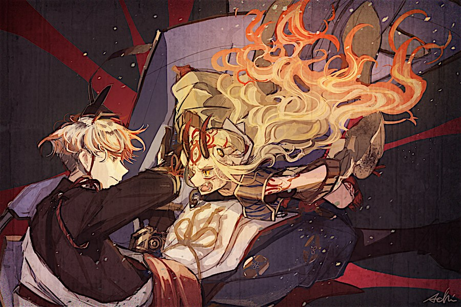

<!DOCTYPE html>
<html lang="pt-BR">
<head>
<meta charset="UTF-8"/>
<meta name="viewport" content="width=device-width,initial-scale=1.0"/>
<title>FGO Rogue</title>
<script src="https://cdnjs.cloudflare.com/ajax/libs/react/18.2.0/umd/react.production.min.js"></script>
<script src="https://cdnjs.cloudflare.com/ajax/libs/react-dom/18.2.0/umd/react-dom.production.min.js"></script>
<script src="https://cdnjs.cloudflare.com/ajax/libs/babel-standalone/7.23.2/babel.min.js"></script>
<style>
@import url('https://fonts.googleapis.com/css2?family=Cinzel:wght@400;600;700&family=Crimson+Text:ital,wght@0,400;0,600;1,400&display=swap');
*{box-sizing:border-box;margin:0;padding:0}
:root{
  --ink:#1a0a00;--parchment:#f5e6c8;--parchment-dark:#e8d5a3;
  --red:#8b1a1a;--red-bright:#c0392b;--gold:#c9a227;--gold-dim:#8b6914;
  --smoke:#2a1505;--mist:#f0e6d3;--white:#fff8f0;
  --oni-purple:#4a0e6e;--oni-purple-light:#7b2d9e;
  --hp-green:#2d6a2d;--np-blue:#1a3a6e;--np-light:#4a7ecf;
  --shadow:rgba(0,0,0,0.7);
}
body{background:var(--smoke);color:var(--white);font-family:'Crimson Text',serif;min-height:100vh;overflow-x:hidden}
h1,h2,h3,.cinzel{font-family:'Cinzel',serif}

/* ── Scrollbar ── */
::-webkit-scrollbar{width:6px}
::-webkit-scrollbar-track{background:var(--smoke)}
::-webkit-scrollbar-thumb{background:var(--gold-dim);border-radius:3px}

/* ── Layout base ── */
.screen{min-height:100vh;display:flex;flex-direction:column;align-items:center;justify-content:center;padding:20px;position:relative;overflow:hidden}
.screen::before{content:'';position:absolute;inset:0;background:url("data:image/svg+xml,%3Csvg xmlns='http://www.w3.org/2000/svg' width='60' height='60'%3E%3Ccircle cx='30' cy='30' r='1' fill='%23c9a22722'/%3E%3C/svg%3E");pointer-events:none}

/* ── Painéis ── */
.panel{background:linear-gradient(160deg,rgba(26,10,0,0.92),rgba(42,21,5,0.95));border:1px solid var(--gold-dim);border-radius:4px;padding:24px;max-width:900px;width:100%;position:relative;box-shadow:0 0 40px rgba(201,162,39,0.15),inset 0 0 20px rgba(0,0,0,0.3)}
.panel::before,.panel::after{content:'✦';position:absolute;color:var(--gold-dim);font-size:10px}
.panel::before{top:8px;left:12px}.panel::after{top:8px;right:12px}

/* ── Título principal ── */
.title-main{font-size:clamp(2rem,6vw,4rem);color:var(--gold);text-shadow:0 0 30px rgba(201,162,39,0.5),2px 2px 0 var(--ink);letter-spacing:4px;text-align:center;margin-bottom:8px}
.title-sub{color:var(--parchment-dark);font-style:italic;text-align:center;font-size:1.1rem;margin-bottom:32px;letter-spacing:2px}

/* ── Botões ── */
.btn{display:inline-flex;align-items:center;justify-content:center;gap:8px;padding:12px 28px;border:1px solid var(--gold-dim);background:linear-gradient(135deg,rgba(139,105,20,0.3),rgba(201,162,39,0.15));color:var(--gold);font-family:'Cinzel',serif;font-size:0.85rem;letter-spacing:2px;cursor:pointer;border-radius:2px;transition:all .2s;text-transform:uppercase;position:relative;overflow:hidden}
.btn::before{content:'';position:absolute;inset:0;background:linear-gradient(135deg,rgba(201,162,39,0.2),transparent);opacity:0;transition:opacity .2s}
.btn:hover::before{opacity:1}
.btn:hover{border-color:var(--gold);color:var(--white);box-shadow:0 0 20px rgba(201,162,39,0.3);transform:translateY(-1px)}
.btn:active{transform:translateY(0)}
.btn:disabled{opacity:.4;cursor:not-allowed;transform:none}
.btn-red{border-color:var(--red);color:#ff8080;background:linear-gradient(135deg,rgba(139,26,26,0.3),rgba(192,57,43,0.15))}
.btn-red:hover{border-color:var(--red-bright);color:#ffb0b0;box-shadow:0 0 20px rgba(192,57,43,0.3)}
.btn-np{border-color:var(--np-light);color:var(--np-light);background:linear-gradient(135deg,rgba(26,58,110,0.4),rgba(74,126,207,0.2));font-size:0.75rem;padding:10px 20px}
.btn-np:hover{box-shadow:0 0 25px rgba(74,126,207,0.5)}
.btn-sm{padding:8px 16px;font-size:0.75rem}
.btn-full{width:100%;margin-bottom:10px}

/* ── Divisores ornamentais ── */
.divider{display:flex;align-items:center;gap:12px;margin:20px 0}
.divider::before,.divider::after{content:'';flex:1;height:1px;background:linear-gradient(to right,transparent,var(--gold-dim),transparent)}
.divider-text{color:var(--gold-dim);font-size:.75rem;letter-spacing:3px;white-space:nowrap}

/* ── Barras de HP / NP ── */
.bar-container{margin:6px 0}
.bar-label{font-size:.75rem;color:var(--parchment-dark);letter-spacing:1px;margin-bottom:3px;display:flex;justify-content:space-between}
.bar-track{height:14px;background:rgba(0,0,0,0.5);border:1px solid rgba(255,255,255,0.1);border-radius:2px;overflow:hidden;position:relative}
.bar-fill{height:100%;transition:width .4s ease;border-radius:1px;position:relative}
.bar-fill::after{content:'';position:absolute;top:0;left:0;right:0;height:40%;background:rgba(255,255,255,0.15)}
.bar-hp{background:linear-gradient(90deg,#1a4a1a,var(--hp-green),#4aaa4a)}
.bar-np{background:linear-gradient(90deg,#0a1a4a,var(--np-blue),var(--np-light))}
.bar-hp.low{background:linear-gradient(90deg,#4a0000,#8b0000,#cc2222)}

/* ── Cards de inimigo ── */
.enemy-group{display:flex;flex-wrap:wrap;gap:8px;justify-content:center;margin:12px 0}
.enemy-card{background:rgba(0,0,0,0.4);border:1px solid var(--red);border-radius:3px;padding:10px 14px;min-width:120px;text-align:center;transition:all .2s;cursor:pointer;position:relative}
.enemy-card:hover{border-color:var(--red-bright);box-shadow:0 0 15px rgba(192,57,43,0.3)}
.enemy-card.selected{border-color:#ff6060;box-shadow:0 0 20px rgba(255,96,96,0.4);background:rgba(139,26,26,0.3)}
.enemy-card.stunned{opacity:.6}
.enemy-card.dead{opacity:.25;border-color:#444;pointer-events:none}
.enemy-card .enemy-name{font-family:'Cinzel',serif;font-size:.7rem;color:#ff9090;letter-spacing:1px}
.enemy-card .enemy-hp{font-size:.65rem;color:var(--parchment-dark);margin-top:4px}
.stun-badge{position:absolute;top:-8px;right:-8px;background:var(--oni-purple);color:#fff;font-size:.55rem;padding:2px 6px;border-radius:10px;letter-spacing:1px}

/* ── Skills de batalha ── */
.skills-row{display:flex;flex-wrap:wrap;gap:8px;justify-content:center;margin:12px 0}
.skill-btn{padding:8px 14px;border:1px solid var(--gold-dim);background:rgba(26,10,0,0.6);color:var(--parchment);font-size:.7rem;cursor:pointer;border-radius:2px;text-align:center;transition:all .2s;min-width:100px;font-family:'Cinzel',serif}
.skill-btn:hover:not(:disabled){border-color:var(--gold);color:var(--gold);box-shadow:0 0 12px rgba(201,162,39,0.25)}
.skill-btn:disabled{opacity:.4;cursor:not-allowed}
.skill-cd{display:block;font-size:.6rem;color:var(--red-bright);margin-top:3px}

/* ── Log de batalha ── */
.battle-log{background:rgba(0,0,0,0.4);border:1px solid rgba(255,255,255,0.08);border-radius:2px;padding:10px;height:160px;overflow-y:auto;margin:12px 0;font-size:.8rem;line-height:1.7}
.log-entry{padding:2px 0;border-bottom:1px solid rgba(255,255,255,0.04)}
.log-entry.player{color:#ffd080}
.log-entry.enemy{color:#ff8080}
.log-entry.system{color:var(--parchment-dark);font-style:italic}
.log-entry.heal{color:#80ff80}
.log-entry.np{color:var(--np-light);font-weight:600}

/* ── Diálogo de personagem ── */
.dialogue-box{background:rgba(0,0,0,0.7);border:1px solid var(--gold-dim);border-radius:3px;padding:16px 20px;margin:12px 0;position:relative}
.dialogue-speaker{font-family:'Cinzel',serif;font-size:.75rem;color:var(--gold);letter-spacing:2px;margin-bottom:8px}
.dialogue-text{font-style:italic;color:var(--mist);line-height:1.6;font-size:.9rem}
.portrait-placeholder{width:80px;height:100px;background:linear-gradient(160deg,rgba(74,14,110,0.4),rgba(139,26,26,0.3));border:1px solid var(--gold-dim);border-radius:2px;display:flex;align-items:center;justify-content:center;font-size:.6rem;color:var(--gold-dim);text-align:center;letter-spacing:1px;flex-shrink:0}
.portrait-img{width:80px;height:100px;object-fit:cover;object-position:center 12%;border:1px solid var(--gold-dim);border-radius:2px;flex-shrink:0;background:rgba(0,0,0,.35)}

/* ── Mapa / Caminhos ── */
.path-choice{display:grid;grid-template-columns:repeat(3,1fr);gap:12px;margin:16px 0}
.path-btn{padding:20px 10px;border:1px solid var(--gold-dim);background:rgba(0,0,0,0.4);color:var(--parchment);font-family:'Cinzel',serif;font-size:.75rem;letter-spacing:1px;cursor:pointer;border-radius:3px;text-align:center;transition:all .25s}
.path-btn:hover{border-color:var(--gold);background:rgba(201,162,39,0.1);box-shadow:0 0 20px rgba(201,162,39,0.2);transform:translateY(-2px)}
.path-icon{font-size:1.5rem;display:block;margin-bottom:8px}
.path-hint{font-size:.65rem;color:var(--parchment-dark);margin-top:4px}

/* ── Perfil / Skills ── */
.skill-row{display:flex;align-items:center;gap:12px;padding:14px;border:1px solid rgba(201,162,39,0.2);border-radius:3px;margin-bottom:10px;background:rgba(0,0,0,0.3)}
.skill-info{flex:1}
.skill-name{font-family:'Cinzel',serif;font-size:.8rem;color:var(--gold);letter-spacing:1px}
.skill-desc{font-size:.75rem;color:var(--parchment-dark);margin-top:4px;font-style:italic}
.skill-level-pips{display:flex;gap:3px;margin-top:6px}
.pip{width:14px;height:6px;border-radius:1px;background:rgba(255,255,255,0.1);border:1px solid rgba(255,255,255,0.15)}
.pip.filled{background:var(--gold);border-color:var(--gold)}

/* ── Bond ── */
.bond-section{margin:16px 0}
.bond-label{font-family:'Cinzel',serif;font-size:.7rem;color:var(--gold);letter-spacing:2px;margin-bottom:6px}
.bond-bar-track{height:10px;background:rgba(0,0,0,0.5);border:1px solid rgba(255,255,255,0.08);border-radius:10px;overflow:hidden}
.bond-bar-fill{height:100%;background:linear-gradient(90deg,var(--oni-purple),var(--oni-purple-light));border-radius:10px;transition:width .5s ease}

/* ── Notificações ── */
.notif{position:fixed;top:20px;right:20px;background:rgba(26,10,0,0.95);border:1px solid var(--gold);padding:12px 20px;border-radius:3px;font-family:'Cinzel',serif;font-size:.75rem;color:var(--gold);letter-spacing:1px;z-index:1000;animation:slideIn .3s ease;max-width:280px}
@keyframes slideIn{from{opacity:0;transform:translateX(20px)}to{opacity:1;transform:translateX(0)}}

/* ── Overlay de vitória/derrota ── */
.result-overlay{position:fixed;inset:0;background:rgba(0,0,0,0.85);display:flex;flex-direction:column;align-items:center;justify-content:center;z-index:500;padding:20px}
.result-title{font-family:'Cinzel',serif;font-size:clamp(2rem,6vw,3.5rem);letter-spacing:6px;margin-bottom:16px}
.result-win{color:var(--gold);text-shadow:0 0 40px rgba(201,162,39,0.6)}
.result-lose{color:var(--red-bright);text-shadow:0 0 40px rgba(192,57,43,0.6)}

/* ── Responsive ── */
@media(max-width:600px){
  .path-choice{grid-template-columns:1fr}
  .skills-row{gap:6px}
  .skill-btn{min-width:80px;font-size:.65rem}
  .enemy-group{gap:6px}
}

/* ── Animações de dano ── */
@keyframes dmgPop{0%{opacity:1;transform:translateY(0) scale(1)}100%{opacity:0;transform:translateY(-40px) scale(1.3)}}
.dmg-float{position:absolute;pointer-events:none;font-family:'Cinzel',serif;font-weight:700;animation:dmgPop .8s ease forwards;z-index:100}
/* ── Cut-in de Noble Phantasm (arte em tela cheia, estilo FGO) ── */
.np-cutin{position:fixed;inset:0;z-index:800;display:flex;align-items:center;justify-content:center;background:radial-gradient(ellipse at center,rgba(60,20,0,.55),rgba(0,0,0,.88));animation:cutinFlash 1.9s ease forwards;pointer-events:none}
.np-cutin img{max-width:min(92vw,760px);max-height:68vh;object-fit:contain;filter:drop-shadow(0 0 45px rgba(255,180,60,.55));animation:cutinZoom 1.9s ease forwards}
.np-cutin .cutin-text{position:absolute;bottom:10%;left:0;right:0;text-align:center;padding:0 16px}
.np-cutin .cutin-name{font-family:'Cinzel',serif;color:var(--gold);letter-spacing:5px;font-size:clamp(.9rem,3vw,1.3rem);text-shadow:0 0 24px rgba(0,0,0,.95),0 0 40px rgba(201,162,39,.4)}
.np-cutin .cutin-quote{color:var(--mist);font-style:italic;font-size:.8rem;max-width:640px;margin:8px auto 0;line-height:1.5;text-shadow:0 1px 10px rgba(0,0,0,.95)}
@keyframes cutinFlash{0%{opacity:0}8%{opacity:1}82%{opacity:1}100%{opacity:0}}
@keyframes cutinZoom{0%{transform:scale(1.07)}100%{transform:scale(1)}}
/* ── História: chat estilo visual novel ── */
.story-panel{display:flex;flex-direction:column;max-width:620px;width:100%;height:min(86vh,740px);cursor:pointer}
.chat-area{flex:1;overflow-y:auto;padding:6px 4px 12px}
.chat-msg{display:flex;gap:10px;margin-bottom:14px;animation:msgIn .35s ease;align-items:flex-start}
.chat-msg.right{flex-direction:row-reverse}
.chat-avatar{width:54px;height:54px;border:1px solid var(--gold-dim);border-radius:4px;object-fit:cover;object-position:center 10%;background:rgba(0,0,0,.4);flex-shrink:0}
.chat-avatar-q{width:54px;height:54px;border:1px solid rgba(79,195,247,.45);border-radius:4px;background:rgba(26,58,110,.3);flex-shrink:0;display:flex;align-items:center;justify-content:center;font-family:'Cinzel',serif;font-size:1.6rem;color:#4fc3f7}
.chat-body{max-width:76%}
.chat-name{font-family:'Cinzel',serif;font-size:.6rem;letter-spacing:2px;color:var(--gold);margin-bottom:4px}
.chat-msg.right .chat-name{text-align:right;color:#4fc3f7}
.chat-bubble{position:relative;background:rgba(0,0,0,.55);border:1px solid var(--gold-dim);border-radius:8px;padding:10px 14px;font-size:.88rem;line-height:1.55;color:var(--mist)}
.chat-msg.left .chat-bubble{border-top-left-radius:2px}
.chat-msg.left .chat-bubble::before{content:'';position:absolute;top:14px;left:-13px;border:6px solid transparent;border-right-color:var(--gold-dim)}
.chat-msg.right .chat-bubble{border-color:rgba(79,195,247,.45);background:rgba(26,58,110,.25);border-top-right-radius:2px}
.chat-msg.right .chat-bubble::before{content:'';position:absolute;top:14px;right:-13px;border:6px solid transparent;border-left-color:rgba(79,195,247,.45)}
.chat-bubble.action{font-style:italic;color:var(--parchment-dark)}
.chat-narration{text-align:center;font-style:italic;color:var(--parchment-dark);font-size:.82rem;margin:16px auto;max-width:88%;line-height:1.65;animation:msgIn .35s ease}
.chat-choices{display:flex;flex-direction:column;gap:8px;margin:12px auto;max-width:340px;animation:msgIn .35s ease}
.tap-hint{text-align:center;font-size:.65rem;color:var(--gold-dim);letter-spacing:2px;padding-top:8px;animation:tapPulse 1.6s ease infinite}
@keyframes msgIn{from{opacity:0;transform:translateY(10px)}to{opacity:1;transform:translateY(0)}}
@keyframes tapPulse{0%,100%{opacity:.35}50%{opacity:.9}}
/* ── Chat: variações de personagem ── */
.chat-name.hostile{color:#ff8080}
.chat-msg.left .chat-bubble.hostile{border-color:var(--red)}
.chat-msg.left .chat-bubble.hostile::before{border-right-color:var(--red)}
.chat-avatar-unknown{width:54px;height:54px;border:1px solid var(--oni-purple-light);border-radius:4px;background:radial-gradient(circle at 50% 35%,rgba(74,14,110,.65),rgba(0,0,0,.85));flex-shrink:0;display:flex;align-items:center;justify-content:center;font-family:'Cinzel',serif;font-size:1.5rem;color:var(--oni-purple-light);text-shadow:0 0 12px rgba(123,45,158,.8)}
.chat-name.unknown{color:var(--oni-purple-light)}
.chat-msg.left .chat-bubble.mystic{border-color:var(--oni-purple-light);background:rgba(74,14,110,.18)}
.chat-msg.left .chat-bubble.mystic::before{border-right-color:var(--oni-purple-light)}
/* ── FX flutuantes de combate ── */
.dmg-float{font-size:1.05rem;color:#ff8a65;text-shadow:0 0 8px rgba(0,0,0,.95),0 0 14px rgba(255,80,40,.35)}
.dmg-float.crit{font-size:1.3rem;color:#ffd257;text-shadow:0 0 10px rgba(0,0,0,.95),0 0 18px rgba(255,180,60,.5)}
.dmg-float.np{font-size:1.5rem;color:#8fc3ff;text-shadow:0 0 12px rgba(0,0,0,.95),0 0 20px rgba(79,195,247,.6)}
.dmg-float.heal{color:#7ddc7d;text-shadow:0 0 8px rgba(0,0,0,.95),0 0 14px rgba(80,220,80,.35)}
.dmg-float.miss{color:#d8d8d8;font-size:.7rem;letter-spacing:2px}
.dmg-float.stun{color:#c07ce0;font-size:.7rem;letter-spacing:1px}
.dmg-float.buff{color:var(--gold);font-size:.72rem;letter-spacing:1px}
@keyframes panelShake{0%,100%{transform:translateX(0)}20%{transform:translateX(-5px)}40%{transform:translateX(5px)}60%{transform:translateX(-3px)}80%{transform:translateX(3px)}}
.shake{animation:panelShake .4s ease}
/* ── Splash de Full Art (encounter) ── */
.splash-screen{position:fixed;inset:0;z-index:700;display:flex;flex-direction:column;align-items:center;justify-content:center;background:radial-gradient(ellipse at center,rgba(30,12,0,.6),rgba(0,0,0,.94));cursor:pointer;animation:splashFade .5s ease;padding:16px}
.splash-art{max-width:min(96vw,620px);max-height:78vh;object-fit:contain;border:1px solid var(--gold-dim);border-radius:4px;box-shadow:0 0 60px rgba(201,162,39,.25);animation:splashRise .7s cubic-bezier(.2,.8,.2,1)}
.splash-caption{margin-top:16px;text-align:center;animation:splashRise .9s cubic-bezier(.2,.8,.2,1)}
.splash-title{font-family:'Cinzel',serif;color:var(--gold);letter-spacing:6px;font-size:clamp(1rem,4vw,1.6rem);text-shadow:0 0 24px rgba(201,162,39,.5)}
.splash-sub{color:var(--parchment-dark);font-style:italic;font-size:.85rem;margin-top:6px;letter-spacing:1px}
.splash-hint{position:absolute;bottom:24px;font-size:.65rem;color:var(--gold-dim);letter-spacing:3px;animation:tapPulse 1.6s ease infinite}
@keyframes splashFade{from{opacity:0}to{opacity:1}}
@keyframes splashRise{from{opacity:0;transform:translateY(24px) scale(.97)}to{opacity:1;transform:translateY(0) scale(1)}}
/* ── Cartão de transição de mapa (só o nome) ── */
.map-title-card{position:fixed;inset:0;z-index:710;display:flex;flex-direction:column;align-items:center;justify-content:center;background:radial-gradient(ellipse at center,rgba(20,10,0,.85),rgba(0,0,0,.97));cursor:pointer;animation:splashFade .6s ease}
.map-title-card .mtc-label{font-family:'Cinzel',serif;color:var(--gold-dim);letter-spacing:6px;font-size:.7rem;margin-bottom:14px;animation:splashRise .7s ease}
.map-title-card .mtc-name{font-family:'Cinzel',serif;color:var(--gold);letter-spacing:4px;font-size:clamp(1.4rem,5vw,2.4rem);text-align:center;text-shadow:0 0 30px rgba(201,162,39,.5);animation:splashRise .9s ease}
.map-title-card .mtc-line{width:0;height:1px;background:linear-gradient(to right,transparent,var(--gold),transparent);margin-top:18px;animation:mtcLine 1.1s ease forwards}
@keyframes mtcLine{to{width:min(70vw,340px)}}
/* ── Tela de Pesadelo (Fase 3 mapa 3) ── */
.nightmare-screen{position:fixed;inset:0;z-index:720;display:flex;flex-direction:column;align-items:center;justify-content:center;background:radial-gradient(ellipse at center,#1a0508,#000);cursor:pointer;overflow:hidden}
.nightmare-narration{color:#9a8a8a;font-style:italic;font-size:1rem;text-align:center;max-width:82%;line-height:1.8;letter-spacing:1px;z-index:5;animation:nmFade 2s ease;text-shadow:0 0 20px rgba(120,20,20,.4)}
.nightmare-word{position:absolute;top:-60px;font-family:'Cinzel',serif;color:#b03030;white-space:nowrap;pointer-events:none;text-shadow:0 0 14px rgba(160,20,20,.7),0 0 30px rgba(80,0,0,.5);animation:nmFall linear forwards;opacity:.85}
.nightmare-hint{position:absolute;bottom:26px;font-size:.62rem;color:#5a3030;letter-spacing:3px;z-index:5;animation:tapPulse 1.8s ease infinite}
@keyframes nmFall{
  0%{transform:translateY(0) rotate(var(--rot,0deg));opacity:0}
  10%{opacity:.9}
  85%{opacity:.75}
  100%{transform:translateY(105vh) rotate(var(--rot,0deg));opacity:0}
}
@keyframes nmFade{from{opacity:0}to{opacity:1}}
@keyframes nmPulseBg{0%,100%{background:radial-gradient(ellipse at center,#1a0508,#000)}50%{background:radial-gradient(ellipse at center,#2a0810,#050000)}}
.nightmare-screen.active{animation:nmPulseBg 4s ease infinite}
/* ── Tela de Memória/Sonho (Fase 18 mapa 3) — glitch no trauma ── */
.memory-screen{position:fixed;inset:0;z-index:720;display:flex;flex-direction:column;align-items:center;justify-content:center;background:linear-gradient(160deg,#0d1420,#1a1410);cursor:pointer;overflow:hidden;padding:20px}
.memory-screen.calm{animation:memCalm 6s ease infinite}
@keyframes memCalm{0%,100%{background:linear-gradient(160deg,#0d1420,#1a1410)}50%{background:linear-gradient(160deg,#141c2a,#221a14)}}
.memory-screen.glitch{animation:memGlitchBg .18s steps(2) infinite}
@keyframes memGlitchBg{0%{background:#1a0808}50%{background:#0a0a18}100%{background:#180a0a}}
.memory-art{max-width:min(92vw,640px);max-height:60vh;object-fit:contain;border:1px solid rgba(200,60,40,.5);border-radius:3px;box-shadow:0 0 50px rgba(180,40,20,.35);z-index:5}
.memory-art.glitching{animation:artGlitch .16s steps(2) infinite}
@keyframes artGlitch{
  0%{transform:translate(0,0);filter:hue-rotate(0deg) saturate(1)}
  25%{transform:translate(-4px,2px);filter:hue-rotate(-20deg) saturate(1.5)}
  50%{transform:translate(3px,-2px);filter:hue-rotate(15deg) saturate(.8) contrast(1.3)}
  75%{transform:translate(-2px,-1px);filter:hue-rotate(0deg) saturate(1.2)}
  100%{transform:translate(2px,1px);filter:hue-rotate(10deg)}
}
.memory-scanlines{position:absolute;inset:0;pointer-events:none;z-index:8;background:repeating-linear-gradient(0deg,rgba(0,0,0,0) 0px,rgba(0,0,0,0) 2px,rgba(0,0,0,.15) 3px,rgba(0,0,0,0) 4px);opacity:0;transition:opacity .3s}
.memory-scanlines.on{opacity:1;animation:scanMove .3s linear infinite}
@keyframes scanMove{from{background-position-y:0}to{background-position-y:4px}}
.memory-text{max-width:560px;text-align:center;z-index:6;margin-top:18px}
.memory-narration{color:#9ab0c0;font-style:italic;font-size:.95rem;line-height:1.7;letter-spacing:.5px;animation:nmFade 1.5s ease}
.memory-scream{color:#e04040;font-family:'Cinzel',serif;font-size:1.6rem;letter-spacing:3px;text-shadow:0 0 20px rgba(220,40,40,.7);animation:screamShake .3s ease}
@keyframes screamShake{0%,100%{transform:translateX(0)}25%{transform:translateX(-6px)}75%{transform:translateX(6px)}}
/* ── Selo de Comando (vitória contra a Archer): brilho vermelho + corte ── */
.command-seal-fx{position:fixed;inset:0;z-index:850;display:flex;align-items:center;justify-content:center;background:#000;overflow:hidden;pointer-events:none}
.cs-glow{position:absolute;width:40vmin;height:40vmin;border-radius:50%;background:radial-gradient(circle,rgba(255,40,40,.9),rgba(180,0,0,.4) 45%,transparent 70%);animation:csGlow 1.3s ease-out forwards}
@keyframes csGlow{
  0%{transform:scale(0);opacity:0}
  25%{transform:scale(1);opacity:1}
  60%{transform:scale(1.15);opacity:.9}
  100%{transform:scale(3.5);opacity:0}
}
.cs-seal{position:absolute;font-family:'Cinzel',serif;font-size:14vmin;color:#ff2020;text-shadow:0 0 30px rgba(255,20,20,.95),0 0 60px rgba(200,0,0,.7);animation:csSeal 1.3s ease-out forwards;z-index:2}
@keyframes csSeal{
  0%{transform:scale(2) rotate(-20deg);opacity:0}
  25%{transform:scale(1) rotate(0deg);opacity:1;filter:blur(0)}
  70%{opacity:1}
  100%{transform:scale(.8);opacity:0}
}
.cs-slash{position:absolute;top:0;left:-20%;width:140%;height:100%;z-index:3;pointer-events:none}
.cs-slash::before,.cs-slash::after{content:'';position:absolute;background:linear-gradient(90deg,transparent,#fff 45%,#ffd0d0 50%,#fff 55%,transparent);box-shadow:0 0 24px rgba(255,255,255,.9),0 0 48px rgba(255,60,60,.8)}
.cs-slash::before{top:48%;left:0;right:0;height:5px;transform-origin:center;animation:csSlashH 1.3s ease-out forwards;opacity:0}
.cs-slash::after{top:0;bottom:0;left:50%;width:4px;transform-origin:center;animation:csSlashV 1.3s ease-out .15s forwards;opacity:0}
@keyframes csSlashH{
  0%{transform:scaleX(0) rotate(-8deg);opacity:0}
  40%{transform:scaleX(1) rotate(-8deg);opacity:1}
  100%{transform:scaleX(1) rotate(-8deg);opacity:0}
}
@keyframes csSlashV{
  0%{transform:scaleY(0);opacity:0}
  45%{transform:scaleY(1);opacity:1}
  100%{transform:scaleY(1);opacity:0}
}
.cs-flash{position:absolute;inset:0;background:#fff;z-index:4;opacity:0;animation:csFlash 1.3s ease-out forwards}
@keyframes csFlash{0%,55%{opacity:0}62%{opacity:.95}100%{opacity:0}}
.cs-label{position:absolute;bottom:18%;left:0;right:0;text-align:center;z-index:5;font-family:'Cinzel',serif;color:#ff4040;letter-spacing:6px;font-size:clamp(.9rem,3vw,1.4rem);text-shadow:0 0 20px rgba(0,0,0,.9),0 0 40px rgba(255,20,20,.6);animation:nmFade 1s ease .3s both}
</style>
</head>
<body>
<div id="root"></div>
<script type="text/babel">
const {useState,useEffect,useRef,useCallback}=React;

// ══════════════════════════════════════════════════════
// DADOS E FÓRMULAS
// ══════════════════════════════════════════════════════

function rankToPoints(r){
  const base={EX:120,A:50,B:40,C:30,D:20,E:10};
  const m=r.match(/^(EX|A|B|C|D|E)(\+\+|\+|--|-)? *$/);
  if(!m)return 30;
  const pts=base[m[1]]||30;
  const mod={'+':50,'++':100,'-':-20,'--':-40,'':0};
  return pts+(mod[m[2]||'']||0);
}
function linear(lvl,v1,v10){return Math.round((v1+((v10-v1)/9)*(lvl-1))*100)/100}
function stdCD(lvl,h=7,m=6,l=5){return lvl>=10?l:lvl>=6?m:h}
function clamp(v,mn,mx){return Math.max(mn,Math.min(mx,v))}
function rollChance(pct){return Math.random()*100<pct}
function manaGain(rank){
  const base={E:1.5,D:1.7,C:1.9,B:2.1,A:2.3,EX:2.5};
  const m=rank.match(/^(EX|A|B|C|D|E)(\+\+|\+|--|-)? *$/);
  if(!m)return 1.9;
  const g=base[m[1]]||1.9;
  const mod={'+':0.2,'++':0.4,'-':-0.2,'--':-0.4,'':0};
  return g+(mod[m[2]||'']||0);
}
function bondToNP(bond){
  if(bond>=13)return 5;if(bond>=10)return 4;
  if(bond>=7)return 3;if(bond>=4)return 2;return 1;
}
function bondReq(lvl){
  const table={1:600,2:1200,3:2400,4:4800};
  if(table[lvl])return table[lvl];
  let v=table[4];for(let i=4;i<lvl;i++)v*=2;return v;
}

// ── XP do Servo ──────────────────────────────────────
// XP necessário para ir de Nv.N → Nv.N+1
const SERVO_XP_TABLE={1:200,2:350,3:550,4:800,5:1100,6:1500,7:2000,8:2600,9:3300};
// XP ganho por ação
const XP_COMBAT_WIN=40;
const XP_TRUST_EVENT=25;
const XP_BOSS_WIN=120;
const XP_CAMPAIGN_COMPLETE=50;

function xpToNextLevel(lvl){return SERVO_XP_TABLE[lvl]||99999;}

// Carrega XP do servo do save
const XP_KEY=id=>`oni_tactics_xp_${id}`;
function loadServoXP(id){
  try{const r=localStorage.getItem(XP_KEY(id));return r?JSON.parse(r):{level:1,xp:0};}
  catch{return{level:1,xp:0};}
}
function saveServoXP(id,state){try{localStorage.setItem(XP_KEY(id),JSON.stringify(state));}catch{}}
function addServoXP(servoId,pts){
  let s=loadServoXP(servoId);
  s.xp+=pts;
  while(s.level<10&&s.xp>=xpToNextLevel(s.level)){
    s.xp-=xpToNextLevel(s.level);
    s.level++;
  }
  if(s.level>=10)s.xp=0;
  saveServoXP(servoId,s);
  return s;
}

// ── IBARAKI DOUJI ────────────────────────────────────
// Registro dos servos jogáveis, por id. Preenchido conforme cada servo é definido.
const PLAYABLE_SERVOS={};

const IBARAKI={
  id:'ibaraki_douji',name:'Ibaraki Douji',className:'Berserker',
  getAtk:lvl=>Math.round(linear(lvl,1606,9636)),
  getHp:lvl=>Math.round(linear(lvl,1752,10954)),
  attributes:{
    strength:{rank:'B',points:rankToPoints('B')},
    agility:{rank:'C',points:rankToPoints('C')},
    luck:{rank:'B',points:rankToPoints('B')},
    endurance:{rank:'A+',points:rankToPoints('A+')},
    mana:{rank:'C',points:rankToPoints('C'),gainPercent:manaGain('C')},
    np:{rank:'C',points:rankToPoints('C')},
  },
  passiveSkills:[
    {id:'mad_enhance',name:'Aprimoramento de Loucura B',effect:{type:'phys_atk',value:8}},
    {id:'anti_saber',name:'Anti-Saber',effect:{type:'vs_class',cls:'Saber',value:50}},
  ],
  activeSkills:[
    {id:'natureza',name:'Natureza Demoníaca',rank:'A',
      desc:'Ataque+NP ↑ por 3 turnos',
      effectType:'buff_atk_npdmg',
      getEffect:lvl=>({atkUp:linear(lvl,10,20),npDmgUp:linear(lvl,10,30),dur:3}),
      getCD:lvl=>stdCD(lvl)},
    {id:'rampage',name:'Rampage de Oni',rank:'A+',
      desc:'Cura HP + remove debuffs + dano a 1 inimigo',
      effectType:'heal_cleanse_dmg',
      getEffect:lvl=>({healPct:linear(lvl,10,60),strDmgPct:linear(lvl,6,60)}),
      getCD:lvl=>stdCD(lvl)},
    {id:'forma',name:'Mudança de Forma',rank:'A',
      desc:'Defesa ↑ por 3 turnos',
      effectType:'buff_def',
      getEffect:lvl=>({defUp:linear(lvl,30,60),dur:3}),
      getCD:lvl=>stdCD(lvl)},
  ],
  np:{
    name:'Rashōmon Daiengi',type:'Anti-Army',isAoE:false,effectType:'dmg_defdown',
    levels:{
      1:{dmgPct:600,defDown:20},2:{dmgPct:800,defDown:25},
      3:{dmgPct:1000,defDown:30},4:{dmgPct:1200,defDown:35},5:{dmgPct:1400,defDown:40},
    },
    defDownDur:3,
  },
  dialogue:{
    summon:'Meu nome é Ibaraki Douji, a líder do clã oni no Monte Ooe. Eu sou um oni. Você é um humano. Se acovarde diante de mim.',
    battle:'Meu sangue está fervendo... Literalmente!',
    lose:'Hei. Você aí. Acabou de zombar do meu tamanho, não é?',
    win:'Hora de verificar os despojos de guerra. Não ouse soltar uma moeda sequer!',
    np:'Kehehe... O braço direito que um dia perdi para esquemas diabólicos agora está de volta como uma monstruosidade. Vai, Sogen-bi! O Grande Rancor de Rashomon!',
    skill:'Hora de falar sério, então...',
    mapDone:'Que humano estranho você é. Os Oni devem comer os homens, destruí-los e tomar tudo o que têm.',
  },
  bondDialogue:{
    1:'Suponho que há excêntricos até mesmo entre os humanos. Você me trata, um oni, como trataria um amigo. Você deve ser algum tipo de simplório... ou talvez...',
    5:'Vou admitir, você me interessa. Deveríamos compartilhar uma bebida juntos... Não se atreva a me dizer que deseja fazer amizade com um oni, mas não pode segurar sua bebida!',
    10:'Você pode ser humano, mas eu tomei gosto por você. Você se juntaria a mim e aos outros para uma vida de diversão e bebidas no Mt. Ooe?',
    15:'Tentando me comandar como um servo... Acho que aqueles alheios ao conceito de morte existem sim. Mas sua bravura tola é o que gosto em você.',
  },
  assets:{
    default:'assets/servos/ibaraki/ibaraki_default.png',
    battle:'assets/servos/ibaraki/ibaraki_battle.png',
    np:'assets/servos/ibaraki/ibaraki_np.png',
    win:'assets/servos/ibaraki/ibaraki_win.png',
    lose:'assets/servos/ibaraki/ibaraki_lose.png',
    encounter:'assets/servos/ibaraki/ibaraki_encounter.png',
  },
};

// ── EXPRESSÕES DA IBARAKI (para os diálogos da história) ──
// Registra a Ibaraki como servo jogável (junto com os demais em PLAYABLE_SERVOS)
PLAYABLE_SERVOS.ibaraki_douji=IBARAKI;
// Para adicionar uma expressão nova: solte o PNG em assets/servos/ibaraki/
// e acrescente uma linha aqui. Depois é só usar a chave no roteiro (expr:'...').
const IBARAKI_EXPRESSIONS={
  exp1:'assets/servos/ibaraki/ibaraki_win.png',     // Expressão 1: sorriso provocador
  exp2:'assets/servos/ibaraki/ibaraki_default.png', // Expressão 2: séria / irritada
  expDerrota:'assets/servos/ibaraki/ibaraki_lose.png', // Expressão de derrota: boquiaberta / indignada
  exp3:'assets/servos/ibaraki/ibaraki_exp3.png', // Expressão 3: serena / sorriso leve
  exp4:'assets/servos/ibaraki/ibaraki_exp4.png', // Expressão 4: brava / gritando
};

// ── ROTEIRO: DIÁLOGO INICIAL DA CAMPANHA ──
// Tipos de mensagem: narration | master | masterAction | ibaraki (com expr) | choice
const STORY_INTRO={
  start:[
    {type:'narration',text:'Você acorda, sente o vento gelado e um cheiro de sangue ao seu redor. Você se encontra deitado sobre o chão de terra e mato, do que parece ser uma floresta com enormes árvores à sua volta.'},
    {type:'master',text:'Argh... Onde... estou?'},
    {type:'ibaraki',expr:'exp1',text:'Oh? Finalmente acordou? Parece que o choque foi forte. Eu estava pensando em fazer de você o meu próximo jantar.'},
    {type:'narration',text:'Uma garota loira, de estatura pequena, se encontra a alguns metros da sua posição. Ela está devorando o que parece ser o corpo de um morcego gigante, sua boca está suja de sangue da criatura.'},
    {type:'narration',text:'Você começa a se lembrar de algo. Na noite anterior você tinha saído mais tarde da escola, era noite, e você sentiu algo estranho — o caminho de volta à sua casa parecia mais estranho, o caminho que sempre fez não era mais o mesmo e você se perdeu entrando em uma mata fechada, e então não se lembra de mais nada...'},
    {type:'choice',options:[
      {label:'"Quem seria você?"',speech:'Quem seria você?',next:'opt1'},
      {label:'Levantar e Correr',next:'opt2'},
    ]},
  ],
  // ── Opção 1: perguntar quem ela é ──
  opt1:[
    {type:'ibaraki',expr:'exp1',text:'Eu sou Oni-Berserker. Eu sou um oni, você é humano. Implore por sua vida.'},
    {type:'narration',text:'Aquilo na sua frente certamente não é um humano. Não é a forma dela que é estranha, mas a sensação que aquela coisa emite é algo maligno, algo mais próximo de um animal do que a de um humano.'},
    {type:'ibaraki',expr:'exp2',text:'Por mais que eu deseje te devorar aqui, estou sob um contrato..... tsch... Saiba que isso não te deixa mandar em mim. Estou aqui apenas pelo meu desejo.'},
    {type:'narration',text:'Assim que ela fala "contrato", em seu pulso uma tatuagem segmentada em três partes, semelhante a um tridente, queima em sua pele — e uma leve conexão com a garota pode ser sentida através daquele símbolo. Aquilo é uma coleira para criatura, tanto para limitar suas ações quanto para prender ela nessa realidade.'},
    {type:'ibaraki',expr:'exp1',text:'Venha, precisamos sair dessa floresta. Você parece muito novo para ser um Onmyoji, não?'},
    {type:'master',text:'Onmyoji?'},
  ],
  // ── Opção 2: tentar fugir ──
  opt2:[
    {type:'narration',text:'Seus instintos estão vibrando para fugir daquela garota, então você se levanta e se prepara para correr — mas a garota, em poucos segundos, já estava em sua frente, como se a diferença de metros que estava fosse inútil. Correr não era uma opção.'},
    {type:'ibaraki',expr:'exp1',text:'Nananinanão, você e eu estamos na merda, e você não vai fugir sozinho. Para um Onmyoji você é bem covarde, não? Eu sou a Oni-Berserker. E se acovardar novamente, por mais que estejamos ligados, eu vou arrancar seu braço.'},
    {type:'narration',text:'Assim que ela fala "ligados", em seu pulso uma tatuagem segmentada em três partes, semelhante a um tridente, queima em sua pele — e uma leve conexão com a garota pode ser sentida através daquele símbolo. Aquilo é uma coleira para criatura, tanto para limitar suas ações quanto para prender ela nessa realidade.'},
    {type:'ibaraki',expr:'exp1',text:'Vamos sair daqui, ficar muito tempo parado vai ser ruim para mim.'},
  ],
};

// ── ROTEIROS DO CONFRONTO COM A QIN ──
// Pré-batalha: mostrado ao escolher enfrentar o boss, antes do combate.
const STORY_BOSS_INTRO={
  start:[
    {type:'qin',text:'Criatura maligna, então você estava aqui? Prepare-se para pagar pelos seus pecados!'},
    {type:'ibaraki',expr:'expDerrota',text:'Dessa vez eu não fiz nada! E essa maluca está ainda atrás de mim!'},
    {type:'master',text:'Esse seu jeito de delinquente entrega bastante, certamente foi você.'},
    {type:'ibaraki',expr:'expDerrota',text:'Mas-.....'},
  ],
};
// Vitória contra a Qin
const STORY_BOSS_WIN={
  start:[
    {type:'narration',text:'Antes de desferir o último golpe, uma lança vem voando e acerta o chão entre a Ibaraki e a Qin — com isso, uma nuvem de poeira sobe. Quando o vento afasta a nuvem de poeira, a Qin já não está mais lá.'},
  ],
};
// Derrota contra a Qin
const STORY_BOSS_LOSE={
  start:[
    {type:'narration',text:'Sua vista começa a escurecer, e então você escuta uma voz feminina com um sotaque antigo.'},
    {type:'unknown',text:'Haha, patético, comece de novo!'},
  ],
};

// ── TRANSIÇÃO PARA O MAPA 2 ──
// Parte A: saída da floresta (antes da tela de transição do mapa)
const STORY_MAP2_LEAVE={
  start:[
    {type:'narration',text:'Vocês saem da floresta escura às pressas, seus passos estão mais espaçados, mas já é possível ver uma área mais aberta próxima.'},
    {type:'ibaraki',expr:'exp3',text:'As coisas estão ficando preocupantes..... aquela lança que caiu do céu certamente é de alguém nojento. Espero não topar com ela ou o cachorrinho dela novamente.'},
    {type:'master',text:'Estou começando a lembrar de alguns detalhes também.....'},
    {type:'narration',text:'Na noite anterior, quando se perdeu, você lembra de alguns flashes, memórias vagas, de uma batalha entre a Ibaraki e a Qin e mais um homem desconhecido, que possuía o que parece ser uma espada flamejante. Mas nada além disso.'},
  ],
};
// Parte B: encontro com a Deon (depois da tela de transição do mapa)
const STORY_MAP2_DEON={
  start:[
    {type:'deon',text:'Alto lá! Quem são vocês dois!?'},
    {type:'ibaraki',expr:'exp4',text:'Vaza, mulher estranha! Sou uma Oni muito perigosa quando estou com fome!'},
    {type:'masterThought',text:'Definitivamente ela não é boa em infiltrações....'},
    {type:'deon',text:'Entendo, mais uma criatura vil que saiu dessa floresta, já não basta aqueles carniçais....'},
    {type:'master',text:'Espere, vocês duas..... antes de mais nada, não somos inimigos, eu acho.... estávamos perdidos na floresta.'},
    {type:'ibaraki',expr:'exp4',text:'Mestre não precisa dar satisfação para essa coisa! Ela não vai ser um problema se eu começar batendo.'},
    {type:'masterThought',text:'Ela não deve ter percebido, mas essa garota na nossa frente é semelhante àquela mulher que enfrentamos, e até mesmo semelhante à Ibaraki. Não parece ser um humano.'},
    {type:'master',text:'Berserker, acabamos de quase não sair vivos de um embate e já deseja entrar em outro?'},
    {type:'ibaraki',expr:'exp3',text:'Mas ela é só uma garota....... não deve dar trabalho.'},
    {type:'deonPog',text:'Então..... eu não sou uma garota...... sou homem.'},
    {type:'master',text:'????'},
    {type:'ibaraki',expr:'exp3',text:'????'},
  ],
};

// ── FASE 2 DO MAPA 2 (após vencer o combate da Fase 1) ──
// Parte A: o Saber se apresenta (usa a mesma imagem da Deon, agora nomeado "Saber")
const STORY_MAP2_SABER={
  start:[
    {type:'narration',text:'Assim que passa pelo combate, você adquire um pouco da confiança do garoto afeminado.'},
    {type:'saber',text:'Prazer, meu nome é Saber. Entendo.... estamos do mesmo lado, mesmo sabendo que você é o mestre dessa criatura....'},
    {type:'ibaraki',expr:'exp4',text:'Criatura?! Deixa eu te mostrar o que é uma criatura!!!'},
    {type:'master',text:'Quietinha. Estamos há algumas horas sem comer. Saber, saberia de alguma cidade por perto? Ou um Posto de Gasolina com Mercadinho?'},
    {type:'saber',text:'Posto de Gasolina? Receio não saber o que é isso.... Mas temos uma vila na região, podemos passar lá e nos alimentar. Não confio 100% em vossas ações, mas pela honra é imoral e nada ético matar nem mesmo um animal com sede. Imagina a vida de um ser humano.'},
  ],
};
// Parte B: chegada na vila (a revelação do isekai) — após recuperar HP/Bond
const STORY_MAP2_VILLAGE={
  start:[
    {type:'narration',text:'Você chega com a Berserker e o Saber em uma vila com aparência antiga. Apesar do Saber não ter conhecimento de um "Posto de Gasolina", você percebe, pela visão da Vila, que é algo de algum momento da Era Heian. Você não está mais em 2026.'},
    {type:'master',text:'Isso é aquilo, não é.....? Um Isekai com Viagem no Tempo?!'},
    {type:'narration',text:'Você passa seu dia descansando em um pequeno quarto que o Saber lhe preparou.'},
  ],
};

// ── FASE 6 DO MAPA 2: "Não se apresentar não é falta de respeito?" ──
// Parte A: o Saber, tímido, convida o Mestre (antes da full art da Aria)
const STORY_MAP2_SABER_INVITE={
  start:[
    {type:'narration',text:'Você acaba encontrando o Saber na entrada do seu quarto. Ele te olha com uma certa expressão tímida.'},
    {type:'saber',expr:'shy',text:'Então... preciso lhe apresentar uma certa pessoa. Pelo que vi nesses dias que ficou aqui, você conquistou a confiança da vila, então acho justo lhe apresentar.'},
    {type:'narration',text:'Você sai e vai até a casa mais ao sul da vila — o que parece ser uma casa bem chique para as condições da época.'},
  ],
};
// Parte B: apresentação da Aria (depois da full art dela)
const STORY_MAP2_ARIA={
  start:[
    {type:'saber',text:'Essa é minha mestra, Aria Rothschild.'},
    {type:'aria',text:'Prazer em lhe conhecer, Mestre da Berserker.'},
    {type:'masterThought',text:'É impressão minha ou até agora ninguém se perguntou meu nome? Sou tão irrelevante assim....?'},
    {type:'master',text:'Prazer, meu nome é ---'},
    {type:'aria',text:'Não precisa dizer. Acredito que não vou conhecer sua família e nem você.'},
    {type:'masterThought',text:'Uma garota rica e ríspida.....'},
    {type:'aria',text:'Não me entenda mal, não sou desse país. Então, tirando os mestres vindos de Londres, desconheço qualquer outro indivíduo, e não desejo fazer amizades. Mas sua cooperação é bem-vinda.'},
    {type:'masterThought',text:'Não vi a Berserker em lugar algum. O que essa pirralha está aprontando?'},
  ],
};

// ── FASE 12 DO MAPA 2: "Chá da Tarde" ──
const STORY_MAP2_TEA={
  start:[
    {type:'narration',text:'Nesses poucos dias que ficou, você notou: definitivamente não é a era moderna. Seu celular não demonstra sinal, e a bateria acabou há algumas horas.'},
    {type:'ibaraki',expr:'exp2',text:'Então, Mestre, aquele cara com rosto de garota pediu para avisar que a mestra dele quer falar contigo.'},
    {type:'masterThought',text:'Berserker aceitando ser garota de recado? Será que ela tentou morder o Saber?'},
    {type:'master',text:'Certo, certo, eu vou lá.'},
    {type:'narration',text:'Chegando até o local marcado, Aria já se encontra com o Saber.'},
    {type:'aria',text:'Então, Mestre da Berserker, queria te falar sobre algo preocupante. Parece que na redondeza têm-se visto uma criatura grande de aço que cospe fogo. Espero que tenha cuidado em suas saidinhas pela redondeza.'},
    {type:'masterThought',text:'Ela é bem direta. Ela falou de Londres, achei que as pessoas de fora seriam mais amigáveis nessa época.'},
    {type:'ibaraki',expr:'exp3',text:'Mestre! Claramente devemos pegar esse monstro! Vamos agora caçar ele!'},
  ],
};

// ── FASE 15 DO MAPA 2: aparição do Nitro-Type (antes do boss) ──
const STORY_MAP2_NITRO_INTRO={
  start:[
    {type:'narration',text:'Enquanto caminha com a Berserker pelas redondezas da Vila, um som estranho ecoa ao longe — algo grande correndo, fazendo um barulho metálico.'},
    {type:'narration',text:'Por mais pesado que fosse, aquela coisa chegou rapidamente: um enorme robô metálico de cor vermelha com partes prateadas. Aquilo talvez fosse a criatura avistada — certamente aquela gente nunca viu um robô, o que poderia ser confundido com uma criatura.'},
    {type:'ibaraki',expr:'exp3',text:'Woooo! Eu vou destruir essa coisa! Mas estranho..... não tem cheiro de carne ou sangue..... Mas também não é um espírito.'},
    {type:'master',text:'Um robô. Talvez conheça como golem? Mas isso certamente é um anacronismo......'},
    {type:'saber',text:'Mestre da Berserker! Cuidado!'},
    {type:'narration',text:'O Saber vem correndo em alta velocidade, se aproximando de sua localização rapidamente.'},
    {type:'saber',text:'Vou lhe ajudar momentaneamente para derrotar tal inimigo.'},
  ],
};

// ── FASE 15: diálogos de fim do combate do boss ──
const STORY_NITRO_WIN={
  start:[
    {type:'ibaraki',expr:'exp3',text:'Hahaha! Não importa se é de carne ou de metal, todos vão cair perante a mim!'},
    {type:'saber',text:'De fato, um inimigo complicado.....'},
  ],
};
const STORY_NITRO_LOSE={
  start:[
    {type:'ibaraki',expr:'expDerrota',text:'M-mestre.....?'},
    {type:'narration',text:'A vista começa a escurecer, então uma voz desconhecida familiar ecoa em sua mente.'},
    {type:'unknown',text:'Olha isso, fufufu, não conseguiu passar disso? Imagina o que tem por vir ainda, haha. Comece de novo.'},
  ],
};

// ── FASE FIXA 1 DO MAPA 3: partida da vila rumo a Kurikara ──
const STORY_MAP3_DEPART={
  start:[
    {type:'narration',text:'Passaram-se dois dias depois do embate contra o robozão. Você ainda se encontra na vila, mas ficar aqui não vai avançar o mistério de como você chegou a este lugar.'},
    {type:'master',text:'Berserker, estamos tempo demais aqui. Precisamos partir logo.'},
    {type:'ibaraki',expr:'exp3',text:'Hehe, você sabe falar bem, Mestre. Temos que vazar daqui depois de roubar os idiotas daqui, hehe.'},
    {type:'master',text:'Que ideia torta é essa....? Sua delinquente, está fazendo algo às escondidas, não é?'},
    {type:'ibaraki',expr:'expDerrota',text:'Até tentei.... mas aquele Saber é esperto, me pegou na boca da botija umas 3x......'},
    {type:'masterThought',text:'Devo abandonar ela na primeira cova que eu achar.'},
    {type:'narration',text:'Passa-se um tempo, e você se encontra com Aria e Saber.'},
    {type:'aria',text:'Então você vai partir? A próxima cidade é Kurikara, fica a uma semana caminhando, então é melhor você se preparar.'},
    {type:'saber',text:'Ainda temos coisas pendentes na região. Não sei para onde desejam ir, mas evitem as cidades de Nara e Kyoto. As coisas naquele local estão um tanto quanto complicadas.'},
    {type:'narration',text:'Então, no início da manhã, estão a caminho da cidade de Kurikara — e o caminho parece mais sombrio a cada passo.'},
  ],
};

// ── FASE FIXA 8 DO MAPA 3: a encruzilhada ──
const STORY_MAP3_CROSSROADS={
  start:[
    {type:'narration',text:'Os primeiros dias foram mais complicados, mas assim que se avança mais, o corpo se acostuma com essa caminhada e as paradas no fim da tarde.'},
    {type:'narration',text:'Até que chegam a uma encruzilhada que se bifurca em dois caminhos para o destino.'},
    {type:'master',text:'Da última vez fomos pela esquerda e nos demos mal com tantas criaturas. Devemos ir à direita agora?'},
    {type:'ibaraki',expr:'exp2',text:'Hmm, pela esquerda não sinto nada de fato, mas à direita sinto cheiro de banquete — cheiro de carne podre e sangue.... heheheh'},
    {type:'master',text:'Posso mudar minha escolha....?'},
    {type:'narration',text:'A garota loira agarra pela manga da sua roupa e te arrasta pela trilha à direita, dando um sorriso de canto a canto.'},
  ],
};

// ── FASE FIXA 12 DO MAPA 3: o grito (combate no meio) ──
// Parte A: o grito → dispara combate contra 3 Dhampir
const STORY_MAP3_SCREAM={
  start:[
    {type:'narration',text:'O clima por essas bandas é bem mais tenso — um ambiente sombrio, uma certa pressão no ar, como se tivessem vários olhos lhe observando. Mas é cortado por um grito.'},
    {type:'unknown',text:'Arghh! Socorro!!!'},
  ],
};
// Parte B: após vencer os Dhampir — o homem idoso
const STORY_MAP3_OLDMAN={
  start:[
    {type:'narration',text:'Depois de derrotar os Dhampir, ambos se aproximam da origem do barulho. Então pode ser visto um homem de meia-idade, com as roupas manchadas de sangue e outros 4 cadáveres no chão — assim como uma carroça velha, mas sem os animais que a guiavam.'},
    {type:'oldman',text:'Me ajude....'},
    {type:'narration',text:'Ao se aproximar, podem ser vistos alguns ferimentos pelo corpo. Então, com um pouco de esforço e tempo, o sangue foi estancado, e o homem já conseguia falar um pouco depois de comer parte dos mantimentos que trazia consigo na carroça.'},
    {type:'oldman',text:'Muito obrigado. Eu e meus familiares fomos emboscados por criaturas que pareciam humanos, mas eram monstros sugadores de sangue.... eram muitos, não sei como sobrevivi.... E tinha uma mulher..... com olhos fundos e brancos.... aquilo arremessou um dos cavalos para longe como se fosse algo leve....'},
    {type:'ibaraki',expr:'exp2',text:'Certamente ainda sou mais forte! Posso fazer isso com dois cavalos!'},
    {type:'masterThought',text:'Acho que isso é uma frase dita por alguém que, na hora do vamos ver, é a primeira a cair.....'},
    {type:'oldman',text:'Me ajude a levar a carroça até a estrada principal. Me desculpe pedir isso aos meus salvadores.... mas, a partir da estrada, posso seguir sozinho e levá-la até uma vila atrás para achar um novo cavalo.....'},
    {type:'master',text:'Pode deixar, te ajudo sim.'},
  ],
};

// ── FASE FIXA 14 DO MAPA 3: despedida do homem idoso ──
const STORY_MAP3_FAREWELL={
  start:[
    {type:'narration',text:'Depois de um tempo, finalmente conseguem colocar a carroça na estrada principal. O homem idoso escondeu a maioria dos itens que estavam na carroça em um canto e os cobriu com galhos e folhas.'},
    {type:'oldman',text:'Com a carroça mais leve, consigo levá-la até a próxima vila. Podem ficar com o resto das minhas reservas de comida — a cidade que vocês falaram ainda é muito distante, e eu já não vou mais precisar.'},
    {type:'master',text:'Obrigado, usaremos sim, pode deixar. Os ferimentos ainda estão se fechando, então recomendo que fique aqui por um tempo antes de partir.'},
    {type:'oldman',text:'Você é um bom rapaz. Lhe desejo uma boa viagem.'},
    {type:'ibaraki',expr:'exp1',text:'Vamos rápido, quero topar com a mulher e dar um sacode nela.'},
  ],
};

// ── DIÁLOGO PRÉ-BOSS DO MAPA 3: o encontro com a Archer ──
const STORY_MAP3_ARCHER_INTRO={
  start:[
    {type:'narration',text:'Enquanto caminham, uma névoa sinistra surge na estrada. Sons grotescos podem ser ouvidos, e então uma mulher alta, de pele pálida, olhos brancos e sem vida, surge. Aquilo não era ninguém menos do que a mulher que o idoso havia comentado.'},
    {type:'narration',text:'Sua aparência, por mais exata que tenha sido descrita pelo idoso, não se comparava à pressão que ela exercia — era a própria morte andando.'},
    {type:'master',text:'Berserker..... Ainda acha que consegue peitar aquilo...?'},
    {type:'ibaraki',expr:'expDerrota',text:'Talvez.....?'},
    {type:'archer',text:'Arrrghhhh! Ahhhhhh!'},
    {type:'narration',text:'Aquela coisa não sabia falar uma frase completa, ou algo com sentido — só gritos de dor.'},
  ],
};

// ── FIM DO COMBATE CONTRA A ARCHER ──
const STORY_ARCHER_LOSE={
  start:[
    {type:'narration',text:'Aquela coisa maligna à sua frente é impiedosa e cruel. Sua vida se encontra nos últimos momentos, e sua visão começa a escurecer.....'},
    {type:'shuten',text:'Fufufu, ainda está longe de ser perfeito. Comece de novo.'},
  ],
};
// Vitória: usa o Selo de Comando (efeito visual especial antes deste diálogo)
const STORY_ARCHER_WIN={
  start:[
    {type:'narration',text:'Com a alta regeneração do inimigo, você não vê outra saída....'},
    {type:'narration',text:'No seu pulso, uma queimação começa. Aquela tatuagem misteriosa que havia surgido em seu pulso queima, e um brilho vermelho surge.'},
    {type:'narration',text:'Um selo de comando foi usado. A Berserker ganha um impulso de poder extremo, desferindo um golpe vertical contra o inimigo, o finalizando ali mesmo.'},
  ],
};

// ── FASE FIXA 1 DO MAPA 4: o rescaldo (a Archer se reergue como marionete) ──
const STORY_MAP4_AFTERMATH={
  start:[
    {type:'image',src:'assets/servos/archer/archer_death.jpg'},
    {type:'narration',text:'O corpo pálido da garota naquele chão de terra batida mostrava que aquele confronto havia acabado. Não parecia que ela iria se levantar, com aquela palidez e com o golpe desferido pela Berserker com toda a força.'},
    {type:'ibaraki',expr:'exp1',text:'Heheh, eu falei, não falei? Eu consigo derrotar essa coisa.'},
    {type:'master',text:'Nunca duvidei.....'},
    {type:'narration',text:'Enquanto decidiam se passavam por cima do corpo ou o contornavam para não serem amaldiçoados sem querer, aqueles olhos pálidos tremem. Parece encarar os olhos do Mestre — e, por mais que não tenha pupila, podia ser sentida aquela encarada mórbida.'},
    {type:'master',text:'Não me diga que ela tem fase 2......'},
    {type:'ibaraki',expr:'expDerrota',text:'Não diga algo assim.... isso sempre é um ato de levantar bandeira para o inimigo....'},
    {type:'master',text:'........'},
    {type:'archer',text:'Arrhhh..... Ghrrrr.....'},
    {type:'narration',text:'Ela se levanta com uma rapidez não natural, como se houvesse cordas a erguendo — uma marionete sendo controlada. Então ela adentra a névoa e desaparece.'},
    {type:'master',text:'Sinceramente, deixar ela fugir é a melhor opção....'},
    {type:'ibaraki',expr:'expDerrota',text:'Não gosto de deixar uma presa fugir. Mas aquilo nem poderia ser chamado de presa. Só dessa vez, eu deixo passar.'},
  ],
};

// ── FASE FIXA 6 DO MAPA 4: a aparição da Archer "mais viva" ──
const STORY_MAP4_APPARITION={
  start:[
    {type:'narration',text:'Enquanto se aproximam da cidade de Kurikara, uma estranha sensação de estar sendo vigiado aumenta.'},
    {type:'master',text:'Vamos ficar atentos. Alguma coisa está nos seguindo desde mais cedo.'},
    {type:'ibaraki',expr:'exp1',text:'Deve ser só mais algum bandido.'},
    {type:'master',text:'Assim espero....'},
    {type:'image',src:'assets/servos/archer/archer_visu.jpg'},
    {type:'narration',text:'Entre as árvores, um rosto familiar pode ser visto — mas estranhamente mais vivo, com roupas de cores mais fortes e olhos que, mesmo quase totalmente brancos, agora deixavam ver a sua pupila.'},
    {type:'master',text:'Ah.... aquela não é a.... Archer?'},
    {type:'ibaraki',expr:'expDerrota',text:'Gyahh! Não me assuste assim.... mas parece.'},
    {type:'narration',text:'Assim que percebeu que foi notada, a estranha garota desaparece à plena vista.'},
  ],
};

// ── FASE FIXA 18 DO MAPA 3: a memória (sonho-lembrança + flashback do trauma) ──
// Sequência em fases visuais (não é chat comum): sonho calmo → glitch → despertar.
// NOTA DE CONTINUIDADE: a "mulher nojenta com quatro subordinados" mencionada aqui
// é uma VILÃ DISTINTA (a ser apresentada futuramente) — NÃO é a Archer Corrompida.
// A mulher de "olhos fundos e brancos" que o homem idoso viu na Fase 12 = essa sim é a Archer.
const MEMORY_DREAM=[
  {type:'shuten',text:'Então, Ibaraki, vou fazer uma grande festa esta noite. Espero que compareça. Recebi um dos vinhos mais saborosos de toda a província.'},
  {type:'ibaraki',expr:'exp2',text:'Hehe, Shuten, ainda acho que é muito cedo para isso. Aquela mulher nojenta está andando por aí com seus quatro sei-lá-das-quantas. Se você ficar levantando bandeira, algo de ruim pode acontecer....'},
  {type:'shuten',text:'Fufu, aquela mulher não teria a menor chance contra mim, mesmo que eu esteja embriagada.'},
  {type:'narration',text:'Então a noite chega, e a festa se inicia no Monte Ooe. Muita música e dança, bebidas e risos poderiam ser ouvidos a distâncias.'},
];

// ── QIN LIANGYU (BOSS) ───────────────────────────────
const QIN={
  id:'qin_liangyu',name:'Qin Liangyu',className:'Lancer',isBoss:true,level:7,
  attack:5991,hp:9639,
  attributes:{
    strength:{rank:'C',points:rankToPoints('C')},
    agility:{rank:'A',points:rankToPoints('A')},
    luck:{rank:'A',points:rankToPoints('A')},
    endurance:{rank:'B',points:rankToPoints('B')},
    mana:{rank:'D',points:rankToPoints('D'),gainPercent:manaGain('D')},
    np:{rank:'B',points:rankToPoints('B')},
  },
  passiveSkills:[
    {id:'magic_res',name:'Resistência Mágica C',effect:{type:'magic_def',value:18,debuffRes:20}},
    {id:'anti_berserker',name:'Anti-Berserker',effect:{type:'vs_class',cls:'Berserker',value:50}},
  ],
  activeSkills:[
    {id:'lanca',name:'Lança de Eixo Branco',effect:{atkUp:16,critDmgUp:26,critChance:30,dur:3},cd:6},
    {id:'soldado',name:'Aspecto do Soldado Fiel',effect:{npGain:50,healPct:17},cd:6},
    {id:'abolidor',name:'Abolidor Ruffian',effect:{gutsCharges:2,gutsWindow:5,gutsRevive:30,defUp:30},cd:9},
  ],
  np:{
    name:'Poema de Altruísmo e Lealdade',type:'Self Buff',isAoE:false,
    effect:{atkUp:70,atkDur:1,defUp:40,defDur:3,debuffImmDur:3},
  },
  dialogue:{
    intro:'Mumumu, eu sinto uma presença que vai perturbar esse sossego. Protegerei o sono do meu Mestre.',
    defeated:'Ah, não...Mestre...por favor, esteja seguro...',
    victory:'Vitória! Nada é melhor do que ver o Mestre sendo feliz!',
    np:'Vossa Majestade Imperial. Fico honrado com seus poemas. É por causa desses poemas, oferecerei de bom grado a minha vida!',
    skill:'É exatamente para isso que serve minha lança! Seiii!',
  },
  assets:{
    default:'assets/servos/qin/qin_default.png',
    battle:'assets/servos/qin/qin_battle.png',
    avatar:'assets/servos/qin/qin_avatar.png', // recorte do rosto da arte de batalha (chat)
    np:'assets/servos/qin/qin_np.png', // arte exclusiva do cut-in de Noble Phantasm
    encounter:'assets/servos/qin/qin_encounter.jpg',
  },
};

// ══════════════════════════════════════════════════════
// QIN LIANGYU — VERSÃO JOGÁVEL (Torre de Desafios)
// ══════════════════════════════════════════════════════
// Kit traduzido fielmente da ficha. Skills de Classe = passivas;
// Skills Pessoais = ativas (effectType genérico); NP = ataque supremo.
const QIN_PLAYABLE={
  id:'qin_liangyu',name:'Qin Liangyu',className:'Lancer',
  getAtk:lvl=>Math.round(linear(lvl,1382,8295)),
  getHp:lvl=>Math.round(linear(lvl,2142,13387)),
  attributes:{
    strength:{rank:'C',points:rankToPoints('C')},
    agility:{rank:'A',points:rankToPoints('A')},
    luck:{rank:'A',points:rankToPoints('A')},
    endurance:{rank:'B',points:rankToPoints('B')},
    mana:{rank:'D',points:rankToPoints('D'),gainPercent:manaGain('D')},
    np:{rank:'B',points:rankToPoints('B')},
  },
  // ── SKILLS DE CLASSE (PASSIVAS) ──
  passiveSkills:[
    // Resistência Mágica C: resiste a debuffs
    {id:'magic_res',name:'Resistência Mágica C',effect:{type:'debuff_res',value:20}},
    // Continuação da Batalha C+: Guts — revive 1x com 30% de HP ao ser derrotada
    {id:'battle_cont',name:'Continuação da Batalha C+',effect:{type:'guts',revivePct:30}},
  ],
  // ── SKILLS PESSOAIS (ATIVAS) ── effectType define como o motor aplica
  activeSkills:[
    {id:'soldado_leal',name:'Natureza de Soldado Leal',rank:'B',
      desc:'Ataque ↑ e ganho de NP ↑ por 3 turnos',
      effectType:'buff_atk_np',
      getEffect:lvl=>({atkUp:linear(lvl,20,30),npGain:linear(lvl,20,40),dur:3}),
      getCD:lvl=>stdCD(lvl)},
    {id:'abolicao',name:'Abolição de Rufiões',rank:'A',
      desc:'Dano direto a 1 inimigo (+vs Anti-Heróis) e Crítico ↑ por 3t',
      effectType:'direct_dmg_antihero',
      getEffect:lvl=>({strDmgPct:linear(lvl,30,60),antiHeroBonus:50,critUp:linear(lvl,20,35),critDur:3}),
      getCD:lvl=>stdCD(lvl)},
    {id:'lanca_branca',name:'Lança de Haste Branca',rank:'B',
      desc:'Ataque ↑, medo (ATK inimigo ↓) por 3t e Guts (revive 1x em 5t)',
      effectType:'buff_atk_fear_guts',
      getEffect:lvl=>({atkUp:linear(lvl,15,25),fearAtkDown:linear(lvl,15,30),dur:3,gutsTurns:5,gutsRevivePct:linear(lvl,25,40)}),
      getCD:lvl=>stdCD(lvl)},
  ],
  // ── NP (ATAQUE SUPREMO) ──
  // Canção da Lealdade Abnegada: dano ST forte + buff próprio (os 4 poemas do Imperador)
  np:{
    name:'Canção da Lealdade Abnegada',type:'Anti-Unit',isAoE:false,effectType:'dmg_selfbuff_crit',
    levels:{
      1:{dmgPct:650,atkUp:30,critUp:20},2:{dmgPct:850,atkUp:35,critUp:25},
      3:{dmgPct:1050,atkUp:40,critUp:30},4:{dmgPct:1250,atkUp:45,critUp:35},5:{dmgPct:1450,atkUp:50,critUp:40},
    },
    selfBuffDur:3,
  },
  dialogue:{
    summon:'Lancer, Qin Liangyu. Minha lança e minha lealdade são vossas, Mestre.',
    battle:'A Cavalaria Branca cavalga comigo. Que venham!',
    lose:'Perdoe-me, Mestre... falhei com o senhor...',
    win:'A vitória é nossa. Que o Imperador esteja orgulhoso.',
    np:'Posso ser ingênua e sem instrução, mas já que você confiou em mim, darei tudo de mim! Os Poemas do Altruísmo e da Lealdade! Hah! Vamos nessa!',
    skill:'Isso é para proteger o Mestre... preparem-se!',
    mapDone:'Onde houver bandidos, minha lança os expulsará. Sigamos, Mestre.',
  },
  assets:{
    default:'assets/servos/qin/qin_default.png',
    battle:'assets/servos/qin/qin_battle.png',
    np:'assets/servos/qin/qin_np.png',
    win:'assets/servos/qin/qin_default.png',
    lose:'assets/servos/qin/qin_battle.png',
    encounter:'assets/servos/qin/qin_encounter.jpg',
  },
};

// Registra a Qin como servo jogável
PLAYABLE_SERVOS.qin_liangyu=QIN_PLAYABLE;

// ══════════════════════════════════════════════════════
// CHEVALIER D'ÉON — VERSÃO JOGÁVEL (Torre de Desafios)
// ══════════════════════════════════════════════════════
// Kit fiel ao FGO: Saber defensivo. Skills de Classe = passivas;
// Skills Pessoais = ativas; NP = Fleur de Lis (debuffs + charme).
const DEON_PLAYABLE={
  id:'deon_saber',name:"Chevalier D'Éon",className:'Saber',
  getAtk:lvl=>Math.round(linear(lvl,1460,8765)),
  getHp:lvl=>Math.round(linear(lvl,2121,13256)),
  attributes:{
    strength:{rank:'A',points:rankToPoints('A')},
    agility:{rank:'B',points:rankToPoints('B')},
    luck:{rank:'A',points:rankToPoints('A')},
    endurance:{rank:'B',points:rankToPoints('B')},
    mana:{rank:'C',points:rankToPoints('C'),gainPercent:manaGain('C')},
    np:{rank:'C',points:rankToPoints('C')},
  },
  // ── SKILLS DE CLASSE (PASSIVAS) ──
  passiveSkills:[
    // Resistência Mágica C: resiste a debuffs
    {id:'magic_res',name:'Resistência Mágica C',effect:{type:'debuff_res',value:20}},
    // Montaria B: velocidade — esquiva passiva
    {id:'riding',name:'Montaria B',effect:{type:'evade_passive',value:10}},
  ],
  // ── SKILLS PESSOAIS (ATIVAS) ── fiéis às 3 skills do FGO
  activeSkills:[
    // Olho da Mente (Verdadeiro): Evade 1t + DEF up 3t
    {id:'olho_mente',name:'Olho da Mente (Verdadeiro)',rank:'C',
      desc:'Evasão (1t) e Defesa ↑ por 3 turnos',
      effectType:'evade_defup',
      getEffect:lvl=>({evadeTurns:1,defUp:linear(lvl,20,40),dur:3}),
      getCD:lvl=>stdCD(lvl)},
    // Autossugestão (Self-Suggestion): remove debuffs + resistência a debuff 3t
    {id:'autossugestao',name:'Deixe o Lírio Branco Brilhar',rank:'A+',
      desc:'Remove debuffs e Resistência a debuff ↑ por 3 turnos',
      effectType:'cleanse_debuffres',
      getEffect:lvl=>({debuffRes:linear(lvl,40,80),dur:3}),
      getCD:lvl=>stdCD(lvl)},
    // Bela Aparência (Beautiful Appearance): cura + reduz ATK inimigo (charme/distração)
    {id:'bela_aparencia',name:'Bela Aparência',rank:'C',
      desc:'Cura HP e reduz o Ataque de todos os inimigos por 3t',
      effectType:'heal_enemyatkdown',
      getEffect:lvl=>({healPct:linear(lvl,15,30),enemyAtkDown:linear(lvl,15,25),dur:3}),
      getCD:lvl=>stdCD(lvl)},
  ],
  // ── NP (ATAQUE SUPREMO): Fleur de Lis ──
  // Dança de espadas que encanta: ATK↓ e DEF↓ nos inimigos + chance de Charme.
  // Como aqui não há dano físico no NP oficial, damos um dano moderado + os debuffs.
  np:{
    name:'Fleur de Lis',type:'Anti-Army',isAoE:true,effectType:'dmg_atkdef_charm',
    levels:{
      1:{dmgPct:450,atkDown:20,defDown:20,charmChance:30},
      2:{dmgPct:550,atkDown:25,defDown:25,charmChance:40},
      3:{dmgPct:650,atkDown:30,defDown:30,charmChance:50},
      4:{dmgPct:750,atkDown:35,defDown:35,charmChance:60},
      5:{dmgPct:850,atkDown:40,defDown:40,charmChance:70},
    },
    debuffDur:3,charmDur:1,
  },
  dialogue:{
    summon:"Saber, Chevalier D'Éon. O Cavaleiro do Lírio Branco está ao seu lado, Mestre.",
    battle:'Pela honra e pela coroa. En garde!',
    lose:'Perdoe-me... o lírio... se curva...',
    win:'A dança termina. A vitória é vossa, Mestre.',
    np:'Que o lírio da Família Real seja eterno... Flor de Lis!',
    skill:'Sem problema, eu consigo lidar com isso.',
    mapDone:'Onde formos, servirei com lealdade inabalável.',
  },
  assets:{
    default:'assets/servos/deon/deon_profile.png',
    battle:'assets/servos/deon/deon_profile.png',
    np:'assets/servos/deon/deon_np.png',
    win:'assets/servos/deon/deon_profile.png',
    lose:'assets/servos/deon/deon_pog.png',
    encounter:'assets/servos/deon/deon_encounter.jpg',
  },
};
PLAYABLE_SERVOS.deon_saber=DEON_PLAYABLE;

// ══════════════════════════════════════════════════════
// BAOBHAN SITH — VERSÃO JOGÁVEL (Torre de Desafios)
// ══════════════════════════════════════════════════════
// Kit fiel ao FGO: Archer glass-cannon de maldições (curse), dreno e evasão.
const SITH_PLAYABLE={
  id:'sith_archer',name:'Baobhan Sith',className:'Archer',
  getAtk:lvl=>Math.round(linear(lvl,1575,9455)),
  getHp:lvl=>Math.round(linear(lvl,1940,12127)),
  attributes:{
    strength:{rank:'A',points:rankToPoints('A')},
    agility:{rank:'A',points:rankToPoints('A')},
    luck:{rank:'D',points:rankToPoints('D')},
    endurance:{rank:'C',points:rankToPoints('C')},
    mana:{rank:'B',points:rankToPoints('B'),gainPercent:manaGain('B')},
    np:{rank:'A',points:rankToPoints('A')},
  },
  // ── SKILLS DE CLASSE (PASSIVAS) ──
  passiveSkills:[
    // Montaria A: impulsiona a própria terra — esquiva passiva alta
    {id:'riding',name:'Montaria A',effect:{type:'evade_passive',value:15}},
    // Criação de Território A: proficiente em oficinas — regenera NP por turno
    {id:'territory',name:'Criação de Território A',effect:{type:'np_regen',value:5}},
  ],
  // ── SKILLS PESSOAIS (ATIVAS) ── fiéis às 3 skills do FGO
  activeSkills:[
    // Grimalkin A: buff de dano 3t + Invencibilidade 1 turno
    {id:'grimalkin',name:'Grimalkin',rank:'A',
      desc:'Ataque ↑ por 3t e Invencibilidade por 1 turno',
      effectType:'buff_atk_invuln',
      getEffect:lvl=>({atkUp:linear(lvl,20,40),dur:3,invulnTurns:1}),
      getCD:lvl=>stdCD(lvl,8,7,6)},
    // Sucessora Abençoada EX: sela NP e Skills do inimigo + carrega a própria barra de NP
    {id:'sucessora',name:'Sucessora Abençoada',rank:'EX',
      desc:'Sela o NP do inimigo (2t) e carrega a própria Barra de NP',
      effectType:'enemyseal_npcharge',
      getEffect:lvl=>({npCharge:linear(lvl,30,50),sealTurns:2}),
      getCD:lvl=>stdCD(lvl,9,8,7)},
    // Sanguessuga de Fada A: dreno — dano ao inimigo + cura a si mesma
    {id:'sanguessuga',name:'Sanguessuga de Fada',rank:'A',
      desc:'Drena a vida de um inimigo (dano + cura a si mesma)',
      effectType:'lifedrain',
      getEffect:lvl=>({strDmgPct:linear(lvl,40,80),healPctOfDmg:60}),
      getCD:lvl=>stdCD(lvl)},
  ],
  // ── NP (ATAQUE SUPREMO): Fetch Failnaught ──
  // Single-target Quick com Sure Hit (acerto garantido, ignora evasão) +
  // Maldição forte (curse: dano por turno alto) por vários turnos.
  np:{
    name:'Fetch Failnaught',type:'Anti-Personnel',isAoE:false,effectType:'dmg_curse',sureHit:true,
    levels:{
      1:{dmgPct:700,cursePctOfAtk:12,curseTurns:5},
      2:{dmgPct:900,cursePctOfAtk:15,curseTurns:5},
      3:{dmgPct:1100,cursePctOfAtk:18,curseTurns:5},
      4:{dmgPct:1300,cursePctOfAtk:21,curseTurns:5},
      5:{dmgPct:1500,cursePctOfAtk:25,curseTurns:5},
    },
  },
  dialogue:{
    summon:'Archer, Baobhan Sith. Fufu... vai ser divertido te ver sofrer, Mestre.',
    battle:'Hora de brincar! Sangrem para mim!',
    lose:'Impossível... eu sou a filha de Morgan...!',
    win:'Ahaha! Isso é tudo que sabem fazer? Que tédio.',
    np:'Hehe... Ehehe, ahahaha! Fracote! Perdedor! Veja você morrer sem nem saber por quê! Fetch Failnaught!',
    skill:'É um saco ter que fatiá-los pedaço por pedaço.',
    mapDone:'Que desperdício. Nem valeu a diversão. Vamos, Mestre.',
  },
  assets:{
    default:'assets/servos/archer/sith_default.png',
    battle:'assets/servos/archer/sith_default.png',
    np:'assets/servos/archer/sith_laugh.png',
    win:'assets/servos/archer/sith_smug.png',
    lose:'assets/servos/archer/sith_angry.png',
    encounter:'assets/servos/archer/archer_encounter.jpg',
  },
};
PLAYABLE_SERVOS.sith_archer=SITH_PLAYABLE;

// Lista dos servos jogáveis (para Perfil e Torre), com o critério de desbloqueio.
// unlock:null = sempre disponível; senão, exige a conquista correspondente.
const PLAYABLE_ROSTER=[
  {id:'ibaraki_douji',short:'ibaraki',unlock:null},
  {id:'qin_liangyu',short:'qin',unlock:'defeat_qin'},
  {id:'deon_saber',short:'deon',unlock:'defeat_nitro'},
  {id:'sith_archer',short:'archer',unlock:'defeat_archer'},
];

// ── INIMIGOS COMUNS ──────────────────────────────────
const ENEMIES_DATA={
  morcego:{id:'morcego',name:'Morcego Gigante',hp:900,atk:480,agility:55,strPts:30},
  ghoul:{id:'ghoul',name:'Ghoul',hp:1400,atk:720,agility:25,strPts:40},
  urso:{id:'urso',name:'Urso Gigante Negro',hp:2200,atk:950,agility:15,strPts:40},
  banshee:{id:'banshee',name:'Banshee',hp:1800,atk:1100,agility:45,strPts:50},
};
const ENEMY_IDS=Object.keys(ENEMIES_DATA);
function phaseMult(p){return 1+0.12*(p-1)}
function rollGroupSize(phase){
  const tables={
    early:[[1,55],[2,30],[3,12],[4,3]],
    mid:[[1,25],[2,30],[3,25],[4,12],[5,6],[6,2]],
    late:[[1,8],[2,20],[3,28],[4,22],[5,14],[6,6],[7,2]],
    boss:[[1,3],[2,10],[3,20],[4,22],[5,18],[6,12],[7,8],[8,5],[9,2]],
  };
  const bracket=phase<=3?'early':phase<=6?'mid':phase<=9?'late':'boss';
  const t=tables[bracket];
  const total=t.reduce((s,[,w])=>s+w,0);
  let r=Math.random()*total;
  for(const[size,w]of t){r-=w;if(r<=0)return size;}
  return t[t.length-1][0];
}
function genEncounter(phase){
  const size=rollGroupSize(phase);
  return Array.from({length:size},(_,i)=>{
    const id=ENEMY_IDS[Math.floor(Math.random()*ENEMY_IDS.length)];
    const base=ENEMIES_DATA[id];
    const m=phaseMult(phase);
    return{
      ...base,instanceId:`${id}_${i}_${Date.now()+i}`,
      maxHp:Math.round(base.hp*m),currentHp:Math.round(base.hp*m),
      atkScaled:Math.round(base.atk*m),
      damage:Math.round(base.atk*m*base.strPts/100),
      activeDebuffs:[],stunned:0,
    };
  }).sort((a,b)=>b.agility-a.agility);
}

// ── SAVE SYSTEM ──────────────────────────────────────
const SAVE_KEY='oni_tactics_profile';
const BOND_KEY=id=>`oni_tactics_bond_${id}`;

function loadProfile(){
  const def={nickname:'',sq:0,qp:0,qinDefeats:0,advSkillsUnlocked:false,
    stats:{runs:0,enemiesDefeated:0,highestDamage:0},
    achievements:{}, // id da conquista → true quando concedida (recompensa já paga)
    codex:{}, // id do personagem → true quando descoberto no Álbum
    skills:{manaBuster:1,transf:1,veneno:1,tormento:1,ossos:1},
    towerSkills:{carisma:0}, // skills exclusivas da Torre (0 = não comprada)
    perks:{energizador:0,pocaoMana:0,pactoEscudo:0,contosEpicos:0,orbeCromatico:0},
    equippedPerks:['energizador','pocaoMana','pactoEscudo']};
  try{
    const r=localStorage.getItem(SAVE_KEY);
    if(!r)return def;
    const saved=JSON.parse(r);
    // Merge profundo de perks/skills: saves antigos não têm as chaves novas,
    // e um spread raso apagaria contosEpicos/orbeCromatico do objeto default.
    return{...def,...saved,
      skills:{...def.skills,...(saved.skills||{})},
      towerSkills:{...def.towerSkills,...(saved.towerSkills||{})},
      perks:{...def.perks,...(saved.perks||{})},
      stats:{...def.stats,...(saved.stats||{})},
      achievements:{...def.achievements,...(saved.achievements||{})},
      codex:{...def.codex,...(saved.codex||{})},
      equippedPerks:saved.equippedPerks||def.equippedPerks,
    };
  }catch{return def;}
}
function saveProfile(p){try{localStorage.setItem(SAVE_KEY,JSON.stringify(p));}catch{}}

// ─── BANCO DE SQ / QP (atômico) ──────────────────────
// Read-modify-write ATÔMICO: sempre lê o valor mais recente do localStorage
// antes de somar. Isso elimina o bug de "estado velho" onde um combate
// sobrescrevia o QP ganho num evento anterior (o profile na memória do React
// ficava desatualizado). Agora nenhuma tela consegue apagar ganho de outra.
function depositSQ(amount){
  const p=loadProfile();
  const updated={...p,sq:(p.sq||0)+amount};
  saveProfile(updated);
  return updated;
}
function depositQP(amount){
  const p=loadProfile();
  const updated={...p,qp:(p.qp||0)+amount};
  saveProfile(updated);
  return updated;
}

// ─── PERKS ───────────────────────────────────────────
const PERK_DEFS={
  energizador:{
    id:'energizador',name:'Energizador de Raiz',icon:'⚡',
    desc:lvl=>`Aumenta o Ataque do Servo em +${lvl*5}% (passivo permanente)`,
    effect:lvl=>({type:'perk_atk_up',value:lvl*5}),
    costAtLevel:lvl=>800*(2**(lvl-1)), // custo pra comprar o lvl (já no lvl anterior)
  },
  pocaoMana:{
    id:'pocaoMana',name:'Poção de Mana',icon:'🔮',
    desc:lvl=>`Regenera +${(1+0.5*(lvl-1)).toFixed(1)}% de Barra de NP por turno`,
    effect:lvl=>({type:'perk_np_regen',value:parseFloat((1+0.5*(lvl-1)).toFixed(1))}),
    costAtLevel:lvl=>800*(2**(lvl-1)),
  },
  pactoEscudo:{
    id:'pactoEscudo',name:'Pacto do Escudo',icon:'🛡️',
    desc:lvl=>`Regenera +${400+50*(lvl-1)} HP por turno`,
    effect:lvl=>({type:'perk_hp_regen',value:400+50*(lvl-1)}),
    costAtLevel:lvl=>800*(2**(lvl-1)),
  },
  // ── Perks avançadas: desbloqueadas ao derrotar Qin Liangyu 1x ──
  contosEpicos:{
    id:'contosEpicos',name:'Contos Épicos de um Vagabundo',icon:'📜',
    maxLevel:3,requiresQinDefeat:true,
    desc:lvl=>`Aumenta a obtenção de SQ e QP em +${lvl*50}%`,
    effect:lvl=>({type:'perk_sq_qp_up',value:lvl*50}),
    costAtLevel:lvl=>2500+lvl*2500, // 5000 / 7500 / 10000
  },
  orbeCromatico:{
    id:'orbeCromatico',name:'Orbe Cromático',icon:'💠',
    maxLevel:10,requiresQinDefeat:true,
    desc:lvl=>`Ao ser derrotado, revive o Servo com ${lvl*10}% de HP e ${lvl*10}% de NP (1x por campanha)`,
    effect:lvl=>({type:'perk_orbe',value:lvl*10}),
    costAtLevel:lvl=>1500*lvl, // 1500 / 3000 / 4500 ... 15000
  },
};
const PERK_IDS=Object.keys(PERK_DEFS);

// Slots padrão (migração de saves antigos: as 3 perks originais equipadas)
const DEFAULT_EQUIPPED=['energizador','pocaoMana','pactoEscudo'];
const MAX_EQUIPPED_PERKS=3;

// Retorna os efeitos passivos das Perks EQUIPADAS (máx. 3 em batalha).
// Perks compradas mas não equipadas NÃO têm efeito.
function getPerkEffects(profileObj={}){
  const perks=profileObj.perks||{};
  const equipped=(profileObj.equippedPerks||DEFAULT_EQUIPPED).slice(0,MAX_EQUIPPED_PERKS);
  const effects={atkUpPercent:0,npRegenPercent:0,hpRegenPerTurn:0,sqQpBonusPercent:0,orbeRevivePercent:0};
  for(const id of equipped){
    const lvl=perks[id]||0;
    if(lvl<=0)continue;
    const def=PERK_DEFS[id];
    if(!def)continue;
    const eff=def.effect(lvl);
    if(eff.type==='perk_atk_up')effects.atkUpPercent+=eff.value;
    if(eff.type==='perk_np_regen')effects.npRegenPercent+=eff.value;
    if(eff.type==='perk_hp_regen')effects.hpRegenPerTurn+=eff.value;
    if(eff.type==='perk_sq_qp_up')effects.sqQpBonusPercent+=eff.value;
    if(eff.type==='perk_orbe')effects.orbeRevivePercent+=eff.value;
  }
  return effects;
}

// Efeitos das perks lendo o save mais recente (para telas sem prop profile)
function getActivePerkEffects(){
  return getPerkEffects(loadProfile());
}

// Registra uma vitória contra a Qin (desbloqueia as Perks avançadas).
// Leitura atômica, igual aos bancos de SQ/QP.
function markQinDefeated(){
  const p=loadProfile();
  const updated={...p,qinDefeats:(p.qinDefeats||0)+1};
  saveProfile(updated);
  return updated;
}

// Desbloqueia as skills avançadas do Mestre (Tormento, Ossos que não são meus),
// concedidas após o pesadelo da Fase 3 do mapa 3.
function unlockAdvancedSkills(){
  const p=loadProfile();
  if(p.advSkillsUnlocked)return p;
  const updated={...p,advSkillsUnlocked:true};
  saveProfile(updated);
  return updated;
}

// ─── CONQUISTAS ──────────────────────────────────────
// Cada conquista concede QP e SQ UMA vez, quando desbloqueada.
const ACHIEVEMENTS=[
  {id:'defeat_qin',name:'Derrote Qin Liangyu',desc:'Vença a General da Cavalaria Branca no Bosque.',qp:2000,sq:10,icon:'🐎'},
  {id:'defeat_nitro',name:'Derrote o Nitro-Type',desc:'Destrua o Samurai Mecanizado na Vila de Tennobara.',qp:4000,sq:15,icon:'⚙️'},
  {id:'defeat_archer',name:'Derrote a Archer Corrompida',desc:'Silencie a Fada Carniceira do Caminho Tortuoso.',qp:10000,sq:20,icon:'🏹'},
  {id:'defeat_ninja',name:'Derrote o Ninja do Clã Genji',desc:'Supere o assassino dos Arredores de Kurikara.',qp:15000,sq:26,icon:'🥷'},
];

// Concede uma conquista (se ainda não obtida): paga a recompensa e marca no profile.
function grantAchievement(id){
  const p=loadProfile();
  if(p.achievements&&p.achievements[id])return{profile:p,granted:false};
  const def=ACHIEVEMENTS.find(a=>a.id===id);
  if(!def)return{profile:p,granted:false};
  const updated={...p,
    sq:(p.sq||0)+def.sq,
    qp:(p.qp||0)+def.qp,
    achievements:{...p.achievements,[id]:true}};
  saveProfile(updated);
  return{profile:updated,granted:true,def};
}

// ─── ESTATÍSTICAS (atômicas, read-modify-write) ──────
function statsGet(){return loadProfile().stats||{runs:0,enemiesDefeated:0,highestDamage:0};}
function incRuns(){
  const p=loadProfile();
  const s={...p.stats,runs:(p.stats?.runs||0)+1};
  const up={...p,stats:s};saveProfile(up);return up;
}
function addEnemiesDefeated(n){
  if(!n)return loadProfile();
  const p=loadProfile();
  const s={...p.stats,enemiesDefeated:(p.stats?.enemiesDefeated||0)+n};
  const up={...p,stats:s};saveProfile(up);return up;
}
function recordDamage(dmg){
  const p=loadProfile();
  if((dmg||0)<=(p.stats?.highestDamage||0))return p;
  const s={...p.stats,highestDamage:Math.round(dmg)};
  const up={...p,stats:s};saveProfile(up);return up;
}

function loadBond(id){
  try{const r=localStorage.getItem(BOND_KEY(id));return r?JSON.parse(r):{level:1,points:0};}
  catch{return{level:1,points:0};}
}
function saveBond(id,b){try{localStorage.setItem(BOND_KEY(id),JSON.stringify(b));}catch{}}
function addBond(servoId,pts){
  let b=loadBond(servoId);b.points+=pts;
  let req=bondReq(b.level);
  while(b.points>=req){b.points-=req;b.level++;req=bondReq(b.level);}
  saveBond(servoId,b);return b;
}

// Cooldown escalonado das skills avançadas (desbloqueadas na Fase 3 do mapa 3)
function tormentoCD(lvl){return lvl>=10?7:lvl>=6?8:9;}
function ossosCD(lvl){return lvl>=10?5:lvl>=6?6:7;}
function advSkillCost(lvl){return 3*lvl;} // 3 SQ base, +3 por nível

function profileSkillValues(skills){
  const{manaBuster=1,transf=1,veneno=1,tormento=1,ossos=1}=skills;
  return{
    manaBuster:{lvl:manaBuster,atkBoost:linear(manaBuster,5,50),dur:1,cd:stdCD(manaBuster)},
    transf:{lvl:transf,npGain:linear(transf,5,50),cd:stdCD(transf)},
    veneno:{lvl:veneno,stunChance:linear(veneno,20,100),cd:stdCD(veneno)},
    // Tormento: dano % do HP máx do inimigo (5% base, +2.5%/nível)
    tormento:{lvl:tormento,hpDmgPct:5+2.5*(tormento-1),cd:tormentoCD(tormento)},
    // Ossos que não são meus: +DEF por 3t (10% base, +5%/nível) + limpa 1 debuff
    ossos:{lvl:ossos,defUp:10+5*(ossos-1),dur:3,cd:ossosCD(ossos)},
  };
}
function sqCost(lvl){return lvl;}

// ─── SKILLS DA TORRE DE DESAFIOS ─────────────────────
// Skills PASSIVAS que só se aplicam em runs da Torre. Compradas com SQ.
// Estrutura data-driven: para adicionar uma nova, basta acrescentar aqui,
// dar o efeito em towerSkillValues() e aplicá-lo no combate (buildTowerBonuses).
const TOWER_SKILLS=[
  {id:'carisma',name:'Carisma',icon:'👑',maxLvl:10,
   desc:'Aumenta o Ataque permanentemente e dá chance de ganho de NP.',
   // custo: 2 SQ base, sobe de 2 em 2 por nível (2,4,6,8...)
   costFor:lvl=>2*(lvl+1)},
];
// Valores efetivos de cada skill da Torre pelo nível comprado (0 = não tem)
function towerSkillValues(towerSkills){
  const{carisma=0}=towerSkills||{};
  return{
    carisma:{lvl:carisma,
      // +10% ATK base, +2,5% por nível adicional (Nv1=10%, Nv10=32,5%)
      atkUp:carisma>0?10+2.5*(carisma-1):0,
      // 40% de chance de ganhar 5% de NP ao atacar (não escala)
      npChance:carisma>0?40:0, npGain:5},
  };
}

// ══════════════════════════════════════════════════════
// COMPONENTES
// ══════════════════════════════════════════════════════

function Bar({label,current,max,type='hp',showNumbers=true}){
  const pct=clamp((current/max)*100,0,100);
  const low=type==='hp'&&pct<30;
  return(
    <div className="bar-container">
      {showNumbers&&<div className="bar-label"><span>{label}</span><span>{Math.round(current)}/{Math.round(max)}</span></div>}
      <div className="bar-track">
        <div className={`bar-fill bar-${type}${low?' low':''}`} style={{width:`${pct}%`}}/>
      </div>
    </div>
  );
}

function Portrait({src,alt,style={}}){
  const[ok,setOk]=useState(true);
  if(!src||!ok)return <div className="portrait-placeholder" style={style}>{alt||'PNG\nPENDENTE'}</div>;
  return setOk(false)}/>;
}

function DialogueBox({speaker,text,portrait}){
  if(!text)return null;
  return(
    <div className="dialogue-box">
      <div style={{display:'flex',gap:12,alignItems:'flex-start'}}>
        <Portrait src={portrait} alt={speaker} style={{width:70,height:90}}/>
        <div style={{flex:1}}>
          <div className="dialogue-speaker">{speaker}</div>
          <div className="dialogue-text">"{text}"</div>
        </div>
      </div>
    </div>
  );
}

function Notif({message,onDone}){
  useEffect(()=>{const t=setTimeout(onDone,2500);return()=>clearTimeout(t);},[]);
  return <div className="notif">{message}</div>;
}

// ── Barra de XP mini ─────────────────────────────────
function XPBar({xpState}){
  if(!xpState)return null;
  const{level,xp}=xpState;
  if(level>=10)return(
    <div style={{fontSize:'.7rem',color:'var(--gold)',fontFamily:'Cinzel,serif',letterSpacing:1}}>Servo Nv.10 — MAX</div>
  );
  const req=xpToNextLevel(level);
  const pct=clamp((xp/req)*100,0,100);
  return(
    <div>
      <div className="bar-label"><span>Servo Nv.{level}</span><span>{xp}/{req} XP</span></div>
      <div className="bar-track" style={{height:8}}>
        <div className="bar-fill" style={{width:`${pct}%`,background:'linear-gradient(90deg,#6a0dad,#b44fef)'}}/>
      </div>
    </div>
  );
}

// ══════════════════════════════════════════════════════
// MENU
// ══════════════════════════════════════════════════════
function MenuScreen({onNavigate,profile}){
  return(
    <div className="screen">
      <div className="panel" style={{textAlign:'center',maxWidth:480}}>
        <div style={{fontSize:'2.5rem',marginBottom:8}}>⛩️</div>
        <h1 className="title-main">FGO ROGUE</h1>
        <p className="title-sub">Bosque dos Caminhos Cegos</p>
        <div className="divider"><span className="divider-text">✦ MENU PRINCIPAL ✦</span></div>
        {profile.nickname&&(
          <p style={{color:'var(--parchment-dark)',fontSize:'.85rem',marginBottom:16,fontStyle:'italic'}}>
            Mestre: <strong style={{color:'var(--gold)'}}>{profile.nickname}</strong>
            &nbsp;·&nbsp; <strong style={{color:'var(--gold)'}}>{profile.sq}</strong> SQ
            &nbsp;·&nbsp; <strong style={{color:'#4fc3f7'}}>{(profile.qp||0).toLocaleString()}</strong> QP
          </p>
        )}
        <button className="btn btn-full" onClick={()=>onNavigate('campaign')}>⚔️ &nbsp; Iniciar Campanha</button>
        <button className="btn btn-full btn-red" onClick={()=>onNavigate('tower')}>🗼 &nbsp; Torre de Desafios</button>
        <button className="btn btn-full" onClick={()=>onNavigate('profile')}>📜 &nbsp; Perfil</button>
        <button className="btn btn-full" onClick={()=>onNavigate('shop')}>🏪 &nbsp; Loja de Perks</button>
        <button className="btn btn-full" onClick={()=>onNavigate('achievements')}>🏆 &nbsp; Conquistas</button>
        <button className="btn btn-full" onClick={()=>onNavigate('codex')}>📖 &nbsp; Informações</button>
        <button className="btn btn-full" onClick={()=>onNavigate('config')}>⚙️ &nbsp; Configurações</button>
        <p style={{marginTop:20,fontSize:'.65rem',color:'var(--gold-dim)',letterSpacing:2}}>FATE・ROGUELIKE ✦ v0.54</p>
      </div>
    </div>
  );
}

// ─── ÁLBUM / CÓDEX DE PERSONAGENS ────────────────────
// Cada personagem tem categoria (servo/mestre/npc), arte e informações.
// 'reveal' recebe o profile e decide se já foi descoberto pelo jogador.
const CODEX=[
  // ── SERVOS ──
  {id:'ibaraki',cat:'servo',name:'Ibaraki Douji',classe:'Berserker',
   art:'assets/servos/ibaraki/ibaraki_default.png',
   reveal:()=>true,
   info:'A Oni de Rashōmon, companheira do Mestre. Impulsiva, gulosa e provocadora, mas leal à sua maneira. No passado, foi amiga de Shuten Douji no Monte Ooe — até um homem com uma espada em chamas arrancar seu braço.',
   details:[
     {title:'IDENTIDADE',body:'Uma das Oni que surgiram na Capital Imperial durante o período Heian, cometendo exaustivamente todo tipo de atrocidade. Diz-se que Ibaraki-Douji era considerada subordinada de Shuten-Douji, que vivia no Monte Ooe. Durante o "Extermínio dos Oni do Monte Ooe" por Minamoto-no-Raikou e seus Quatro Reis Celestiais, Ibaraki cruzou espadas com Watanabe-no-Tsuna, um dos Quatro Reis. Por suas anedotas e vestígios, é classificada como uma "Anti-Heroína".'},
     {title:'LENDA',body:'Na verdade, Ibaraki-Douji não era subordinada de Shuten-Douji — acredita-se que existiu como "a líder dos Oni do Monte Ooe". Shuten nasceu do Grande Deus Ibuki do Monte Ibuki (isto é, Yamata no Orochi) e de um humano. Era apropriado que Abe-no-Seimei, autoridade da antiga Kyoto, prestasse atenção a tal ser. No entanto, quem de fato liderava os Oni do Monte Ooe não era outro senão Ibaraki-Douji.'},
     {title:'APARÊNCIA',body:'Uma garota de cabelos loiros e olhos escarlates cor de sangue. Na anedota do Rashōmon, apareceu na figura de uma "bela mulher".\n\nÉ uma Serva de estatura baixa. Cabelo loiro claro, com duas franjas encaracoladas nas laterais e cortado reto na altura das coxas; olhos de um dourado brilhante. Orelhas pontudas e brincos que lembram contas pretas. Seus chifres se projetam da testa, variando do preto ao vermelho. Veste um yukata curto e folgado (da cor de seu cabelo, com padrão floral multicolorido nas mangas), sobre uma blusa branca decotada, com um colar de grandes contas pretas e uma faixa cor de vinho amarrada em laço nas costas. Como o yukata é folgado, os ombros ficam à mostra.\n\nSuas unhas são afiadas como garras, negras por natureza. Mãos e pés são de um vermelho-sangue antinatural, que se funde à pele pálida em tatuagens tribais que sobem das mãos aos ombros e dos pés até abaixo dos joelhos. Anda descalça, com tiras pretas no peito do pé.'},
     {title:'PERSONALIDADE',body:'Uma Oni nascida neste mundo com aparência desumana. Na infância, foi estritamente disciplinada pela mãe, de linhagem nobre, para aprender o orgulho de uma Oni — ainda que, vista de fora, tal criação estivesse mais próxima do assédio do que do amor.\n\nEmbora sua aparência exale inocência, seu ser é o de um Oni: ferir humanos, devorá-los, amar o sangue. Não tem, porém, grande inclinação ao prazer egoísta de matar; não é uma Oni que traz desordem ao mundo — devora humanos como um ser vivo, próxima de um animal selvagem. Mesmo fascinada por doces, sua natureza não é a de uma jovem humana: dependendo das circunstâncias, pode devorar o próprio humano que a atraiu com doces. Nunca subestime um leão. Mas, se alguém conseguir alimentá-la, ela poderá exibir um sorriso encantador.'},
     {title:'HABILIDADES DE CLASSE',items:[
       {name:'Aprimoramento da Loucura',rank:'B',text:'Aumenta todos os parâmetros, mas remove grande parte da razão. Graças à sua natureza oni combinada à habilidade de classe, ela pode se controlar excepcionalmente — quando o faz, é capaz de raciocinar e manter uma conversa coerente.'},
     ]},
     {title:'HABILIDADES PESSOAIS',items:[
       {name:'Demônio de Natureza Oni',rank:'A',text:'Representa a natureza demoníaca e o superpoder de um oni. Só oni de sangue puro ou mestiços a adquirem. Combina Demônio Natural, Força Monstruosa, Carisma e Explosão de Mana — e, no caso de Ibaraki, sua Explosão de Mana se torna "chama". Um golpe seu, unindo Força de rank alto, Força Monstruosa A e Explosão de Mana A, gera força destrutiva impressionante.'},
       {name:'Oni de Ooe, Tumulto',rank:'A+',text:'A habilidade de se retirar da batalha, retornando um combate desvantajoso ao estado inicial. Vem da anedota em que escapou esplendidamente ao lutar contra Watanabe e ter a mão decepada pela espada "Higekiri" — permitindo-lhe fugir antes que Sakata Kintoki disparasse a Faísca Dourada.'},
       {name:'Metamorfose',rank:'A',text:'Transformação livre da própria forma — pode assumir a de uma criança ou até a de um gigante. Como sua estrutura física não cresce mais, Ibaraki usa isso ao extremo, esforçando-se diariamente para se tornar a grande oni que todos temem.'},
     ]},
     {title:'FANTASMAS NOBRES',items:[
       {name:'Grande Rancor de Rashōmon',text:'Sua mão direita, decepada por Watanabe no Tsuna. Normalmente presa, Ibaraki pode destacá-la e manipulá-la livremente — fazê-la flutuar ou usá-la como arma. Foi poderosa o bastante para arremessar Sakata Kintoki para longe. Sua variante é "Chama, Sougenbi".'},
       {name:'A Grande Chama do Monte Ooe',text:'Dez ataques consecutivos de calor escaldante que esmagam e queimam até 3 alvos, reduzindo o inimigo a cinzas e deixando apenas ossos carbonizados em brasas negras.'},
     ]},
   ],
   params:[
     {label:'Força',rank:'B'},{label:'Resistência',rank:'A+'},{label:'Agilidade',rank:'C'},
     {label:'Mana',rank:'C'},{label:'Sorte',rank:'B'},{label:'NP',rank:'C'},
   ],
   va:'Nao Toyama'},
  {id:'qin',cat:'servo',name:'Qin Liangyu',classe:'Lancer',
   art:'assets/servos/qin/qin_default.png',
   reveal:p=>(p.qinDefeats||0)>0||!!(p.achievements&&p.achievements.defeat_qin),
   info:'A General da Cavalaria Branca, guardiã do Bosque dos Caminhos Cegos. Disciplinada e honrada em combate, revive por orgulho (Guts) e é especialmente perigosa contra Berserkers.',
   details:[
     {title:'IDENTIDADE',body:'Qin Liangyu foi uma figura importante da história chinesa — aquela que deixou seu nome como a única "general feminina" registrada em uma obra histórica, a "História de Ming".\n\nOriginalmente pertencente a um grupo minoritário, Qin Liangyu casou-se com Ma Qiancheng, que governava a região de Zhongzhou, e juntos participaram de uma campanha para suprimir uma revolta. Depois, sucedendo o marido — que foi preso por um processo civil e morreu na prisão —, ela expulsou bandidos em várias ocasiões como general. Seus subordinados, conhecidos como a Cavalaria Branca, portavam lanças feitas de freixo e eram temidos por toda parte.'},
     {title:'PERSONALIDADE',body:'De temperamento gentil, e ainda que permaneça humilde, possui engenhosidade excepcional e lida com as dificuldades de forma flexível. Uma pessoa confiável da cabeça aos pés.'},
     {title:'HABILIDADES DE CLASSE',items:[
       {name:'Resistência Mágica',rank:'C',text:'Anula feitiços de magia feitos com um encantamento de dois versos ou menos. Não defende contra magia de grande escala, como Grandes Magias e Feitiços Rituais.'},
     ]},
     {title:'HABILIDADES PESSOAIS',items:[
       {name:'Natureza de um Soldado Leal',rank:'B',text:'Denota alguém que jura lealdade ao seu Mestre e, ao mesmo tempo, conquista a confiança dele. Apesar de ser nativa de um grupo minoritário e de seu marido ter sido preso sob falsas acusações, Qin Liangyu dedicou sua lealdade à Dinastia Ming — e a Dinastia depositou enorme confiança nela.'},
       {name:'Abolição de Rufiões',rank:'A',text:'A sublimação da anedota em que derrotou muitos bandidos como senhora de um castelo. Concede bônus de combate vantajoso contra Servos que são Anti-Heróis ou que têm carreiras ligadas à pirataria ou ao banditismo.'},
       {name:'Continuação da Batalha',rank:'C+',text:'Não se sabe quando desistir. Qin Liangyu mantém a superioridade em aspectos como o moral das tropas não em uma única batalha, mas em batalhas prolongadas, como cercos.'},
       {name:'Lança de Haste Branca',rank:'B',text:'Originalmente um Fantasma Nobre. A lança feita de freixo é a favorita dela e de seus subordinados. A lança em si não possui anedotas, mas tem o efeito de causar certo medo em Servos Anti-Heróis.'},
     ]},
     {title:'FANTASMAS NOBRES',items:[
       {name:'A Canção da Lealdade Abnegada',text:'Seu Fantasma Nobre principal. São quatro poemas em sua homenagem, que teriam sido escritos pelo próprio Imperador.'},
       {name:'A Lança de Haste Branca',text:'Uma lança de freixo que Qin Liangyu usava com seus subordinados. Embora não haja relatos sobre a lança em si, ela incute certo medo em Servos Anti-Heróis.'},
     ]},
   ],
   params:[
     {label:'Força',rank:'C'},{label:'Resistência',rank:'B'},{label:'Agilidade',rank:'A'},
     {label:'Mana',rank:'D'},{label:'Sorte',rank:'A'},{label:'NP',rank:'B'},
   ],
   va:'Noriko Shitaya'},
  {id:'archer',cat:'servo',name:'Baobhan Sith',classe:'Archer',
   art:'assets/servos/archer/archer_face.png',
   reveal:p=>!!(p.achievements&&p.achievements.defeat_archer),
   info:'A Fada Carniceira do Caminho Tortuoso, enfrentada como "Archer Corrompida". Uma mulher de olhos brancos e sem vida, incapaz de formar frases — só gritos de dor. Rápida e cruel, drena a vida de suas presas. A mesma que o velho da carroça avistou.',
   details:[
     {title:'IDENTIDADE',body:'Seu verdadeiro nome é Cavaleira Fada Tristan (Tam Lin Tristan), membro dos Cavaleiros da Távola Redonda da Grã-Bretanha das Fadas. Recebe tratamento favorável como "filha" e sucessora de Morgan, governante da Grã-Bretanha Perdida — uma das duas fadas criadas como bruxas em uma Grã-Bretanha onde a magia é considerada desnecessária.\n\nSeu nome como fada é Baobhan Sith, uma fada feminina das lendas escocesas. A própria palavra significa "mulher fada". Diz-se que aparece à noite para drenar a força vital das pessoas e matá-las. Tem predileção por sangue e é vulnerável à luz solar. Muitas fadas têm tanto "benefício" quanto "mal", mas Baobhan Sith é uma fada maligna que só causa "mal". Parece uma bela mulher humana, mas seus pés, escondidos sob a longa saia, são de fada — os calcanhares são "cascos de veado".\n\nOutrora era gentil, mas os Fae a maltratavam constantemente, até que Morgan (então chamada Aesc) a resgatou e adotou como filha, ensinando-a a ser cruel — transformando-a na vil e perigosa Cavaleira das Fadas.'},
     {title:'APARÊNCIA',body:'Uma personagem elegante de forte estética gótica. Longos cabelos esvoaçantes de um rosa profundo e vibrante, com mechas pretas misturadas, que emolduram seu rosto. Usa gargantilha e luvas longas até abaixo dos cotovelos.\n\nSeu traje mistura design vitoriano com elementos de fantasia. A cor principal é um vermelho carmesim intenso, com detalhes em preto e branco de atmosfera gótica: um top espartilhado e, sobre ele, uma jaqueta estruturada que se abre em cauda pontiaguda como asas. A saia tem múltiplas camadas alternando branco e uma sobreposição escura, adornadas com renda, fitas e babados. As meias são de vermelho profundo com cadarço preto ao centro, terminando em botas de plataforma de salto alto com ornamentos em forma de garras.'},
     {title:'PERSONALIDADE',body:'Diplomática e ativa, com a postura de uma governante que fala de seus desejos sem pudor e trabalha para realizá-los. Hedonista, vive apenas o momento presente, satisfazendo-se enquanto se sente bem naquele instante.\n\nPrefere a diversão, como qualquer fada — mas a única coisa "divertida" que conhece são as vozes de sofrimento dos desfavorecidos. Atormenta e pisoteia os fracos, fadas ou humanos. (Como nunca recebeu amor e sua "mãe" Morgan só a elogiava quando ela "atormentava os fracos", aprendeu a gostar disso.) Boas e puras ações a enojam profundamente, e ela faz questão de vilipendiá-las: "É óbvio que é porque eu as acho entediantes."\n\nSeu único hobby era o vandalismo. Acabou cativada pelos "saltos altos" da História Humana Correta e tornou-se colecionadora de sapatos — nisso, é sincera e diligente. No quarto dela, porém, os pés de fada cortados dos calcanhares que colecionou são guardados como tesouros.\n\nRevela-se que Baobhan Sith fora outrora uma fada bondosa, traída e mutilada pelas fadas ingratas. Morgan a encontrou com os membros arrancados e a adotou, criando-a para suprimir sua bondade. Por trás da crueldade reside uma garota aterrorizada com a possibilidade de perder o amor da mãe adotiva, à beira da loucura — sua obsessão por alcançar objetivos a leva a se ferir involuntariamente, a ponto de perder os próprios membros.'},
     {title:'HABILIDADES DE CLASSE',items:[
       {name:'Resistência Mágica',rank:'EX',text:'A Resistência Mágica da Cavaleira Fada Tristan — que nunca cede, se arrepende ou sente culpa pela maneira como age — demonstra força extraordinária.'},
       {name:'Montaria',rank:'A',text:'A Cavaleira Fada não monta em nada: impulsiona a própria terra com as pernas. Ainda assim, possui a habilidade de Montaria.'},
       {name:'Criação de Território',rank:'A',text:'Educada também como maga no mundo das fadas, é proficiente na arte de criar oficinas.'},
       {name:'Cavaleiro das Fadas',rank:'B',text:'A proteção divina de quem foi escolhido para proteger o povo das fadas — para elas, um geass. Fortalecimento anti-unidade e anti-civilização, mas proíbe ataques contra outros Cavaleiros das Fadas: quem matar outro se autodestrói.'},
     ]},
     {title:'HABILIDADES PESSOAIS',items:[
       {name:'Grimalkin',rank:'A',text:'Um legado de bruxas na Inglaterra, coroado com o nome de uma fada-gato. As características felinas são interpretadas ao estilo das fadas: "eliminar o som dos passos, aliviar o peso e aumentar a velocidade". O uso por Baobhan Sith é bastante eficaz.'},
       {name:'Sucessora Abençoada',rank:'EX',text:'Reconhecida como filha de Morgan, possui a "autoridade real de governar". Como o cavaleiro que "admoestou o Rei dos Cavaleiros", tem poder suficiente para dominar o espaço e expressar suas opiniões a Morgan. (Círculo de Domínio de Mana)'},
       {name:'Sanguessuga de Fada',rank:'A',text:'Sua habilidade como vampira: absorve os PV e NP do alvo. A antiga Baobhan Sith detestava essa arcana e não a usava diante de outros — mas foi forçada a abusar dela por diversão, transformando uma cidade inteira em necrópole transbordando de cadáveres.'},
     ]},
     {title:'FANTASMA NOBRE',items:[
       {name:'Fetch Failnaught',text:'Prejudicial ao próprio usuário, corrói sua alma a cada uso. Magia de um demônio que amaldiçoa o alvo à morte sem falha, independentemente da distância. Cria um duplo do inimigo a partir de sua carne (cabelo, unha, etc.) e, ao matar esse duplo, amaldiçoa o inimigo à morte. É semelhante a uma versão de fada do ritual ushi-no-koku-mairi.'},
     ]},
   ],
   params:[
     {label:'Força',rank:'A'},{label:'Resistência',rank:'C'},{label:'Agilidade',rank:'A'},
     {label:'Mana',rank:'B'},{label:'Sorte',rank:'D'},{label:'NP',rank:'—'},
   ],
   va:'Azumi Waki'},
  {id:'ninja',cat:'npc',name:'Ninja do Clã Genji',classe:'Assassin',
   art:'assets/servos/ninja/ninja_encounter.jpg',
   reveal:p=>!!(p.achievements&&p.achievements.defeat_ninja),
   info:'Um assassino silencioso dos arredores de Kurikara. O clã Genji não deixa testemunhas. Ágil e traiçoeiro, usa veneno e shurikens, e desaparece num piscar de olhos com seu golpe supremo.'},
  {id:'shuten',cat:'servo',name:'Shuten Douji',classe:'???',
   art:null,
   reveal:p=>(p.stats&&p.stats.runs||0)>0,
   info:'A "Voz Desconhecida" que ecoa nas derrotas com um "fufufu... comece de novo". Amiga de Ibaraki no passado, no Monte Ooe. Confiante e sarcástica, subestimava "aquela mulher nojenta e seus quatro subordinados".'},
  // ── MESTRES ──
  {id:'aria',cat:'mestre',name:'Aria Rothschild',classe:'Mestra',
   art:'assets/servos/aria/aria_avatar.png',
   reveal:p=>!!(p.achievements&&p.achievements.defeat_qin),
   info:'Uma jovem mestra de Londres, fria e ríspida. Não deseja fazer amizades, mas oferece cooperação. É a Mestra de Saber na Vila de Tennobara.'},
  // ── NPCs ──
  {id:'deon',cat:'servo',name:"Chevalier D'Eon",classe:'Saber',
   art:'assets/servos/deon/deon_profile.png',
   reveal:p=>!!(p.achievements&&p.achievements.defeat_nitro),
   info:'Um espadachim de aparência andrógina e honra inabalável — Saber, servo de Aria. Guia o Mestre até a Vila de Tennobara e, no confronto contra o Nitro-Type, empresta seu Noble Phantasm, o Fleur de Lis.',
   details:[
     {title:'IDENTIDADE',body:'Chevalier D\'Éon era o Cavaleiro do Lírio Branco. Dizia-se ser "uma mulher que era um homem, ou um homem que era uma mulher" — uma figura lendária da França dos séculos XVIII e XIX. Tanto soldado quanto escritor, teve uma carreira prolífica como espião a serviço de uma agência secreta caçada pelas grandes potências, e também foi ministro plenipotenciário e capitão de dragões.\n\nAo infiltrar-se no Império Russo em missão secreta, socializou com a Imperatriz da Rússia sob o nome de Mademoiselle Léa de Beaumont, deixando anedotas de ter a beleza elogiada pela Imperatriz e seus acompanhantes.'},
     {title:'APARÊNCIA',body:'Dizia-se que, apesar de se vestir formalmente como homem e comportar-se como tal, era dotado de uma beleza tão grande que podia passar por uma jovem encantadora. De fato, antes da idade adulta, foi apresentado à alta sociedade vestindo um vestido, ganhando reputação de "mulher bonita".\n\nO peso não provém de declaração pessoal, mas de conjectura baseada na aparência.'},
     {title:'PERSONALIDADE',body:'Vivo ou como Espírito Heroico, em corpo de homem ou de mulher, há apenas um caminho a seguir: permanecer como o cavaleiro do lírio branco. D\'Éon continuará a oferecer sua lealdade ao Mestre e à família real francesa.'},
     {title:'HABILIDADES DE CLASSE',items:[
       {name:'Resistência Mágica',rank:'C',text:'Não se defende contra magias de grande escala, como Grandes Magias e Feitiços Rituais.'},
       {name:'Montaria',rank:'B',text:'Permite controlar a maioria dos veículos e criaturas. Criaturas Fantasmagóricas, porém, não podem ser controladas.'},
     ]},
     {title:'HABILIDADES PESSOAIS',items:[
       {name:'Deixe o Lírio Branco Brilhar',rank:'A+',text:'Poderosa sugestão que tem a si mesmo como alvo. Concede alta resistência contra efeitos de Magias, Habilidades e Fantasmas Nobres que influenciam a mente. Ora homem, ora mulher — até o corpo é capaz de se transformar.'},
       {name:'Olho da Mente (Verdadeiro)',rank:'C',text:'Fruto da experiência como espião em países estrangeiros. É a explicação para o fato de que esta pessoa não é apenas fofa.'},
       {name:'Bela Aparência',rank:'C',text:'Combinada às vestimentas, confere uma beleza que torna difícil discernir o gênero por meio de uma aura (não pela aparência). Aplica modificadores ao negociar com homens e mulheres, e desconsidera efeitos que visam um gênero específico.'},
     ]},
     {title:'FANTASMA NOBRE',items:[
       {name:'Fleur de Lis',text:'Uma bela dança com espadas que encanta quem a contempla. O modo de vida de D\'Éon — que seguiu alcançando seus objetivos enquanto muitos homens e mulheres se deixavam desviar por ele — foi sublimado neste Fantasma Nobre.'},
     ]},
   ],
   params:[
     {label:'Força',rank:'A'},{label:'Resistência',rank:'B'},{label:'Agilidade',rank:'B'},
     {label:'Mana',rank:'C'},{label:'Sorte',rank:'A'},{label:'NP',rank:'C'},
   ],
   va:'Chiwa Saito'},
  {id:'oldman',cat:'npc',name:'Homem Idoso',classe:'Viajante',
   art:null,
   reveal:p=>!!(p.achievements&&p.achievements.defeat_archer)||(p.stats&&p.stats.runs||0)>3,
   info:'Um viajante de meia-idade emboscado por monstros sugadores de sangue no Caminho Tortuoso. Sobrevivente por sorte, foi ajudado pelo Mestre a levar sua carroça de volta à estrada. Testemunhou a Archer arremessar um cavalo como se nada fosse.'},
];

// ══════════════════════════════════════════════════════
// ÁLBUM / INFORMAÇÕES
// ══════════════════════════════════════════════════════
function CodexScreen({onNavigate,profile}){
  const[cat,setCat]=useState('servo');
  const[sel,setSel]=useState(null);
  const cats=[['servo','Servos'],['mestre','Mestres'],['npc','NPCs']];
  const list=CODEX.filter(c=>c.cat===cat);

  return(
    <div className="screen" style={{padding:'20px 12px'}}>
      <div className="panel" style={{maxWidth:640}}>
        <h2 className="cinzel" style={{color:'var(--gold)',letterSpacing:3,marginBottom:12}}>📖 INFORMAÇÕES</h2>

        {/* Abas de categoria */}
        <div style={{display:'flex',gap:8,marginBottom:16}}>
          {cats.map(([id,label])=>(
            <button key={id} onClick={()=>{setCat(id);setSel(null);}}
              className="btn btn-sm" style={{flex:1,
                background:cat===id?'var(--gold-dim)':'rgba(0,0,0,0.3)',
                color:cat===id?'#1a1005':'var(--parchment-dark)'}}>
              {label}
            </button>
          ))}
        </div>

        {sel?(
          // Detalhe do personagem selecionado
          (()=>{
            const c=CODEX.find(x=>x.id===sel);
            const known=c.reveal(profile);
            return(
              <div>
                <div style={{display:'flex',gap:14,marginBottom:14,alignItems:'flex-start'}}>
                  {known&&c.art
                    ?{e.target.style.display='none';}}/>
                    :<div style={{width:90,height:90,display:'flex',alignItems:'center',justifyContent:'center',fontSize:'2.5rem',color:'var(--parchment-dark)',border:'1px solid rgba(120,120,120,0.3)',borderRadius:3,background:'rgba(0,0,0,0.3)'}}>?</div>}
                  <div style={{flex:1}}>
                    <div className="cinzel" style={{color:'var(--gold)',fontSize:'1.1rem',letterSpacing:1}}>{known?c.name:'???'}</div>
                    <div style={{fontSize:'.8rem',color:'var(--parchment-dark)',marginTop:2}}>{known?c.classe:'Desconhecido'}</div>
                  </div>
                </div>
                <p style={{fontSize:'.85rem',color:'var(--parchment)',lineHeight:1.7}}>
                  {known?c.info:'Este personagem ainda não foi revelado. Continue sua jornada para descobrir mais.'}
                </p>
                {known&&c.details&&c.details.map((sec,si)=>(
                  <div key={si} style={{marginTop:14}}>
                    <div className="cinzel" style={{color:'var(--red-bright)',fontSize:'.8rem',letterSpacing:2,marginBottom:6,borderBottom:'1px solid var(--gold-dim)',paddingBottom:4}}>{sec.title}</div>
                    {sec.body&&<p style={{fontSize:'.82rem',color:'var(--parchment)',lineHeight:1.7,marginBottom:sec.items?8:0,whiteSpace:'pre-line'}}>{sec.body}</p>}
                    {sec.items&&sec.items.map((it,ii)=>(
                      <div key={ii} style={{fontSize:'.8rem',color:'var(--parchment)',lineHeight:1.6,marginBottom:6,paddingLeft:10,borderLeft:'2px solid rgba(201,162,39,0.35)'}}>
                        {it.name&&<span style={{color:'var(--gold)',fontWeight:'bold'}}>{it.name}{it.rank?` (${it.rank})`:''}: </span>}
                        {it.text}
                      </div>
                    ))}
                  </div>
                ))}
                {known&&c.params&&(
                  <div style={{marginTop:14}}>
                    <div className="cinzel" style={{color:'var(--red-bright)',fontSize:'.8rem',letterSpacing:2,marginBottom:8,borderBottom:'1px solid var(--gold-dim)',paddingBottom:4}}>PARÂMETROS</div>
                    <div style={{display:'grid',gridTemplateColumns:'1fr 1fr 1fr',gap:8}}>
                      {c.params.map((p,pi)=>(
                        <div key={pi} style={{display:'flex',justifyContent:'space-between',padding:'4px 8px',background:'rgba(0,0,0,0.25)',borderRadius:3}}>
                          <span style={{fontSize:'.72rem',color:'var(--parchment-dark)'}}>{p.label}</span>
                          <span style={{fontSize:'.78rem',color:'var(--gold)',fontFamily:'Cinzel,serif',fontWeight:'bold'}}>{p.rank}</span>
                        </div>
                      ))}
                    </div>
                  </div>
                )}
                {known&&c.va&&<div style={{marginTop:12,fontSize:'.72rem',color:'var(--parchment-dark)',fontStyle:'italic'}}>Voz: {c.va}</div>}
                <button className="btn btn-full" style={{marginTop:16}} onClick={()=>setSel(null)}>← Voltar à lista</button>
              </div>
            );
          })()
        ):(
          // Grade de personagens da categoria
          <div style={{display:'grid',gridTemplateColumns:'1fr 1fr',gap:10}}>
            {list.map(c=>{
              const known=c.reveal(profile);
              return(
                <button key={c.id} onClick={()=>setSel(c.id)}
                  style={{display:'flex',alignItems:'center',gap:10,padding:'10px 12px',
                    background:'rgba(0,0,0,0.25)',border:'1px solid var(--gold-dim)',borderRadius:3,
                    cursor:'pointer',textAlign:'left',opacity:known?1:0.6}}>
                  {known&&c.art
                    ?{e.target.style.display='none';}}/>
                    :<div style={{width:42,height:42,display:'flex',alignItems:'center',justifyContent:'center',fontSize:'1.5rem',color:'var(--parchment-dark)',background:'rgba(0,0,0,0.3)',borderRadius:3}}>?</div>}
                  <div style={{flex:1,minWidth:0}}>
                    <div style={{fontSize:'.8rem',color:known?'var(--gold)':'var(--parchment-dark)',fontFamily:'Cinzel,serif',whiteSpace:'nowrap',overflow:'hidden',textOverflow:'ellipsis'}}>{known?c.name:'???'}</div>
                    <div style={{fontSize:'.65rem',color:'var(--parchment-dark)'}}>{known?c.classe:'—'}</div>
                  </div>
                </button>
              );
            })}
          </div>
        )}

        {!sel&&<button className="btn btn-full" style={{marginTop:16}} onClick={()=>onNavigate('menu')}>← Voltar</button>}
      </div>
    </div>
  );
}

// ══════════════════════════════════════════════════════
// TORRE DE DESAFIOS — seleção de servo e mapa
// ══════════════════════════════════════════════════════
function TowerSelectScreen({onNavigate,onStart,profile,setProfile,onOpenShop}){
  // Party: até 3 servos distintos (ids curtos). O 1º escolhido é o líder.
  const[partySel,setPartySel]=useState(['ibaraki']);
  const TOWER_SERVO_OBJ={ibaraki:IBARAKI,qin:QIN_PLAYABLE,deon:DEON_PLAYABLE,archer:SITH_PLAYABLE};
  const OBJ_ID={ibaraki:'ibaraki_douji',qin:'qin_liangyu',deon:'deon_saber',archer:'sith_archer'};
  const SERVOS=[
    {id:'ibaraki',name:'Ibaraki Douji',classe:'Berserker',art:IBARAKI.assets.default,ready:true,
     unlock:null},
    {id:'qin',name:'Qin Liangyu',classe:'Lancer',art:QIN.assets.default,ready:true,
     unlock:'defeat_qin'},
    {id:'deon',name:"Chevalier D'Eon",classe:'Saber',art:DEON.assets.profile,ready:true,
     unlock:'defeat_nitro'},
    {id:'archer',name:'Baobhan Sith',classe:'Archer',art:ARCHER.assets.face,ready:true,
     unlock:'defeat_archer'},
  ];
  const done=profile.achievements||{};

  // Adiciona/remove um servo da party (máx 3, sem repetir)
  function toggleServo(id){
    setPartySel(prev=>{
      if(prev.includes(id))return prev.filter(x=>x!==id); // remove
      if(prev.length>=3)return prev; // já cheia
      return[...prev,id];
    });
  }

  return(
    <div className="screen" style={{padding:'20px 12px'}}>
      <div className="panel" style={{maxWidth:640}}>
        <h2 className="cinzel" style={{color:'var(--red-bright)',letterSpacing:3,marginBottom:4}}>🗼 TORRE DE DESAFIOS</h2>
        <p style={{color:'var(--parchment-dark)',fontSize:'.8rem',marginBottom:16}}>
          O verdadeiro teste: 20 fases por andar, inimigos reforçados. Monte uma party de até 3 Servos — eles lutam juntos, e você troca quem fica na frente.
        </p>

        <div className="divider"><span className="divider-text">MONTE SUA PARTY ({partySel.length}/3)</span></div>
        <div style={{display:'grid',gridTemplateColumns:'1fr 1fr',gap:10,marginBottom:8}}>
          {SERVOS.map(s=>{
            const unlocked=s.ready;
            const selIdx=partySel.indexOf(s.id);
            const inParty=selIdx>=0;
            return(
              <button key={s.id} disabled={!unlocked} onClick={()=>unlocked&&toggleServo(s.id)}
                style={{display:'flex',alignItems:'center',gap:10,padding:'10px 12px',
                  background:inParty?'rgba(201,162,39,0.15)':'rgba(0,0,0,0.25)',
                  border:`1px solid ${inParty?'var(--gold)':'var(--gold-dim)'}`,borderRadius:3,
                  cursor:unlocked?'pointer':'not-allowed',opacity:unlocked?1:0.5,textAlign:'left',position:'relative'}}>
                {unlocked
                  ?{e.target.style.display='none';}}/>
                  :<div style={{width:44,height:44,display:'flex',alignItems:'center',justifyContent:'center',fontSize:'1.4rem',background:'rgba(0,0,0,0.3)',borderRadius:3}}>🔒</div>}
                <div style={{flex:1,minWidth:0}}>
                  <div style={{fontSize:'.8rem',color:unlocked?'var(--gold)':'var(--parchment-dark)',fontFamily:'Cinzel,serif',whiteSpace:'nowrap',overflow:'hidden',textOverflow:'ellipsis'}}>{s.name}</div>
                  <div style={{fontSize:'.65rem',color:'var(--parchment-dark)'}}>{unlocked?s.classe:'Em breve'}</div>
                </div>
                {inParty&&<span style={{position:'absolute',top:4,right:6,fontSize:'.7rem',color:'var(--gold)',fontFamily:'Cinzel,serif'}}>{selIdx===0?'★ Líder':`#${selIdx+1}`}</span>}
              </button>
            );
          })}
        </div>
        <p style={{fontSize:'.66rem',color:'var(--parchment-dark)',marginBottom:16,fontStyle:'italic'}}>
          Toque para adicionar/remover. O primeiro é o Líder (entra na frente). Mínimo 1, máximo 3.
        </p>

        <div style={{display:'grid',gap:8,marginBottom:16}}>
          {TOWER_ORDER.map((mid,i)=>{
            const map=TOWER_MAPS[mid];
            const unlockAch=TOWER_UNLOCK[mid];
            // O 1º andar (Floresta) sempre disponível; os demais exigem ter vencido o boss na Campanha.
            const unlocked=i===0||!!done[unlockAch];
            return(
              <button key={mid} disabled={!unlocked||partySel.length<1} onClick={()=>unlocked&&partySel.length>=1&&onStart(partySel.map(id=>TOWER_SERVO_OBJ[id]),mid)}
                style={{display:'flex',alignItems:'center',justifyContent:'space-between',padding:'12px 14px',
                  background:'rgba(120,40,40,0.1)',border:`1px solid ${unlocked?'var(--red)':'rgba(120,120,120,0.25)'}`,
                  borderRadius:3,cursor:unlocked?'pointer':'not-allowed',opacity:unlocked?1:0.5}}>
                <div style={{textAlign:'left'}}>
                  <div className="cinzel" style={{color:unlocked?'var(--parchment)':'var(--parchment-dark)',fontSize:'.9rem',letterSpacing:1}}>
                    {unlocked?'':'🔒 '}Andar {i+1} — {map.name}
                  </div>
                  <div style={{fontSize:'.68rem',color:'var(--parchment-dark)',marginTop:2}}>
                    {unlocked?'20 fases · boss na fase 20':'Vença este boss na Campanha para liberar'}
                  </div>
                </div>
                {unlocked&&<span style={{color:'var(--red-bright)',fontSize:'1.2rem'}}>⚔️</span>}
              </button>
            );
          })}
        </div>

        <button className="btn btn-full btn-red" style={{marginBottom:8}} onClick={onOpenShop}>🏪 &nbsp; Loja da Torre</button>
        <button className="btn btn-full" onClick={()=>onNavigate('menu')}>← Voltar</button>
      </div>
    </div>
  );
}

// ══════════════════════════════════════════════════════
// LOJA DA TORRE — skills/perks exclusivas do modo Torre
// ══════════════════════════════════════════════════════
function TowerShopScreen({profile,setProfile,onBack}){
  const[notif,setNotif]=useState('');
  const[sq,setSq]=useState(profile.sq||0);
  const[towerSkills,setTowerSkills]=useState(profile.towerSkills||{carisma:0});

  function buy(skillDef){
    const cur=(towerSkills[skillDef.id])||0;
    if(cur>=skillDef.maxLvl){setNotif('Nível máximo atingido!');return;}
    const cost=skillDef.costFor(cur);
    // Débito atômico: lê o profile fresco do storage para não gastar sobre saldo velho
    const fresh=loadProfile();
    if((fresh.sq||0)<cost){setNotif(`Saint Quartz insuficiente! Precisa de ${cost} SQ.`);return;}
    const newTS={...fresh.towerSkills,[skillDef.id]:cur+1};
    const p={...fresh,sq:fresh.sq-cost,towerSkills:newTS};
    saveProfile(p);setProfile(p);
    setSq(p.sq);setTowerSkills(newTS);
    setNotif(`${skillDef.name} evoluída para Nv.${cur+1}!`);
  }

  return(
    <div className="screen" style={{padding:'20px 12px'}}>
      <div className="panel" style={{maxWidth:600}}>
        <h2 className="cinzel" style={{color:'var(--red-bright)',letterSpacing:3,marginBottom:4}}>🏪 LOJA DA TORRE</h2>
        <p style={{color:'var(--parchment-dark)',fontSize:'.78rem',marginBottom:12}}>
          Skills e perks que só funcionam dentro da Torre de Desafios. Compre com Saint Quartz.
        </p>
        <div style={{textAlign:'right',marginBottom:14,color:'var(--gold)',fontSize:'.85rem',fontFamily:'Cinzel,serif'}}>
          💠 {sq} SQ
        </div>

        {notif&&<div style={{background:'rgba(201,162,39,0.15)',border:'1px solid var(--gold)',borderRadius:3,padding:'8px 12px',marginBottom:12,fontSize:'.75rem',color:'var(--gold)'}}>{notif}</div>}

        {TOWER_SKILLS.map(sk=>{
          const cur=(towerSkills[sk.id])||0;
          const vals=towerSkillValues({[sk.id]:cur})[sk.id];
          const next=towerSkillValues({[sk.id]:Math.min(cur+1,sk.maxLvl)})[sk.id];
          const isMax=cur>=sk.maxLvl;
          const cost=isMax?0:sk.costFor(cur);
          const canAfford=sq>=cost;
          return(
            <div key={sk.id} style={{background:'rgba(0,0,0,0.25)',border:'1px solid var(--gold-dim)',borderRadius:4,padding:'14px',marginBottom:12}}>
              <div style={{display:'flex',justifyContent:'space-between',alignItems:'center',marginBottom:6}}>
                <span className="cinzel" style={{color:'var(--gold)',fontSize:'.95rem',letterSpacing:1}}>{sk.icon} {sk.name}</span>
                <span style={{fontSize:'.72rem',color:cur>0?'var(--red-bright)':'var(--parchment-dark)'}}>
                  {cur>0?`Nv.${cur}/${sk.maxLvl}`:'Não adquirida'}
                </span>
              </div>
              <p style={{fontSize:'.72rem',color:'var(--parchment-dark)',marginBottom:8}}>{sk.desc}</p>
              {/* Efeitos atuais vs próximos (específico do Carisma) */}
              {sk.id==='carisma'&&(
                <div style={{fontSize:'.72rem',color:'var(--parchment)',marginBottom:10,lineHeight:1.6}}>
                  <div>⚔️ ATK: <span style={{color:'var(--gold)'}}>{cur>0?`+${vals.atkUp}%`:'—'}</span>
                    {!isMax&&<span style={{color:'var(--parchment-dark)'}}> → +{next.atkUp}%</span>}</div>
                  <div>💠 NP ao atacar: <span style={{color:'var(--gold)'}}>{cur>0?`${vals.npChance}% de chance · +${vals.npGain}% NP`:'—'}</span></div>
                </div>
              )}
              <div style={{display:'flex',justifyContent:'space-between',alignItems:'center'}}>
                {isMax
                  ?<span style={{color:'var(--gold)',fontSize:'.8rem',fontFamily:'Cinzel,serif'}}>✦ NÍVEL MÁXIMO ✦</span>
                  :<span style={{fontSize:'.75rem',color:canAfford?'var(--parchment)':'#a55'}}>Custo: 💠 {cost} SQ</span>}
                {!isMax&&(
                  <button className="btn btn-sm" disabled={!canAfford} onClick={()=>buy(sk)}
                    style={{opacity:canAfford?1:0.4}}>
                    {cur>0?'↑ Evoluir':'Adquirir'}
                  </button>
                )}
              </div>
            </div>
          );
        })}

        <button className="btn btn-full" style={{marginTop:8}} onClick={onBack}>← Voltar à Torre</button>
      </div>
    </div>
  );
}

// ══════════════════════════════════════════════════════
// CONQUISTAS
// ══════════════════════════════════════════════════════
function AchievementsScreen({onNavigate,profile}){
  const done=profile.achievements||{};
  const total=ACHIEVEMENTS.length;
  const unlocked=ACHIEVEMENTS.filter(a=>done[a.id]).length;
  return(
    <div className="screen" style={{padding:'20px 12px'}}>
      <div className="panel" style={{maxWidth:600}}>
        <h2 className="cinzel" style={{color:'var(--gold)',letterSpacing:3,marginBottom:4}}>🏆 CONQUISTAS</h2>
        <p style={{color:'var(--parchment-dark)',fontSize:'.8rem',marginBottom:16}}>
          {unlocked} de {total} desbloqueadas
        </p>
        {ACHIEVEMENTS.map(a=>{
          const got=!!done[a.id];
          return(
            <div key={a.id} style={{
              display:'flex',alignItems:'center',gap:12,padding:'12px 14px',marginBottom:10,
              background:got?'rgba(201,162,39,0.1)':'rgba(0,0,0,0.25)',
              border:`1px solid ${got?'var(--gold-dim)':'rgba(120,120,120,0.2)'}`,
              borderRadius:3,opacity:got?1:0.65}}>
              <div style={{fontSize:'1.8rem',filter:got?'none':'grayscale(1)'}}>{got?a.icon:'🔒'}</div>
              <div style={{flex:1}}>
                <div className="cinzel" style={{color:got?'var(--gold)':'var(--parchment-dark)',fontSize:'.9rem',letterSpacing:1}}>{a.name}</div>
                <div style={{fontSize:'.75rem',color:'var(--parchment-dark)',marginTop:2}}>{a.desc}</div>
                <div style={{fontSize:'.7rem',color:got?'#4fc3f7':'var(--parchment-dark)',marginTop:4}}>
                  Recompensa: {a.qp.toLocaleString()} QP · {a.sq} SQ {got&&<span style={{color:'var(--gold)'}}>✓ RECEBIDA</span>}
                </div>
              </div>
            </div>
          );
        })}
        <button className="btn btn-full" style={{marginTop:16}} onClick={()=>onNavigate('menu')}>← Voltar</button>
      </div>
    </div>
  );
}

// ══════════════════════════════════════════════════════
// PERFIL
// ══════════════════════════════════════════════════════
function ProfileScreen({onNavigate,profile,setProfile}){
  const[nick,setNick]=useState(profile.nickname);
  const[notif,setNotif]=useState('');
  const sv=profileSkillValues(profile.skills);

  function save(){
    const p={...profile,nickname:nick.trim()||'Mestre'};
    saveProfile(p);setProfile(p);setNotif('Perfil salvo!');
  }
  const ADV_SKILLS=['tormento','ossos'];
  function skillCostFor(key,lvl){return ADV_SKILLS.includes(key)?advSkillCost(lvl):sqCost(lvl);}

  function upgrade(key){
    const fresh=loadProfile(); // leitura fresca: nunca gasta em cima de saldo desatualizado
    const cur=(fresh.skills&&fresh.skills[key])||1;
    if(cur>=10)return;
    const cost=skillCostFor(key,cur);
    if((fresh.sq||0)<cost){setNotif(`SQ insuficiente! Precisa de ${cost} SQ.`);return;}
    const p={...fresh,sq:fresh.sq-cost,skills:{...fresh.skills,[key]:cur+1}};
    saveProfile(p);setProfile(p);
    setNotif(`Skill evoluída para Nv.${cur+1}!`);
  }

  const skillDefs=[
    {key:'manaBuster',name:'Mana Buster',
     desc:lvl=>`Ataque +${linear(lvl,5,50)}% por 1 turno · Recarga ${stdCD(lvl)}t`},
    {key:'transf',name:'Transferência de Mana',
     desc:lvl=>`+${linear(lvl,5,50)}% Barra de NP · Recarga ${stdCD(lvl)}t`},
    {key:'veneno',name:'Veneno de Brasilisco',
     desc:lvl=>`Atordoar ${linear(lvl,20,100)}% chance · Recarga ${stdCD(lvl)}t`},
    {key:'tormento',name:'Tormento',adv:true,
     desc:lvl=>`Causa ${(5+2.5*(lvl-1)).toFixed(1)}% do HP do inimigo · Recarga ${tormentoCD(lvl)}t`},
    {key:'ossos',name:'Ossos que não são meus',adv:true,
     desc:lvl=>`+${10+5*(lvl-1)}% Defesa por 3t + limpa 1 debuff · Recarga ${ossosCD(lvl)}t`},
  ];

  return(
    <div className="screen" style={{padding:'20px 12px'}}>
      {notif&&<Notif message={notif} onDone={()=>setNotif('')}/>}
      <div className="panel" style={{maxWidth:600}}>
        <h2 className="cinzel" style={{color:'var(--gold)',letterSpacing:3,marginBottom:16}}>✦ PERFIL ✦</h2>

        <div style={{marginBottom:20}}>
          <label style={{fontSize:'.75rem',color:'var(--parchment-dark)',letterSpacing:2}}>NICKNAME DO MESTRE</label>
          <div style={{display:'flex',gap:8,marginTop:6}}>
            <input value={nick} onChange={e=>setNick(e.target.value)}
              style={{flex:1,background:'rgba(0,0,0,0.4)',border:'1px solid var(--gold-dim)',color:'var(--white)',padding:'8px 12px',borderRadius:2,fontFamily:'Crimson Text,serif',fontSize:'1rem'}}
              placeholder="Digite seu nome..." maxLength={24}/>
            <button className="btn btn-sm" onClick={save}>Salvar</button>
          </div>
        </div>

        {/* Banco de Moedas */}
        <div style={{background:'rgba(201,162,39,0.08)',border:'1px solid var(--gold-dim)',borderRadius:3,padding:14,marginBottom:16}}>
          <div className="cinzel" style={{color:'var(--gold)',fontSize:'.8rem',letterSpacing:2,marginBottom:8}}>🏦 BANCO DO MESTRE</div>
          <div style={{display:'grid',gridTemplateColumns:'1fr 1fr',gap:12}}>
            <div>
              <div style={{fontSize:'.65rem',color:'var(--parchment-dark)',letterSpacing:1}}>SAINT QUARTZ</div>
              <div style={{fontSize:'1.4rem',fontFamily:'Cinzel,serif',color:'var(--gold)',letterSpacing:2}}>{profile.sq} <span style={{fontSize:'.7rem',color:'var(--gold-dim)'}}>SQ</span></div>
              <div style={{fontSize:'.65rem',color:'var(--parchment-dark)',marginTop:2}}>Usar para evoluir Skills</div>
            </div>
            <div>
              <div style={{fontSize:'.65rem',color:'#4fc3f7',letterSpacing:1}}>QUANTUM PIECE</div>
              <div style={{fontSize:'1.4rem',fontFamily:'Cinzel,serif',color:'#4fc3f7',letterSpacing:2}}>{(profile.qp||0).toLocaleString()} <span style={{fontSize:'.7rem',color:'#1e88e5'}}>QP</span></div>
              <div style={{fontSize:'.65rem',color:'var(--parchment-dark)',marginTop:2}}>Usar para comprar Perks</div>
            </div>
          </div>
        </div>

        {/* Estatísticas da jornada */}
        <div style={{background:'rgba(120,40,40,0.08)',border:'1px solid var(--red)',borderRadius:3,padding:14,marginBottom:16}}>
          <div className="cinzel" style={{color:'var(--red-bright)',fontSize:'.8rem',letterSpacing:2,marginBottom:10}}>📖 CRÔNICAS DO MESTRE</div>
          <div style={{display:'grid',gridTemplateColumns:'1fr 1fr 1fr',gap:10,textAlign:'center'}}>
            <div>
              <div style={{fontSize:'1.5rem',fontFamily:'Cinzel,serif',color:'var(--parchment)',letterSpacing:1}}>{(profile.stats?.runs||0).toLocaleString()}</div>
              <div style={{fontSize:'.6rem',color:'var(--parchment-dark)',letterSpacing:1,marginTop:2}}>RUNS FEITAS</div>
            </div>
            <div>
              <div style={{fontSize:'1.5rem',fontFamily:'Cinzel,serif',color:'var(--parchment)',letterSpacing:1}}>{(profile.stats?.enemiesDefeated||0).toLocaleString()}</div>
              <div style={{fontSize:'.6rem',color:'var(--parchment-dark)',letterSpacing:1,marginTop:2}}>INIMIGOS DERROTADOS</div>
            </div>
            <div>
              <div style={{fontSize:'1.5rem',fontFamily:'Cinzel,serif',color:'var(--red-bright)',letterSpacing:1}}>{(profile.stats?.highestDamage||0).toLocaleString()}</div>
              <div style={{fontSize:'.6rem',color:'var(--parchment-dark)',letterSpacing:1,marginTop:2}}>MAIOR DANO</div>
            </div>
          </div>
        </div>

        <div className="divider"><span className="divider-text">SKILLS DO MESTRE</span></div>

        {skillDefs.map(({key,name,desc,adv})=>{
          const lvl=profile.skills[key]||1;
          const locked=adv&&!profile.advSkillsUnlocked;
          return(
            <div key={key} className="skill-row" style={locked?{opacity:.5}:{}}>
              <div className="skill-info">
                <div className="skill-name">{locked?'🔒 ':''}{name} {!locked&&<span style={{color:'var(--parchment-dark)'}}>Nv.{lvl}</span>}</div>
                <div className="skill-desc">{locked?'Desbloqueada ao avançar pelo Caminho Tortuoso...':desc(lvl)}</div>
                {!locked&&(
                  <div className="skill-level-pips">
                    {Array.from({length:10},(_,i)=>(
                      <div key={i} className={`pip${i<lvl?' filled':''}`}/>
                    ))}
                  </div>
                )}
              </div>
              {locked
                ?<span style={{color:'var(--parchment-dark)',fontSize:'.7rem'}}>🔒</span>
                :lvl<10
                ?<button className="btn btn-sm" onClick={()=>upgrade(key)}>↑ {skillCostFor(key,lvl)} SQ</button>
                :<span style={{color:'var(--gold)',fontSize:'.7rem',fontFamily:'Cinzel,serif'}}>MAX</span>
              }
            </div>
          );
        })}

        {/* Servos jogáveis desbloqueados — cada um com nível, bond e NP */}
        {PLAYABLE_ROSTER.filter(r=>r.unlock===null||!!(profile.achievements&&profile.achievements[r.unlock])).map(r=>{
          const def=PLAYABLE_SERVOS[r.id];
          const sxp=loadServoXP(r.id);
          const sbond=loadBond(r.id);
          const snp=bondToNP(sbond.level);
          return(
            <div key={r.id}>
              <div className="divider"><span className="divider-text">{def.name.toUpperCase()}</span></div>
              <div style={{fontSize:'.7rem',color:'var(--red-bright)',marginBottom:6,letterSpacing:1}}>
                {def.className} · Nv.{sxp.level} &nbsp;·&nbsp; ATK {def.getAtk(sxp.level)} · HP {def.getHp(sxp.level)}
              </div>
              <div style={{marginBottom:10}}>
                <XPBar xpState={sxp}/>
              </div>
              <div className="bond-section">
                <div className="bond-label">Bond {sbond.level} → {sbond.level+1} &nbsp;|&nbsp; NP Nv.{snp}</div>
                <Bar label="" current={sbond.points} max={bondReq(sbond.level)} type="np" showNumbers={true}/>
              </div>
            </div>
          );
        })}
        <p style={{fontSize:'.7rem',color:'var(--parchment-dark)',marginTop:8,fontStyle:'italic'}}>
          Combate +{XP_COMBAT_WIN} XP · Confiança +{XP_TRUST_EVENT} XP · Boss +{XP_BOSS_WIN} XP · Bond: Confiança +150 · Combate +30
        </p>

        <button className="btn btn-full" style={{marginTop:20}} onClick={()=>onNavigate('menu')}>← Voltar</button>
      </div>
    </div>
  );
}

// ══════════════════════════════════════════════════════
// LOJA DE PERKS
// ══════════════════════════════════════════════════════
function ShopScreen({onNavigate,profile,setProfile}){
  const[notif,setNotif]=useState('');
  const perks=profile.perks||{};
  const equipped=(profile.equippedPerks||DEFAULT_EQUIPPED).filter(id=>(perks[id]||0)>0||DEFAULT_EQUIPPED.includes(id));
  const qinUnlocked=(profile.qinDefeats||0)>=1;

  function buyPerk(id){
    const fresh=loadProfile(); // leitura fresca: nunca gasta em cima de saldo desatualizado
    const def=PERK_DEFS[id];
    const maxLvl=def.maxLevel||10;
    if(def.requiresQinDefeat&&(fresh.qinDefeats||0)<1){
      setNotif('🔒 Derrote Qin Liangyu para desbloquear esta Perk!');return;
    }
    const perksNow=fresh.perks||{};
    const curLvl=perksNow[id]||0;
    if(curLvl>=maxLvl){setNotif('Esta Perk já está no nível máximo!');return;}
    const nextLvl=curLvl+1;
    const cost=def.costAtLevel(nextLvl);
    if((fresh.qp||0)<cost){
      setNotif(`QP insuficiente! Precisa de ${cost.toLocaleString()} QP.`);return;
    }
    let eq=(fresh.equippedPerks||DEFAULT_EQUIPPED).slice();
    // Primeira compra da Perk: auto-equipa se houver slot livre
    let autoEq='';
    if(curLvl===0&&!eq.includes(id)&&eq.length<MAX_EQUIPPED_PERKS){
      eq.push(id);autoEq=' Equipada automaticamente!';
    }
    const updated={...fresh,qp:(fresh.qp||0)-cost,perks:{...perksNow,[id]:nextLvl},equippedPerks:eq};
    saveProfile(updated);setProfile(updated);
    setNotif(`✨ ${def.name} evoluída para Nv.${nextLvl}!${autoEq}`);
  }

  function toggleEquip(id){
    const fresh=loadProfile();
    let eq=(fresh.equippedPerks||DEFAULT_EQUIPPED).slice();
    if(eq.includes(id)){
      eq=eq.filter(x=>x!==id);
      setNotif(`${PERK_DEFS[id].name} desequipada.`);
    }else{
      if((fresh.perks?.[id]||0)<=0){setNotif('Compre a Perk antes de equipar!');return;}
      if(eq.length>=MAX_EQUIPPED_PERKS){
        setNotif(`Máximo de ${MAX_EQUIPPED_PERKS} Perks equipadas! Desequipe uma primeiro.`);return;
      }
      eq.push(id);
      setNotif(`${PERK_DEFS[id].name} equipada!`);
    }
    const updated={...fresh,equippedPerks:eq};
    saveProfile(updated);setProfile(updated);
  }

  const effects=getPerkEffects(profile);

  return(
    <div className="screen" style={{padding:'20px 12px'}}>
      {notif&&<Notif message={notif} onDone={()=>setNotif('')}/>}
      <div className="panel" style={{maxWidth:620}}>
        <h2 className="cinzel" style={{color:'var(--gold)',letterSpacing:3,marginBottom:4}}>🏪 LOJA DE PERKS</h2>
        <p style={{color:'var(--parchment-dark)',fontSize:'.8rem',marginBottom:16,fontStyle:'italic'}}>
          Perks são passivas permanentes do Mestre — ficam ativas o tempo todo durante a campanha.
        </p>

        {/* Saldo de QP */}
        <div style={{display:'flex',alignItems:'center',justifyContent:'space-between',
          background:'rgba(79,195,247,0.08)',border:'1px solid #1e88e5',
          borderRadius:3,padding:'10px 14px',marginBottom:16}}>
          <div>
            <div style={{fontSize:'.65rem',color:'#4fc3f7',letterSpacing:2}}>QUANTUM PIECE DISPONÍVEL</div>
            <div style={{fontSize:'1.5rem',fontFamily:'Cinzel,serif',color:'#4fc3f7'}}>
              {(profile.qp||0).toLocaleString()} QP
            </div>
          </div>
          <div style={{fontSize:'1.8rem'}}>🪙</div>
        </div>

        {/* Slots de equipamento */}
        <div style={{background:'rgba(201,162,39,0.06)',border:'1px solid var(--gold-dim)',
          borderRadius:3,padding:'10px 14px',marginBottom:12}}>
          <div style={{display:'flex',justifyContent:'space-between',alignItems:'center'}}>
            <span style={{fontSize:'.7rem',color:'var(--gold)',letterSpacing:2,fontFamily:'Cinzel,serif'}}>
              ⚔️ EQUIPADAS: {equipped.length}/{MAX_EQUIPPED_PERKS}
            </span>
            <span style={{fontSize:'.65rem',color:'var(--parchment-dark)',fontStyle:'italic'}}>
              Só Perks equipadas têm efeito em batalha
            </span>
          </div>
          {equipped.length>0&&(
            <div style={{display:'flex',gap:6,marginTop:8,flexWrap:'wrap'}}>
              {equipped.map(id=>(
                <span key={id} style={{fontSize:'.7rem',background:'rgba(79,195,247,0.12)',
                  border:'1px solid rgba(79,195,247,0.4)',borderRadius:10,padding:'3px 10px',color:'#4fc3f7'}}>
                  {PERK_DEFS[id]?.icon} {PERK_DEFS[id]?.name} Nv.{perks[id]||0}
                </span>
              ))}
            </div>
          )}
        </div>

        {/* Efeitos ativos resumidos */}
        {(effects.atkUpPercent>0||effects.npRegenPercent>0||effects.hpRegenPerTurn>0||effects.sqQpBonusPercent>0||effects.orbeRevivePercent>0)&&(
          <div style={{background:'rgba(0,0,0,0.3)',border:'1px solid rgba(255,255,255,0.08)',
            borderRadius:3,padding:'10px 14px',marginBottom:16,
            display:'flex',gap:16,flexWrap:'wrap'}}>
            <span style={{fontSize:'.7rem',color:'var(--gold-dim)',letterSpacing:1,width:'100%',fontFamily:'Cinzel,serif'}}>BÔNUS ATIVOS EM BATALHA</span>
            {effects.atkUpPercent>0&&<span style={{fontSize:'.8rem',color:'#ffd080'}}>⚡ ATK +{effects.atkUpPercent}%</span>}
            {effects.npRegenPercent>0&&<span style={{fontSize:'.8rem',color:'#90caf9'}}>🔮 NP +{effects.npRegenPercent}%/turno</span>}
            {effects.hpRegenPerTurn>0&&<span style={{fontSize:'.8rem',color:'#a5d6a7'}}>🛡️ HP +{effects.hpRegenPerTurn}/turno</span>}
            {effects.sqQpBonusPercent>0&&<span style={{fontSize:'.8rem',color:'#ffd257'}}>📜 SQ/QP +{effects.sqQpBonusPercent}%</span>}
            {effects.orbeRevivePercent>0&&<span style={{fontSize:'.8rem',color:'#b39ddb'}}>💠 Revive {effects.orbeRevivePercent}% (1x/run)</span>}
          </div>
        )}

        <div className="divider"><span className="divider-text">✦ PERKS DISPONÍVEIS ✦</span></div>

        {PERK_IDS.map(id=>{
          const def=PERK_DEFS[id];
          const maxLvl=def.maxLevel||10;
          const curLvl=perks[id]||0;
          const nextLvl=curLvl+1;
          const locked=def.requiresQinDefeat&&!qinUnlocked;
          const isEquipped=equipped.includes(id);
          const cost=!locked&&curLvl<maxLvl?def.costAtLevel(nextLvl):null;
          const canAfford=cost!==null&&(profile.qp||0)>=cost;
          const isMax=curLvl>=maxLvl;
          const borderColor=locked?'rgba(255,255,255,0.12)'
            :isEquipped?'var(--gold)'
            :canAfford?'rgba(79,195,247,0.5)'
            :'rgba(79,195,247,0.2)';

          return(
            <div key={id} style={{border:`1px solid ${borderColor}`,borderRadius:3,
              padding:14,marginBottom:10,background:'rgba(0,0,0,0.25)',
              transition:'border-color .2s',opacity:locked?0.55:1,
              ...(isEquipped?{boxShadow:'0 0 12px rgba(201,162,39,0.15)'}:{})}}>
              <div style={{display:'flex',alignItems:'flex-start',gap:12}}>
                <div style={{fontSize:'2rem',lineHeight:1,filter:locked?'grayscale(1)':'none'}}>{locked?'🔒':def.icon}</div>
                <div style={{flex:1}}>
                  <div style={{display:'flex',justifyContent:'space-between',alignItems:'center',marginBottom:4,gap:8,flexWrap:'wrap'}}>
                    <div className="cinzel" style={{color:locked?'var(--parchment-dark)':'#4fc3f7',fontSize:'.85rem',letterSpacing:1}}>
                      {def.name}
                      {isEquipped&&<span style={{color:'var(--gold)',fontSize:'.65rem',marginLeft:8}}>⚔️ EQUIPADA</span>}
                    </div>
                    <div className="cinzel" style={{
                      color:isMax?'var(--gold)':'var(--parchment-dark)',
                      fontSize:'.75rem',letterSpacing:1}}>
                      {locked?'BLOQUEADA':isMax?'✦ MAX':'Nv.'+curLvl+(curLvl>0?'':' (não comprada)')}
                    </div>
                  </div>

                  {locked?(
                    <div style={{fontSize:'.75rem',color:'var(--parchment-dark)',fontStyle:'italic',lineHeight:1.5}}>
                      🔒 Derrote <strong style={{color:'#ff9090'}}>Qin Liangyu</strong> ao menos 1 vez para desbloquear esta Perk na Loja.
                    </div>
                  ):(
                    <>
                      {/* Descrição do nível atual e próximo */}
                      <div style={{fontSize:'.75rem',color:'var(--parchment-dark)',marginBottom:6,lineHeight:1.5}}>
                        {curLvl>0&&<div style={{color:'#a5d6a7'}}>✓ Efeito: {def.desc(curLvl)}</div>}
                        {!isMax&&<div style={{color:'var(--parchment-dark)'}}>→ Nv.{nextLvl}: {def.desc(nextLvl)}</div>}
                      </div>

                      {/* Barra de nível */}
                      <div style={{display:'flex',gap:3,marginBottom:8}}>
                        {Array.from({length:maxLvl},(_,i)=>(
                          <div key={i} style={{
                            height:5,flex:1,borderRadius:1,
                            background:i<curLvl?'#4fc3f7':'rgba(255,255,255,0.1)',
                            border:`1px solid ${i<curLvl?'#1e88e5':'rgba(255,255,255,0.15)'}`,
                            transition:'background .3s',
                          }}/>
                        ))}
                      </div>

                      {/* Botões: comprar + equipar */}
                      <div style={{display:'flex',gap:8,flexWrap:'wrap'}}>
                        {!isMax&&(
                          <button
                            onClick={()=>buyPerk(id)}
                            disabled={!canAfford}
                            style={{
                              padding:'7px 16px',border:`1px solid ${canAfford?'#4fc3f7':'rgba(79,195,247,0.25)'}`,
                              background:canAfford?'rgba(79,195,247,0.15)':'rgba(0,0,0,0.3)',
                              color:canAfford?'#4fc3f7':'rgba(79,195,247,0.4)',
                              fontFamily:'Cinzel,serif',fontSize:'.7rem',letterSpacing:1,
                              cursor:canAfford?'pointer':'not-allowed',
                              borderRadius:2,transition:'all .2s',
                            }}>
                            {canAfford?'✦ ':''}Comprar Nv.{nextLvl} — {cost.toLocaleString()} QP
                          </button>
                        )}
                        {isMax&&(
                          <span style={{color:'var(--gold)',fontFamily:'Cinzel,serif',fontSize:'.7rem',letterSpacing:2,alignSelf:'center'}}>
                            ✦ PERK DOMINADA
                          </span>
                        )}
                        {curLvl>0&&(
                          <button
                            onClick={()=>toggleEquip(id)}
                            style={{
                              padding:'7px 16px',
                              border:`1px solid ${isEquipped?'var(--gold)':'var(--gold-dim)'}`,
                              background:isEquipped?'rgba(201,162,39,0.18)':'rgba(0,0,0,0.3)',
                              color:isEquipped?'var(--gold)':'var(--gold-dim)',
                              fontFamily:'Cinzel,serif',fontSize:'.7rem',letterSpacing:1,
                              cursor:'pointer',borderRadius:2,transition:'all .2s',
                            }}>
                            {isEquipped?'✓ Equipada':'Equipar'}
                          </button>
                        )}
                      </div>
                    </>
                  )}
                </div>
              </div>
            </div>
          );
        })}

        <div className="divider"><span className="divider-text">COMO GANHAR QP</span></div>
        <div style={{display:'grid',gridTemplateColumns:'1fr 1fr',gap:8,fontSize:'.75rem',
          color:'var(--parchment-dark)',marginBottom:16}}>
          <div>⚔️ Vitória em Combate: <strong style={{color:'#4fc3f7'}}>+500 QP</strong></div>
          <div>🤝 Qualquer Evento: <strong style={{color:'#4fc3f7'}}>+250 QP</strong></div>
          <div>👹 Derrotar Boss: <strong style={{color:'#4fc3f7'}}>+1.500 QP</strong></div>
          <div>🏆 Run Completa: <strong style={{color:'#4fc3f7'}}>+500 QP</strong></div>
        </div>

        <button className="btn btn-full" onClick={()=>onNavigate('menu')}>← Voltar ao Menu</button>
      </div>
    </div>
  );
}

// ══════════════════════════════════════════════════════
// CONFIGURAÇÕES
// ══════════════════════════════════════════════════════
function ConfigScreen({onNavigate}){
  function clearSave(){
    if(confirm('Apagar TODOS os dados (Perfil, Bond, XP, SQ)? Irreversível.'))
      {localStorage.clear();window.location.reload();}
  }
  return(
    <div className="screen">
      <div className="panel" style={{maxWidth:480}}>
        <h2 className="cinzel" style={{color:'var(--gold)',letterSpacing:3,marginBottom:20}}>⚙️ CONFIGURAÇÕES</h2>
        <p style={{color:'var(--parchment-dark)',fontSize:'.85rem',marginBottom:20,lineHeight:1.7}}>
          Seu progresso — Perfil, Bond, XP do Servo, Saint Quartz e Quantum Piece —
          é salvo automaticamente neste navegador após cada batalha e evento.
        </p>
        <div className="divider"><span className="divider-text">DADOS SALVOS</span></div>
        <p style={{color:'var(--parchment-dark)',fontSize:'.75rem',marginBottom:12,fontStyle:'italic'}}>
          Apagar o save remove todo o progresso de forma permanente. Use com cuidado.
        </p>
        <button className="btn btn-red btn-full" onClick={clearSave}>🗑️ Apagar Save Completo</button>
        <button className="btn btn-full" style={{marginTop:8}} onClick={()=>onNavigate('menu')}>← Voltar</button>
      </div>
    </div>
  );
}

// ══════════════════════════════════════════════════════
// SELEÇÃO DE SERVO
// ══════════════════════════════════════════════════════
function ServoSelectScreen({onNavigate,onStartCampaign}){
  const bond=loadBond('ibaraki_douji');
  const xpState=loadServoXP('ibaraki_douji');
  const npLvl=bondToNP(bond.level);
  return(
    <div className="screen">
      <div className="panel" style={{maxWidth:560}}>
        <h2 className="cinzel" style={{color:'var(--gold)',letterSpacing:3,marginBottom:8}}>✦ INVOCAR SERVO ✦</h2>
        <p style={{color:'var(--parchment-dark)',fontSize:'.8rem',marginBottom:20,fontStyle:'italic'}}>Bosque dos Caminhos Cegos — 12 fases</p>
        <div style={{display:'flex',gap:16,alignItems:'flex-start',border:'1px solid var(--gold-dim)',borderRadius:3,padding:16,marginBottom:16}}>
          <Portrait src={IBARAKI.assets.default} alt="Ibaraki Douji" style={{width:90,height:120}}/>
          <div style={{flex:1}}>
            <div className="cinzel" style={{color:'var(--gold)',fontSize:'1rem',letterSpacing:2}}>IBARAKI DOUJI</div>
            <div style={{color:'var(--red-bright)',fontSize:'.75rem',letterSpacing:2,marginBottom:8}}>BERSERKER</div>
            <div style={{fontSize:'.75rem',color:'var(--parchment-dark)',lineHeight:1.8}}>
              <div>ATK Nv.{xpState.level}: {IBARAKI.getAtk(xpState.level)} &nbsp;·&nbsp; HP: {IBARAKI.getHp(xpState.level)}</div>
              <div>Strength B &nbsp;·&nbsp; Endurance A+</div>
              <div>Bond {bond.level} &nbsp;·&nbsp; NP Nv.{npLvl}</div>
            </div>
            <div style={{marginTop:8}}>
              <XPBar xpState={xpState}/>
            </div>
          </div>
        </div>
        <button className="btn btn-full" onClick={()=>onStartCampaign(IBARAKI)}>⚔️ &nbsp; Invocar e Partir</button>
        <button className="btn btn-full" onClick={()=>onNavigate('menu')}>← Voltar</button>
      </div>
    </div>
  );
}

// ── BOSS DO MAPA 4: Ninja do Clã Genji ──
// Boss ágil e traiçoeiro: golpes que atordoam, ataque em área e um NP com Evade.
const NINJA={
  id:'ninja_genji',name:'Ninja do Clã Genji',className:'Assassin',isBoss:true,
  hp:34000,attack:1400,
  attributes:{
    strength:{rank:'B',points:45},
    agility:{rank:'A',points:55}, // muito rápido — quase sempre age antes
    luck:{rank:'B',points:40},
    endurance:{rank:'C',points:30},
    mana:{rank:'C',points:30,gainPercent:1.8},
    np:{rank:'C',points:30},
  },
  npRegenPerTurn:4,
  skills:{
    // Injetar Veneno: alto dano + atordoa o Servo por 1 turno
    veneno:{cd:7,dmgMult:1.9,stunTurns:1},
    // Chuva de Shurikens: dano leve, "acerta 2 alvos" (2 golpes leves na Ibaraki)
    shurikens:{cd:3,dmgMult:0.55,hits:2},
  },
  // NP Caminho para Jigokuraku: alto dano + Evade (imune a dano por 1 turno)
  np:{name:'Caminho para Jigokuraku',dmgMult:2.6,evadeTurns:1},
  dialogue:{
    intro:'Hmph. O clã Genji não deixa testemunhas. Morram em silêncio.',
    veneno:'Sinta o veneno correr em suas veias.',
    shurikens:'Chuva de aço!',
    np:'Caminho para Jigokuraku... este é o seu fim.',
    defeated:'Impossível... um oni... verdadeiro...',
  },
  assets:{
    encounter:'assets/servos/ninja/ninja_encounter.jpg',
    battle:'assets/servos/ninja/ninja_encounter.jpg',
    np:'assets/servos/ninja/ninja_encounter.jpg',
  },
};

// ── BOSS DO MAPA 3: Archer Corrompida ──
// Boss final: rápida, ataca 2x por turno (Riding), com kit de controle pesado.
// Muito letal — exige Servo Nv.10 e boas Perks. HP moderado (é ágil, não tanque).
const ARCHER={
  id:'archer_corrupted',name:'Archer Corrompida',className:'Archer',isBoss:true,
  hp:120000,attack:1500,
  attributes:{
    strength:{rank:'B',points:40},
    agility:{rank:'A',points:50}, // muito rápida — age antes do Servo
    luck:{rank:'C',points:30},
    endurance:{rank:'C',points:30},
    mana:{rank:'B',points:40,gainPercent:2.0},
    np:{rank:'E',points:10},
  },
  // Riding A: 2 ataques básicos por turno. Territory Creation A: +5% NP/turno.
  doubleAttack:true,npRegenPerTurn:5,
  skills:{
    grimalkin:{cd:6,evadeTurns:1,hpDrainPct:25}, // Evade 1t + tira 25% HP do Servo
    blessedScion:{cd:7,npLockTurns:2,npGain:50,atkUp:20}, // trava NP 2t + 50% NP + 20% ATK
    faeVampirism:{cd:5,hpDrainPct:15,selfHealPct:50,mitPct:20,mitTurns:3}, // dreno + cura + mit
  },
  np:{name:'Fetch Failnaught',poisonStacks:5,poisonPctOfAtk:10,poisonTurns:3}, // 5 venenos, 10% ATK cada
  dialogue:{
    intro:'Fufufu... então vocês são a próxima diversão? Venham, deixem-me ouvir seus gritos.',
    grimalkin:'Você não pode me tocar~',
    scion:'Silêncio. Sua trupe não cantará mais.',
    vampirism:'Que sangue delicioso... mais, me dê mais!',
    np:'Fetch Failnaught! Afogue-se no meu veneno!',
    defeated:'Ah... que pena... eu queria brincar mais um pouco...',
  },
  assets:{
    encounter:'assets/servos/archer/archer_encounter.jpg',
    battle:'assets/servos/archer/archer_boss.png',
    np:'assets/servos/archer/archer_boss.png',
    face:'assets/servos/archer/archer_face.png', // rosto (avatar de chat nos diálogos)
    death:'assets/servos/archer/archer_death.jpg', // corpo caído (rescaldo do combate)
    visu:'assets/servos/archer/archer_visu.jpg', // versão "mais viva" (aparição na Fase 6 do mapa 4)
  },
};

// ── BOSS DO MAPA 2: Samurai Mecanizado Nitro-Type ──
// Tanque extremo: HP altíssimo + mitigação passiva de 35%. Ataque básico fraco,
// mas dispara MÍSSEIS em área (dano ~4.5×) a cada 3 turnos — telegrafado 1 turno
// antes ("CARREGANDO"), dando ao jogador a chance de defender com Mudança de Forma.
const NITRO={
  id:'samurai_nitro',name:'Samurai Mecanizado Nitro-Type',className:'Berserker',isBoss:true,
  hp:45000,attack:2000,
  attributes:{
    strength:{rank:'A',points:50},
    agility:{rank:'D',points:20}, // lento — age quase sempre por último
    luck:{rank:'E',points:10},
    endurance:{rank:'EX',points:120},
    mana:{rank:'E',points:10,gainPercent:1.5},
    np:{rank:'C',points:30},
  },
  passiveMitigation:35, // mitigação passiva fixa de 35% (muro — exige Nv.9-10)
  missile:{multiplier:7,cooldown:3}, // básico ~1000, míssil ~7000 (punitivo)
  dialogue:{
    intro:'⚙️ SISTEMA ATIVADO. ALVOS HOSTIS DETECTADOS. INICIANDO PROTOCOLO DE EXTERMÍNIO.',
    charging:'⚠️ CARREGANDO SILOS DE MÍSSEIS...',
    missile:'🚀 DISPARANDO OGIVAS. IMPACTO IMINENTE.',
    defeated:'⚙️ ...NÚCLEO... COMPROMETIDO... DESLIGAN—',
  },
  assets:{
    encounter:'assets/servos/nitro/nitro_encounter.jpg',
    battle:'assets/servos/nitro/nitro_encounter.jpg', // usada como retrato nos diálogos de combate
  },
};

// ── ARIA ROTHSCHILD (mestra do Saber, Mapa 2) ──
const ARIA={
  id:'aria',name:'Aria Rothschild',
  assets:{
    avatar:'assets/servos/aria/aria_avatar.png',   // rosto (chat)
    encounter:'assets/servos/aria/aria_encounter.jpg',
  },
};

// Noble Phantasm do Saber (Fleur de Lis) — buff de apoio na luta do boss.
// Ativo durante TODO o combate: +15% ATK, +15% DEF, +15% chance de esquiva.
const SABER_NP={
  name:'Fleur de Lis',
  atkUp:15,defUp:15,evasionUp:15,
};

// ── CHEVALIER D'EON (personagem do Mapa 2) ──
const DEON={
  id:'deon',name:"Chevalier D'Eon",
  assets:{
    profile:'assets/servos/deon/deon_profile.png', // rosto sério (padrão)
    pog:'assets/servos/deon/deon_pog.png',         // chocado / boquiaberto
    shy:'assets/servos/deon/deon_shy.png',         // tímido / envergonhado
    np:'assets/servos/deon/deon_np.png',           // Noble Phantasm (Fleur de Lis)
    encounter:'assets/servos/deon/deon_encounter.jpg',
  },
};

// ══════════════════════════════════════════════════════
// MAPA 4 — ARREDORES DE KURIKARA (inimigos)
// ══════════════════════════════════════════════════════
// 3 arquétipos distintos de bandido. Mecânica nova: o Ladrão de Carteiras
// rouba 1500 QP se DERROTAR o jogador (se não tiver, leva tudo o que houver).
const ENEMIES_MAP4={
  arruaceiro:{id:'arruaceiro',name:'Bandido Arruaceiro',hp:4200,atk:3100,agility:40,strPts:50,
    description:'Bandido violento e imprudente. Dano altíssimo, mas frágil e sem defesa.'},
  ladrao:{id:'ladrao',name:'Ladrão de Carteiras',hp:3800,atk:2000,agility:68,strPts:38,
    stealQP:1500, // se DERROTAR o jogador, rouba 1500 QP (ou tudo, se tiver menos)
    description:'Larápio veloz e escorregadio. Se te derrotar, foge com 1500 QP da sua bolsa!'},
  glutao:{id:'glutao',name:'Bandido Glutão',hp:11000,atk:2400,agility:14,strPts:45,
    description:'Brutamontes de apetite insaciável. HP enorme, mas lentíssimo e previsível.'},
};

// ══════════════════════════════════════════════════════
// MAPA 3 — CAMINHO TORTUOSO (inimigos)
// ══════════════════════════════════════════════════════
// 2 inimigos aprimorados (Ghoul/Onmyoji do mapa 2, mais fortes) + 2 novos.
// Mecânica nova: Vampirismo (Dhampir) — dano baseado no HP MÁXIMO do Servo
// (ignora defesa) e cura o próprio Dhampir.
const ENEMIES_MAP3={
  ghoul3:{id:'ghoul3',name:'Ghoul Superior',hp:5100,atk:2350,agility:32,strPts:40,
    description:'Morto-vivo evoluído do Caminho. Mais resistente e feroz que os da Vila.'},
  onmyoji3:{id:'onmyoji3',name:'Onmyoji Ancião',hp:3400,atk:2080,agility:44,strPts:45,
    poison:{chance:65,pctOfAtk:10,turns:4}, // veneno mais forte que o do mapa 2
    description:'Feiticeiro ancião de poder corrompido. Seu veneno é mais potente e duradouro.'},
  dhampir:{id:'dhampir',name:'Dhampir',hp:3600,atk:1900,agility:55,strPts:42,
    vampirism:{dmgPctOfServoMaxHp:5,healPctOfMaxHp:15}, // dano 5% do HP máx do Servo, cura 15% do próprio
    description:'Meio-vampiro veloz. Seus ataques drenam a vitalidade máxima do inimigo e o curam.'},
  javali:{id:'javali',name:'Javali Gigante',hp:8200,atk:2200,agility:18,strPts:50,
    passiveMitigation:20, // muito HP e defesa — tanque do mapa
    description:'Besta colossal de couro grosso. HP e defesa altíssimos, mas lento e previsível.'},
};

// ══════════════════════════════════════════════════════
// MAPA 2 — VILA DE TENNOBARA (inimigos + config)
// ══════════════════════════════════════════════════════
// Stats dos 4 inimigos da Vila (mais rápidos e agressivos que o Bosque).
// Calibração v0.12: +80% HP e +40% ATK — desafiam de verdade sem virar
// esponjas tediosas. O "freio de ~40 runs" vem do XP/custos, não de HP inflado.
// Propriedades especiais: critChance (Samurai), poison (Onmyoji).
const ENEMIES_MAP2={
  bushi:{id:'bushi',name:'Guerreiro Bushi',hp:4680,atk:1960,agility:38,strPts:40,
    description:'Guerreiro disciplinado da vila. Equilibrado entre ataque e velocidade.'},
  samurai_errante:{id:'samurai_errante',name:'Samurai Errante',hp:2700,atk:2100,agility:58,strPts:35,
    critChance:40, // 40% de acertar crítico (×1.5)
    description:'Espadachim veloz e mortal. Frágil, mas seus golpes críticos ferem fundo.'},
  ghoul2:{id:'ghoul2',name:'Ghoul',hp:3780,atk:1750,agility:30,strPts:40,
    description:'Morto-vivo padrão. Equilibrado em tudo, sem grandes fraquezas.'},
  onmyoji:{id:'onmyoji',name:'Onmyoji Corrompido',hp:2520,atk:1540,agility:42,strPts:45,
    poison:{chance:60,pctOfAtk:8,turns:3}, // 60% de envenenar: 8% do ATK/turno por 3 turnos
    description:'Feiticeiro corrompido. Frágil, mas seus ataques envenenam (dano por turno).'},
};

// Registro de mapas: permite adicionar novos mapas sem reescrever o motor.
const MAPS={
  bosque:{
    id:'bosque',name:'Bosque dos Caminhos Cegos',phases:12,
    enemies:ENEMIES_DATA,
    intro:STORY_INTRO,introFinishLabel:'⚔️ Adentrar o Bosque',
    boss:'qin_liangyu',
  },
  tennobara:{
    id:'tennobara',name:'Vila de Tennobara',phases:16,
    enemies:ENEMIES_MAP2,
    // Diálogos da Deon serão preenchidos depois — por ora, só o encounter da art.
    intro:null,introFinishLabel:'⚔️ Entrar na Vila',
    encounterArt:'assets/servos/deon/deon_encounter.jpg',
    encounterTitle:'GAROTA DESCONHECIDA',
    encounterSub:'??? — Vila de Tennobara',
    boss:'samurai_nitro', // Samurai Mecanizado Nitro-Type (gancho — a definir)
  },
  tortuoso:{
    id:'tortuoso',name:'Caminho Tortuoso',phases:19,
    enemies:ENEMIES_MAP3,
    // Fases fixas: 1, 3, 8, 12, 14, 18 (roteiros a definir).
    // Boss a definir — por ora reusa o Nitro como placeholder para não quebrar a run.
    intro:null,introFinishLabel:'⚔️ Adentrar o Caminho',
    fixedPhases:[1,3,8,12,14,18],
    boss:'archer_corrupted',
  },
  kurikara:{
    id:'kurikara',name:'Arredores de Kurikara',phases:16,
    enemies:ENEMIES_MAP4,
    // Fases fixas: 1, 6, 9, 12, 15 (roteiros a definir).
    intro:null,introFinishLabel:'⚔️ Adentrar os Arredores',
    fixedPhases:[1,6,9,12,15],
    boss:'ninja_genji',
  },
};

// ══════════════════════════════════════════════════════
// TORRE DE DESAFIOS — modo roguelike puro (sem história)
// ══════════════════════════════════════════════════════
// Reusa os mesmos inimigos e bosses dos mapas da Campanha, mas:
//  - 20 fases por mapa (boss sempre na fase 20)
//  - inimigos com dano/HP amplificados (towerMult)
//  - sem fases fixas de história; encontros 100% aleatórios
const TOWER_MAPS={
  bosque:{id:'bosque',name:'Floresta',phases:20,enemies:ENEMIES_DATA,boss:'qin_liangyu',
    towerHpMult:1.5,towerAtkMult:1.4},
  tennobara:{id:'tennobara',name:'Vila',phases:20,enemies:ENEMIES_MAP2,boss:'samurai_nitro',
    towerHpMult:1.5,towerAtkMult:1.4},
  tortuoso:{id:'tortuoso',name:'Caminho',phases:20,enemies:ENEMIES_MAP3,boss:'archer_corrupted',
    towerHpMult:1.5,towerAtkMult:1.4},
  kurikara:{id:'kurikara',name:'Redondezas',phases:20,enemies:ENEMIES_MAP4,boss:'ninja_genji',
    towerHpMult:1.5,towerAtkMult:1.4},
};
const TOWER_ORDER=['bosque','tennobara','tortuoso','kurikara'];
// Qual conquista libera cada mapa/servo da Torre
const TOWER_UNLOCK={bosque:'defeat_qin',tennobara:'defeat_nitro',tortuoso:'defeat_archer',kurikara:'defeat_ninja'};

// Gera um encontro usando a tabela de inimigos do mapa atual.
// hpMult/atkMult (>1) amplificam os inimigos no modo Torre de Desafios.
function genEncounterForMap(mapId,phase,hpMult=1,atkMult=1){
  const map=MAPS[mapId]||MAPS.bosque;
  const table=map.enemies;
  const ids=Object.keys(table);
  const size=rollGroupSize(phase);
  return Array.from({length:size},(_,i)=>{
    const id=ids[Math.floor(Math.random()*ids.length)];
    const base=table[id];
    const m=phaseMult(phase);
    const hp=Math.round(base.hp*m*hpMult);
    const atk=Math.round(base.atk*m*atkMult);
    return{
      ...base,instanceId:`${id}_${i}_${Date.now()+i}`,
      maxHp:hp,currentHp:hp,
      atkScaled:atk,
      damage:Math.round(atk*base.strPts/100),
      activeDebuffs:[],stunned:0,
    };
  }).sort((a,b)=>b.agility-a.agility);
}

// Gera um grupo FIXO de inimigos específicos (para encontros roteirizados).
// Ex.: os 3 Dhampir da Fase 12. Recebe [{mapId, id, count}] ou lista de ids.
function genFixedEnemies(mapId,enemyId,count,phase){
  const map=MAPS[mapId]||MAPS.bosque;
  const base=map.enemies[enemyId];
  if(!base)return [];
  const m=phaseMult(phase);
  return Array.from({length:count},(_,i)=>({
    ...base,instanceId:`${enemyId}_fx_${i}_${Date.now()+i}`,
    maxHp:Math.round(base.hp*m),currentHp:Math.round(base.hp*m),
    atkScaled:Math.round(base.atk*m),
    damage:Math.round(base.atk*m*base.strPts/100),
    activeDebuffs:[],stunned:0,
  })).sort((a,b)=>b.agility-a.agility);
}

// ══════════════════════════════════════════════════════
// EFEITO DO SELO DE COMANDO (vitória contra a Archer)
// ══════════════════════════════════════════════════════
function CommandSealFX({onFinish}){
  useEffect(()=>{
    const t=setTimeout(onFinish,1350); // dura ~1.3s e segue para o diálogo de vitória
    return()=>clearTimeout(t);
  },[]);
  return(
    <div className="command-seal-fx">
      <div className="cs-glow"/>
      <div className="cs-seal">令</div>
      <div className="cs-slash"/>
      <div className="cs-flash"/>
      <div className="cs-label">SELO DE COMANDO</div>
    </div>
  );
}

// ══════════════════════════════════════════════════════
// TELA DE PESADELO (Fase 3 do mapa 3) — design fora do padrão de chat
// ══════════════════════════════════════════════════════
function NightmareScreen({onFinish}){
  const NIGHTMARE_WORDS=['Rancor','Ódio','Arghhhhh','Estou com fome....','Mãe......',
    'Esse é o fim do mundo.....','Minha perna ahhhhh','Eu... quero..... água.... um pouco de água....'];
  const[phase,setPhase]=useState(0); // 0: narração inicial, 1: pesadelo, 2: narração final
  const[drops,setDrops]=useState([]);

  // Spawna palavras caindo continuamente durante a fase 1
  useEffect(()=>{
    if(phase!==1)return;
    let alive=true;
    let idx=0;
    function spawn(){
      if(!alive)return;
      const word=NIGHTMARE_WORDS[Math.floor(Math.random()*NIGHTMARE_WORDS.length)];
      const id=Date.now()+Math.random();
      const left=5+Math.random()*80;
      const dur=4+Math.random()*4;           // 4–8s de queda
      const size=0.9+Math.random()*1.8;      // tamanhos variados
      const rot=(Math.random()*30-15);       // leve rotação
      const delay=Math.random()*0.5;
      setDrops(d=>[...d,{id,word,left,dur,size,rot,delay}]);
      setTimeout(()=>setDrops(d=>d.filter(x=>x.id!==id)),(dur+delay)*1000);
      idx++;
      setTimeout(spawn,420+Math.random()*520); // cadência irregular
    }
    spawn();
    return()=>{alive=false;};
  },[phase]);

  function advance(){
    if(phase===0)setPhase(1);
    else if(phase===1)setPhase(2);
    else onFinish();
  }

  return(
    <div className={`nightmare-screen${phase===1?' active':''}`} onClick={advance}>
      {phase===1&&drops.map(d=>(
        <span key={d.id} className="nightmare-word"
          style={{left:`${d.left}%`,fontSize:`${d.size}rem`,
            animationDuration:`${d.dur}s`,animationDelay:`${d.delay}s`,
            '--rot':`${d.rot}deg`}}>
          {d.word}
        </span>
      ))}
      {phase===0&&(
        <div className="nightmare-narration">
          Assim que param para descansar, o sono vem..... lentamente.......
        </div>
      )}
      {phase===2&&(
        <div className="nightmare-narration">
          Um novo dia se inicia, e depois de um pesadelo estranho, a caminhada retorna.
        </div>
      )}
      <div className="nightmare-hint">▼ TOQUE PARA CONTINUAR ▼</div>
    </div>
  );
}

// ══════════════════════════════════════════════════════
// TELA DE MEMÓRIA (Fase 18 do mapa 3) — sonho-lembrança + flashback
// ══════════════════════════════════════════════════════
function MemoryScreen({onFinish}){
  // Etapas: 0 narração inicial · 1..N sonho (chat) · G glitch (arte+grito+braço) · despertar
  const dreamMsgs=MEMORY_DREAM;
  const[step,setStep]=useState(-1); // -1: narração inicial do sono
  const[glitchStage,setGlitchStage]=useState(0); // 0 art, 1 grito, 2 braço
  const areaRef=useRef();

  // step: -1 = intro sono; 0..dreamMsgs.length-1 = mensagens do sonho;
  // dreamMsgs.length = entra no GLITCH; depois glitchStage avança; então despertar
  const inDream=step>=0&&step<dreamMsgs.length;
  const inGlitch=step===dreamMsgs.length;
  const awakening=step===dreamMsgs.length+1;

  useEffect(()=>{if(areaRef.current)areaRef.current.scrollTop=areaRef.current.scrollHeight;},[step]);

  function advance(){
    if(inGlitch){
      if(glitchStage<2)setGlitchStage(g=>g+1);
      else setStep(s=>s+1); // vai para o despertar
      return;
    }
    if(awakening){onFinish();return;}
    setStep(s=>s+1);
  }

  const shownDream=inDream?dreamMsgs.slice(0,step+1):(step>=dreamMsgs.length?dreamMsgs:[]);

  return(
    <div className={`memory-screen ${inGlitch?'glitch':'calm'}`} onClick={advance}>
      <div className={`memory-scanlines${inGlitch?' on':''}`}/>

      {step===-1&&(
        <div className="memory-text">
          <div className="memory-narration">
            Assim que a noite chega, o sono se aproxima — e, estranhamente, parece calmo.
            O ambiente, mesmo conturbado e ao relento, acaba por embalar um sono confortável.
          </div>
        </div>
      )}

      {(inDream||step>=dreamMsgs.length)&&!inGlitch&&!awakening&&(
        <div className="chat-area" ref={areaRef} style={{maxWidth:600,width:'100%',maxHeight:'70vh'}}>
          {shownDream.map((m,i)=>{
            if(m.type==='narration')return <div key={i} className="chat-narration">{m.text}</div>;
            if(m.type==='shuten')return(
              <div key={i} className="chat-msg left">
                <div className="chat-avatar-unknown">?</div>
                <div className="chat-body">
                  <div className="chat-name" style={{color:'var(--oni-purple-light)'}}>SHUTEN DOUJI</div>
                  <div className="chat-bubble mystic">{m.text}</div>
                </div>
              </div>
            );
            // ibaraki
            return(
              <div key={i} className="chat-msg left">
                
                <div className="chat-body">
                  <div className="chat-name">IBARAKI DOUJI</div>
                  <div className="chat-bubble">{m.text}</div>
                </div>
              </div>
            );
          })}
        </div>
      )}

      {inGlitch&&(
        <>
          {e.target.style.display='none';}}/>
          <div className="memory-text">
            {glitchStage>=1&&<div className="memory-scream">SEU DESGRAÇADO!!!</div>}
            {glitchStage>=2&&(
              <div className="memory-narration" style={{marginTop:14,color:'#d09090'}}>
                Enquanto Ibaraki grita, seu braço é arrancado, caindo a poucos metros do corpo dela.
                E aquele que o arrancou era um homem com uma espada em chamas.
              </div>
            )}
          </div>
        </>
      )}

      {awakening&&(
        <div className="memory-text">
          <div className="memory-narration">
            Aquele sonho tão vívido acaba, e você desperta — com o corpo da Ibaraki muito próximo.
          </div>
          <div className="chat-msg right" style={{justifyContent:'center',marginTop:20}}>
            <div className="chat-avatar-q">?</div>
            <div className="chat-body">
              <div className="chat-name">MESTRE (pensa)</div>
              <div className="chat-bubble action">( Aquilo foi..... entendo.... )</div>
            </div>
          </div>
        </div>
      )}

      <div className="nightmare-hint">▼ TOQUE PARA CONTINUAR ▼</div>
    </div>
  );
}

// ══════════════════════════════════════════════════════
// SPLASH DE FULL ART (encounter)
// ══════════════════════════════════════════════════════
function SplashScreen({art,title,sub,onFinish}){
  return(
    <div className="splash-screen" onClick={onFinish}>
      {e.target.style.display='none';}}/>
      <div className="splash-caption">
        <div className="splash-title">{title}</div>
        {sub&&<div className="splash-sub">{sub}</div>}
      </div>
      <div className="splash-hint">▼ TOQUE PARA CONTINUAR ▼</div>
    </div>
  );
}

// Cartão de transição entre mapas (só o nome, estilo cinematográfico)
function MapTitleCard({name,onFinish}){
  return(
    <div className="map-title-card" onClick={onFinish}>
      <div className="mtc-label">✦ VOCÊ ADENTRA ✦</div>
      <div className="mtc-name">{name}</div>
      <div className="mtc-line"/>
      <div className="splash-hint">▼ TOQUE PARA CONTINUAR ▼</div>
    </div>
  );
}

// ══════════════════════════════════════════════════════
// HISTÓRIA (chat estilo visual novel)
// ══════════════════════════════════════════════════════
function StoryScreen({profile,script=STORY_INTRO,finishLabel='⚔️ Adentrar o Bosque',onFinish}){
  const[messages,setMessages]=useState([script.start[0]]);
  const[queue,setQueue]=useState(script.start.slice(1));
  const[choice,setChoice]=useState(null);
  const[done,setDone]=useState(false);
  const areaRef=useRef();

  useEffect(()=>{if(areaRef.current)areaRef.current.scrollTop=areaRef.current.scrollHeight;},[messages,choice,done]);

  function advance(){
    if(choice||done)return;
    if(queue.length===0){setDone(true);return;}
    const[next,...rest]=queue;
    if(next.type==='choice'){setChoice(next);setQueue(rest);return;}
    setMessages(m=>[...m,next]);setQueue(rest);
  }

  function pick(opt){
    // Feedback visual da escolha: fala do Mestre (se houver) ou ação em itálico
    const feedback=opt.speech
      ?{type:'master',text:opt.speech}
      :{type:'masterAction',text:opt.label};
    setMessages(m=>[...m,feedback]);
    setQueue(script[opt.next]||[]);
    setChoice(null);
  }

  const masterName=(profile?.nickname||'Mestre').toUpperCase();

  function renderMsg(m,i){
    if(m.type==='narration')return(
      <div key={i} className="chat-narration">{m.text}</div>
    );
    if(m.type==='image')return(
      <div key={i} style={{margin:'12px auto',textAlign:'center'}}>
        {e.target.style.display='none';}}/>
      </div>
    );
    if(m.type==='ibaraki')return(
      <div key={i} className="chat-msg left">
        
        <div className="chat-body">
          <div className="chat-name">IBARAKI DOUJI</div>
          <div className="chat-bubble">{m.text}</div>
        </div>
      </div>
    );
    if(m.type==='qin')return(
      <div key={i} className="chat-msg left">
        {ev.target.onerror=null;ev.target.src=QIN.assets.default;}}/>
        <div className="chat-body">
          <div className="chat-name hostile">QIN LIANGYU</div>
          <div className="chat-bubble hostile">{m.text}</div>
        </div>
      </div>
    );
    if(m.type==='unknown')return(
      <div key={i} className="chat-msg left">
        <div className="chat-avatar-unknown">?</div>
        <div className="chat-body">
          <div className="chat-name unknown">VOZ DESCONHECIDA</div>
          <div className="chat-bubble mystic">{m.text}</div>
        </div>
      </div>
    );
    if(m.type==='archer')return(
      <div key={i} className="chat-msg left">
        {ev.target.style.display='none';}}/>
        <div className="chat-body">
          <div className="chat-name" style={{color:'#e04080'}}>MULHER DE OLHOS PÁLIDOS</div>
          <div className="chat-bubble" style={{borderColor:'rgba(224,64,128,.5)',color:'#e88',fontStyle:'italic'}}>{m.text}</div>
        </div>
      </div>
    );
    if(m.type==='oldman')return(
      <div key={i} className="chat-msg left">
        <div className="chat-avatar-q" style={{color:'#b89a6a',borderColor:'rgba(184,154,106,.45)',background:'rgba(60,45,25,.35)'}}>⌂</div>
        <div className="chat-body">
          <div className="chat-name" style={{color:'#c9a878'}}>HOMEM IDOSO</div>
          <div className="chat-bubble" style={{borderColor:'rgba(184,154,106,.4)'}}>{m.text}</div>
        </div>
      </div>
    );
    if(m.type==='saber')return(
      <div key={i} className="chat-msg left">
        {ev.target.onerror=null;ev.target.src=DEON.assets.profile;}}/>
        <div className="chat-body">
          <div className="chat-name" style={{color:'#c9b8ff'}}>SABER</div>
          <div className="chat-bubble" style={{borderColor:'rgba(201,184,255,.45)'}}>{m.text}</div>
        </div>
      </div>
    );
    if(m.type==='aria')return(
      <div key={i} className="chat-msg left">
        {ev.target.style.display='none';}}/>
        <div className="chat-body">
          <div className="chat-name" style={{color:'#e6c86e'}}>ARIA ROTHSCHILD</div>
          <div className="chat-bubble" style={{borderColor:'rgba(230,200,110,.5)'}}>{m.text}</div>
        </div>
      </div>
    );
    if(m.type==='deon'||m.type==='deonPog')return(
      <div key={i} className="chat-msg left">
        {ev.target.onerror=null;ev.target.src=DEON.assets.profile;}}/>
        <div className="chat-body">
          <div className="chat-name" style={{color:'#9fd8c8'}}>PESSOA DESCONHECIDA</div>
          <div className="chat-bubble" style={{borderColor:'rgba(159,216,200,.45)'}}>{m.text}</div>
        </div>
      </div>
    );
    // master | masterAction | masterThought
    return(
      <div key={i} className="chat-msg right">
        <div className="chat-avatar-q">?</div>
        <div className="chat-body">
          <div className="chat-name">{masterName}{m.type==='masterThought'?' (pensa)':''}</div>
          <div className={`chat-bubble${(m.type==='masterAction'||m.type==='masterThought')?' action':''}`}>
            {m.type==='masterAction'?`— ${m.text} —`:m.type==='masterThought'?`( ${m.text} )`:m.text}
          </div>
        </div>
      </div>
    );
  }

  return(
    <div className="screen" style={{padding:'16px 10px'}}>
      <div className="panel story-panel" onClick={advance}>
        <div style={{display:'flex',justifyContent:'space-between',alignItems:'center',marginBottom:10}}>
          <span className="cinzel" style={{color:'var(--gold)',fontSize:'.75rem',letterSpacing:3}}>
            ✦ BOSQUE DOS CAMINHOS CEGOS ✦
          </span>
          <button className="btn btn-sm" onClick={e=>{e.stopPropagation();onFinish();}}>Pular ⏭</button>
        </div>
        <div className="chat-area" ref={areaRef}>
          {messages.map(renderMsg)}
          {choice&&(
            <div className="chat-choices" onClick={e=>e.stopPropagation()}>
              {choice.options.map((opt,i)=>(
                <button key={i} className="btn" onClick={()=>pick(opt)}>{opt.label}</button>
              ))}
            </div>
          )}
          {done&&(
            <button className="btn btn-full" style={{marginTop:14}}
              onClick={e=>{e.stopPropagation();onFinish();}}>
              {finishLabel}
            </button>
          )}
        </div>
        {!choice&&!done&&<div className="tap-hint">▼ TOQUE PARA CONTINUAR ▼</div>}
      </div>
    </div>
  );
}

// ══════════════════════════════════════════════════════
// MAPA
// ══════════════════════════════════════════════════════
function MapScreen({camp,onChoosePath,onNavigate}){
  const{servo,phase,maxPhases}=camp;
  const curMap=(camp.towerMode?TOWER_MAPS[camp.mapId]:MAPS[camp.mapId])||MAPS.bosque;
  // Torre: boss só na última fase (20). Campanha: últimas 2 fases levam ao boss.
  const isBossPhase=camp.towerMode?(phase>=maxPhases):(phase>=maxPhases-1);
  return(
    <div className="screen">
      <div className="panel" style={{maxWidth:600}}>
        <div style={{display:'flex',justifyContent:'space-between',alignItems:'center',marginBottom:4}}>
          <h2 className="cinzel" style={{color:'var(--gold)',fontSize:'.9rem',letterSpacing:3}}>{curMap.name.toUpperCase()}</h2>
          <span style={{color:'var(--parchment-dark)',fontSize:'.75rem'}}>Fase {phase}/{maxPhases}</span>
        </div>
        <Bar label="HP" current={servo.hp} max={servo.hpMax} type="hp"/>
        <Bar label="NP" current={servo.npBar} max={100} type="np"/>
        <div style={{fontSize:'.7rem',color:'var(--parchment-dark)',marginBottom:8,textAlign:'right'}}>
          SQ: <strong style={{color:'var(--gold)'}}>{camp.sqEarned||0}</strong>
          &nbsp;·&nbsp; QP: <strong style={{color:'#4fc3f7'}}>{(camp.qpEarned||0).toLocaleString()}</strong>
          &nbsp;·&nbsp; XP: <strong style={{color:'#b44fef'}}>{camp.xpEarned||0}</strong>
        </div>
        <div className="divider"><span className="divider-text">ESCOLHA SEU CAMINHO</span></div>
        {isBossPhase?(
          <div style={{textAlign:'center',padding:'20px 0'}}>
            <div style={{fontSize:'2rem',marginBottom:12}}>⚔️👹⚔️</div>
            <p className="cinzel" style={{color:'var(--red-bright)',letterSpacing:3,fontSize:'1rem',marginBottom:8}}>CONFRONTO FINAL</p>
            <p style={{color:'var(--parchment-dark)',fontSize:'.85rem',marginBottom:20}}>Uma presença poderosa aguarda em {curMap.name}...</p>
            <button className="btn btn-red btn-full" onClick={()=>onChoosePath('boss')}>⚔️ Enfrentar o Boss</button>
          </div>
        ):(
          <div className="path-choice">
            {[['left','🌲','Floresta Densa'],['center','🛤️','Caminho Largo'],['right','🌙','Clareira Sombria']].map(([dir,icon,label])=>(
              <button key={dir} className="path-btn" onClick={()=>onChoosePath(dir)}>
                <span className="path-icon">{icon}</span>
                {dir==='left'?'⬅ Esquerda':dir==='center'?'⬆ Centro':'➡ Direita'}
                <div className="path-hint">{label}</div>
              </button>
            ))}
          </div>
        )}
        <div style={{marginTop:12,fontSize:'.7rem',color:'var(--parchment-dark)',textAlign:'center'}}>
          Combate: +{XP_COMBAT_WIN} XP · +500 QP · +30 Bond &nbsp;|&nbsp; Evento: +250 QP &nbsp;|&nbsp; Boss: +{XP_BOSS_WIN} XP · +1500 QP
        </div>
      </div>
    </div>
  );
}

// ══════════════════════════════════════════════════════
// EVENTO
// ══════════════════════════════════════════════════════
function EventScreen({camp,type,onFinish,setCamp,setProfile}){
  const{servo}=camp;
  const[done,setDone]=useState(false);
  const[result,setResult]=useState('');
  const finalCampRef=useRef(camp); // guarda o camp com os buffs aplicados (ex: planBonus)

  function doEvent(){
    let newCamp={...camp,servo:{...servo}};
    let msg='';
    // QP por evento: 250 base — multiplicado pela Perk Contos Épicos, se equipada
    const pe=getActivePerkEffects();
    const qpGain=Math.round(250*(1+(pe.sqQpBonusPercent||0)/100));

    if(type==='trust'){
      const newBond=addBond(servo.id,150);
      const newXP=addServoXP(servo.id,XP_TRUST_EVENT);
      newCamp={...newCamp,bond:newBond,
        xpEarned:(camp.xpEarned||0)+XP_TRUST_EVENT,
        qpEarned:(camp.qpEarned||0)+qpGain,
        bondEarned:(camp.bondEarned||0)+150,
        npLevel:bondToNP(newBond.level)};
      newCamp.servo.npLevel=bondToNP(newBond.level);
      msg=`+${XP_TRUST_EVENT} XP · +150 Bond · +${qpGain} QP · Bond ${newBond.level} (${newBond.points}/${bondReq(newBond.level)} PB)${newXP.level>camp.servo.level?` · ✨ SERVO Nv.${newXP.level}!`:''}`;
    } else if(type==='rest'){
      const heal=Math.round(servo.hpMax*0.25);
      const npHeal=15;
      newCamp.servo.hp=clamp(servo.hp+heal,0,servo.hpMax);
      newCamp.servo.npBar=clamp(servo.npBar+npHeal,0,100);
      newCamp.qpEarned=(camp.qpEarned||0)+qpGain;
      msg=`Recuperou ${heal} HP e ${npHeal}% NP. +${qpGain} QP.`;
    } else if(type==='plan'){
      newCamp.planBonus={atkUp:10,defUp:10};
      newCamp.qpEarned=(camp.qpEarned||0)+qpGain;
      msg=`Rota planejada! +10% ATK/DEF no próximo combate. +${qpGain} QP.`;
    } else if(type==='rest2'){
      // Descanso da Vila: recupera 30% HP + 10% NP + um pouco de XP
      const heal=Math.round(servo.hpMax*0.30);
      const newXP=addServoXP(servo.id,XP_TRUST_EVENT);
      newCamp.servo.hp=clamp(servo.hp+heal,0,servo.hpMax);
      newCamp.servo.npBar=clamp(servo.npBar+10,0,100);
      newCamp.qpEarned=(camp.qpEarned||0)+qpGain;
      newCamp.xpEarned=(camp.xpEarned||0)+XP_TRUST_EVENT;
      msg=`Recuperou ${heal} HP e 10% NP · +${XP_TRUST_EVENT} XP · +${qpGain} QP${newXP.level>camp.servo.level?` · ✨ SERVO Nv.${newXP.level}!`:''}`;
    } else if(type==='aldeoes'){
      // Lidar com aldeões: tarefa aleatória → QP extra + XP
      const bonusQP=Math.round(qpGain*1.5); // tarefas rendem mais QP que o normal
      const newXP=addServoXP(servo.id,XP_TRUST_EVENT);
      newCamp.qpEarned=(camp.qpEarned||0)+bonusQP;
      newCamp.xpEarned=(camp.xpEarned||0)+XP_TRUST_EVENT;
      msg=`Tarefa concluída! +${XP_TRUST_EVENT} XP · +${bonusQP} QP${newXP.level>camp.servo.level?` · ✨ SERVO Nv.${newXP.level}!`:''}`;
      // Deposita o QP maior (não o padrão)
      const upd=depositQP(bonusQP);
      if(setProfile)setProfile(upd);
      finalCampRef.current=newCamp;
      setResult(msg);setCamp(newCamp);setDone(true);
      return; // já depositou — evita o depósito padrão abaixo
    } else if(type==='plan3'){
      // Planejar Rota (mapa 3): cura 40% HP + buff forte no próximo combate
      const heal=Math.round(servo.hpMax*0.40);
      newCamp.servo.hp=clamp(servo.hp+heal,0,servo.hpMax);
      newCamp.planBonus={atkUp:20,atkTurns:3,npGain:20};
      newCamp.qpEarned=(camp.qpEarned||0)+qpGain;
      msg=`Rota planejada! Recuperou ${heal} HP · +20% ATK (3t) e +20% NP no próximo combate. +${qpGain} QP.`;
    } else if(type==='desviar'){
      // Desviar do Caminho: +150 Bond e +100 XP
      const newBond=addBond(servo.id,150);
      const newXP=addServoXP(servo.id,100);
      newCamp={...newCamp,bond:newBond,
        bondEarned:(camp.bondEarned||0)+150,
        xpEarned:(camp.xpEarned||0)+100,
        npLevel:bondToNP(newBond.level)};
      newCamp.servo.npLevel=bondToNP(newBond.level);
      newCamp.qpEarned=(camp.qpEarned||0)+qpGain;
      msg=`Desviou do caminho principal · +150 Bond · +100 XP · +${qpGain} QP${newXP.level>camp.servo.level?` · ✨ SERVO Nv.${newXP.level}!`:''}`;
    }
    // Deposita QP imediatamente (leitura fresca) e sincroniza o estado do App
    const updatedProfile=depositQP(qpGain);
    if(setProfile)setProfile(updatedProfile);
    finalCampRef.current=newCamp;
    setResult(msg);setCamp(newCamp);setDone(true);
  }

  // Tarefas aleatórias do evento "Lidar com Aldeões" (mapa 2)
  const ALDEAO_TAREFAS=[
    'Você ajudou a colher alguns vegetais no campo da vila.',
    'Você lidou com o pirralho ladrão de calcinhas que aterrorizava as senhoras.',
    'Você consertou o telhado da casa de um velho pescador.',
    'Você espantou os corvos que rondavam o celeiro de arroz.',
  ];
  const tarefaRef=useRef(ALDEAO_TAREFAS[Math.floor(Math.random()*ALDEAO_TAREFAS.length)]);

  const bondLvl=camp.bond?.level||1;
  const trustDialogue=
    bondLvl>=13?IBARAKI.bondDialogue[15]:
    bondLvl>=9?IBARAKI.bondDialogue[10]:
    bondLvl>=4?IBARAKI.bondDialogue[5]:
    IBARAKI.bondDialogue[1];

  const evtTitles={trust:'🤝 Ganhar Confiança',rest:'🌙 Descansar',plan:'🗺️ Planejar Rota',
    rest2:'🏕️ Pausa para Descanso',aldeoes:'🧺 Lidar com Aldeões',
    plan3:'🗺️ Planejar Rota',desviar:'🌿 Desviar do Caminho'};
  const evtDescs={
    trust:'Um momento de cumplicidade entre Mestre e Servo fortalece o vínculo.',
    rest:'Um breve descanso para recuperar forças antes de continuar.',
    plan:'Analisam os caminhos à frente para escolher a rota mais vantajosa.',
    rest2:'Vocês fazem uma pausa na Vila para recuperar forças.',
    aldeoes:tarefaRef.current,
    plan3:'Estudam o caminho sombrio à frente, recuperando forças e traçando a melhor rota.',
    desviar:'Tomam um atalho tortuoso pelo mato — mais perigoso, mas revelador. O vínculo se fortalece.',
  };

  return(
    <div className="screen">
      <div className="panel" style={{maxWidth:560}}>
        <h2 className="cinzel" style={{color:'var(--gold)',letterSpacing:3,marginBottom:4}}>{evtTitles[type]}</h2>
        <p style={{color:'var(--parchment-dark)',fontSize:'.85rem',marginBottom:16,fontStyle:'italic'}}>{evtDescs[type]}</p>
        {type==='trust'&&!done&&(
          <DialogueBox speaker="Ibaraki Douji" text={trustDialogue} portrait={IBARAKI.assets.default}/>
        )}
        {!done
          ?<button className="btn btn-full" onClick={doEvent}>✦ Continuar</button>
          :(
            <>
              <div style={{background:'rgba(201,162,39,0.1)',border:'1px solid var(--gold-dim)',borderRadius:3,padding:12,margin:'12px 0',color:'var(--gold)',fontSize:'.85rem'}}>{result}</div>
              <button className="btn btn-full" onClick={()=>onFinish(finalCampRef.current)}>Seguir em Frente →</button>
            </>
          )
        }
      </div>
    </div>
  );
}

// ══════════════════════════════════════════════════════
// COMBATE
// ══════════════════════════════════════════════════════
function CombatScreen({camp,isBoss,onWin,onLose,onFlee,setCamp,profile,setProfile,fixedEnemies}){
  // Perks passivas EQUIPADAS do Mestre — carregadas do profile uma vez por combate
  const perkEffects=getPerkEffects(profile);
  // Bônus das skills da Torre (só valem em runs da Torre de Desafios)
  const towerSk=camp.towerMode?towerSkillValues(profile.towerSkills):null;
  const towerAtkUp=towerSk?towerSk.carisma.atkUp:0;

  // Buff da Aria (Fase 6): +10% HP extra (temporário) no próximo combate. (só líder/Campanha)
  const leaderDef=PLAYABLE_SERVOS[camp.servo.id]||IBARAKI;
  const leaderLvl=(loadServoXP(leaderDef.id)).level;
  const ariaHpBonus=camp.planBonus?.hpUp?Math.round((camp.servo.hpMax||leaderDef.getHp(leaderLvl))*(camp.planBonus.hpUp/100)):0;
  const planNpGain=camp.planBonus?.npGain||0;
  const planAtkBuff=camp.planBonus?.atkTurns
    ?[{type:'attack_up',value:camp.planBonus.atkUp,turns:camp.planBonus.atkTurns,id:'plan3_atk'}]
    :[];

  function createBossInstance(){
    // Boss varia por mapa: Qin (Bosque), Nitro (Vila), Archer (Caminho), Ninja (Kurikara)
    const mid=camp.mapId||'bosque';
    // Multiplicadores da Torre (1 na Campanha)
    const hpM=camp.towerHpMult||1, atkM=camp.towerAtkMult||1;
    // Aplica os multiplicadores da Torre ao boss recém-criado
    const T=(b)=>({...b,
      maxHp:Math.round(b.maxHp*hpM),currentHp:Math.round(b.currentHp*hpM),
      atkScaled:Math.round(b.atkScaled*atkM),
      damage:Math.round((b.damage||0)*atkM),
    });
    if(mid==='kurikara'){
      return T({
        ...NINJA,instanceId:'ninja_boss',
        maxHp:NINJA.hp,currentHp:NINJA.hp,
        atkScaled:NINJA.attack,
        damage:Math.round(NINJA.attack*(NINJA.attributes.strength.points/100)),
        agility:NINJA.attributes.agility.points,
        npBar:0,activeBuffs:[],activeDebuffs:[],
        cooldowns:{veneno:3,shurikens:2},
        evadeTurns:0,
        isNinja:true,isBoss:true,
      });
    }
    if(mid==='tortuoso'){
      return T({
        ...ARCHER,instanceId:'archer_boss',
        maxHp:ARCHER.hp,currentHp:ARCHER.hp,
        atkScaled:ARCHER.attack,
        damage:Math.round(ARCHER.attack*(ARCHER.attributes.strength.points/100)),
        agility:ARCHER.attributes.agility.points,
        npBar:0,activeBuffs:[],activeDebuffs:[],
        cooldowns:{grimalkin:3,blessedScion:4,faeVampirism:2},
        evadeTurns:0,npLockOnServo:0,
        isArcher:true,isBoss:true,
      });
    }
    if(mid==='tennobara'){
      return T({
        ...NITRO,instanceId:'nitro_boss',
        maxHp:NITRO.hp,currentHp:NITRO.hp,
        atkScaled:NITRO.attack,
        damage:Math.round(NITRO.attack*(NITRO.attributes.strength.points/100)),
        agility:NITRO.attributes.agility.points,
        npBar:0,activeBuffs:[],activeDebuffs:[],
        missileCd:3,charging:false,
        isNitro:true,isBoss:true,
      });
    }
    return T({
      ...QIN,instanceId:'qin_boss',
      maxHp:QIN.hp,currentHp:QIN.hp,
      atkScaled:QIN.attack,
      damage:Math.round(QIN.attack*(QIN.attributes.strength.points/100)),
      agility:QIN.attributes.agility.points,
      npBar:0,activeBuffs:[],activeDebuffs:[],
      cooldowns:{lanca:0,soldado:0,abolidor:0},
      gutsState:null,isBoss:true,
    });
  }

  // ─── PARTY (FGO-style) ───────────────────────────────
  // A Torre usa até 3 servos em campo; a Campanha usa 1. Cada membro tem
  // HP/NP/buffs/cooldowns próprios. `activeIdx` é quem está agindo agora.
  // Prepara cada membro da party para o combate (reset de buffs/cooldowns).
  function initPartyMember(m,isLeader){
    const def=PLAYABLE_SERVOS[m.id]||IBARAKI;
    const lvl=(loadServoXP(def.id)).level;
    // Bônus da Aria/plan só se aplicam ao líder na Campanha (não há party lá).
    const hpBonus=isLeader?ariaHpBonus:0;
    const buffs=isLeader?planAtkBuff:[];
    const npAdd=isLeader?planNpGain:0;
    return{
      ...m,
      level:lvl,
      attackBase:def.getAtk(lvl),
      hpMax:(m.hpMax||def.getHp(lvl))+hpBonus,
      hp:(m.hp!=null?m.hp:def.getHp(lvl))+hpBonus,
      npBar:clamp((m.npBar||0)+npAdd,0,100),
      npLevel:m.npLevel||bondToNP(loadBond(def.id).level),
      activeBuffs:buffs,activeDebuffs:[],stunned:0,
      cooldowns:Object.fromEntries((def.activeSkills||[]).map(s=>[s.id,0])),
      profileCooldowns:{manaBuster:0,transf:0,veneno:0,tormento:0,ossos:0},
      gutsCharges:(def.passiveSkills||[]).some(p=>p.effect&&p.effect.type==='guts')?1:0,
      tempGuts:null,evadeTurns:0,
      defeated:false,
    };
  }
  const initialParty=(camp.party&&camp.party.length?camp.party:[camp.servo]).map((m,i)=>initPartyMember(m,i===0));

  const[party,setParty]=useState(initialParty);
  const[activeIdx,setActiveIdx]=useState(0);
  // `servo` = membro ativo da party; `setServo` atualiza esse membro no array.
  const servo=party[activeIdx];
  const setServo=(updater)=>{
    setParty(prev=>prev.map((m,i)=>{
      if(i!==activeIdx)return m;
      return typeof updater==='function'?updater(m):updater;
    }));
  };
  const isParty=party.length>1;
  // SDEF/nível/esquiva passiva derivados do SERVO ATIVO (mudam ao trocar de servo)
  const SDEF=PLAYABLE_SERVOS[servo.id]||IBARAKI;
  const servoLvl=servo.level||(loadServoXP(SDEF.id)).level;
  const servoEvadePassive=(SDEF.passiveSkills||[]).reduce((a,p)=>a+((p.effect&&p.effect.type==='evade_passive')?p.effect.value:0),0);
  // Inimigos iniciais gerados UMA vez (reusados pelo estado e pela iniciativa)
  const initialEnemiesRef=useRef(null);
  if(initialEnemiesRef.current===null){
    initialEnemiesRef.current=isBoss?[createBossInstance()]
      :fixedEnemies?fixedEnemies
      :genEncounterForMap(camp.mapId||'bosque',camp.phase,camp.towerHpMult||1,camp.towerAtkMult||1);
  }
  const[enemies,setEnemies]=useState(initialEnemiesRef.current);
  const[selectedTarget,setSelectedTarget]=useState(0);
  const[log,setLog]=useState([]);
  const[turn,setTurn]=useState(1);
  const[result,setResult]=useState(null);
  const[dialogue,setDialogue]=useState({text:'',portrait:null});
  const[notif,setNotif]=useState('');
  const[introShown,setIntroShown]=useState(false);
  const[npCutin,setNpCutin]=useState(null); // {src,name,quote} — arte em tela cheia ao usar NP

  function fireNpCutin(src,name,quote){
    setNpCutin({src,name,quote});
    setTimeout(()=>setNpCutin(null),1900);
  }

  // ── Efeitos visuais flutuantes (dano/cura/buff/esquiva) ──
  const[fx,setFx]=useState([]);
  const enemyTurnPtr=useRef(0); // (legado) rotação round-robin

  // ─── TURN ORDER (iniciativa estilo D&D) ───────────────
  // Cada combatente rola iniciativa = Agilidade + dado(1-20). Ordena do maior
  // para o menor; a ordem é FIXA durante todo o combate. A fila alterna entre
  // servos e inimigos conforme a iniciativa — não é mais "1 servo, 1 inimigo".
  function rollInitiative(partyArr,enemyArr){
    const entries=[];
    partyArr.forEach((m,i)=>{
      if(m.defeated||m.hp<=0)return;
      const agi=(m.attributes?.agility?.points)||30;
      entries.push({kind:'servo',ref:i,init:agi+1+Math.floor(Math.random()*20),name:(PLAYABLE_SERVOS[m.id]||IBARAKI).name});
    });
    enemyArr.forEach((e,i)=>{
      if(e.currentHp<=0)return;
      const agi=e.agility||e.attributes?.agility?.points||25;
      entries.push({kind:'enemy',ref:e.instanceId,init:agi+1+Math.floor(Math.random()*20),name:e.name});
    });
    // Maior iniciativa primeiro; empate desempata a favor dos servos
    entries.sort((a,b)=>b.init-a.init||(a.kind==='servo'?-1:1));
    return entries;
  }
  const[turnOrder,setTurnOrder]=useState(()=>rollInitiative(initialParty,initialEnemiesRef.current||[]));
  const[orderPtr,setOrderPtr]=useState(0); // posição atual na fila de iniciativa
  // É a vez de um servo agir? (senão, os botões de ação ficam bloqueados)
  const curOrderEntry=turnOrder[orderPtr];
  const isServoTurn=!curOrderEntry||curOrderEntry.kind==='servo';

  function spawnFx(targetId,text,kind='dmg'){
    const id=Date.now()+Math.random();
    const left=22+Math.random()*50; // posição horizontal variada p/ números não se sobreporem
    setFx(prev=>[...prev,{id,targetId,text,kind,left}]);
    setTimeout(()=>setFx(prev=>prev.filter(f=>f.id!==id)),950);
  }

  const sv=profileSkillValues(profile.skills);
  const logRef=useRef();

  function addLog(text,type='system'){
    setLog(prev=>[...prev.slice(-40),{text,type,id:Date.now()+Math.random()}]);
  }

  useEffect(()=>{
    if(!introShown){
      const mid=camp.mapId||'bosque';
      const isNinjaBoss=isBoss&&mid==='kurikara';
      const isArcherBoss=isBoss&&mid==='tortuoso';
      const isNitroBoss=isBoss&&mid==='tennobara';
      setDialogue(
        isNinjaBoss?{text:NINJA.dialogue.intro,portrait:NINJA.assets.battle}
        :isArcherBoss?{text:ARCHER.dialogue.intro,portrait:ARCHER.assets.battle}
        :isNitroBoss?{text:NITRO.dialogue.intro,portrait:NITRO.assets.battle}
        :isBoss?{text:QIN.dialogue.intro,portrait:QIN.assets.default}
        :{text:SDEF.dialogue.battle,portrait:SDEF.assets.default}
      );
      addLog(`── Turno 1 · Fase ${camp.phase} ──`,'system');
      // Anuncia a ordem de iniciativa
      addLog(`⚑ Ordem de iniciativa: ${turnOrder.map(o=>o.name.split(' ')[0]).join(' → ')}`,'system');
      // A fila começa no índice 0. Se o primeiro for um servo, posiciona o ativo
      // nele e espera o jogador. Se for um inimigo, ele age primeiro.
      const first=turnOrder[0];
      if(first){
        if(first.kind==='servo'){
          setActiveIdx(first.ref);
        } else {
          setTimeout(()=>runOneEnemyAction(first.ref,party[activeIdx],enemies),900);
        }
      }
      setIntroShown(true);
    }
  },[]);

  useEffect(()=>{if(logRef.current)logRef.current.scrollTop=logRef.current.scrollHeight;},[log]);

  // ─── Fórmulas ────────────────────────────────────────
  function getServoDmg(mult=1,target=null){
    let dmg=servo.attackBase*(servo.attributes.strength.points/100);
    if(servo.className==='Berserker')dmg*=1.08;
    if(target?.className){
      for(const p of servo.passiveSkills||[]){
        if(p.effect.type==='vs_class'&&target.className===p.effect.cls)dmg*=1+p.effect.value/100;
      }
    }
    let atkUp=0;
    for(const b of servo.activeBuffs||[]){if(b.type==='attack_up')atkUp+=b.value;}
    // planBonus.atkUp só conta aqui se NÃO for o buff temporário do plan3
    // (esse já entra via activeBuffs 'plan3_atk', evitando dupla contagem)
    if(camp.planBonus?.atkUp&&!camp.planBonus?.atkTurns)atkUp+=camp.planBonus.atkUp;
    // Perk: Energizador de Raiz — bônus de ATK passivo permanente
    if(perkEffects.atkUpPercent>0)atkUp+=perkEffects.atkUpPercent;
    // Fleur de Lis (Saber): +15% ATK durante todo o combate do boss
    if(camp.saberBuff)atkUp+=SABER_NP.atkUp;
    // Skill da Torre — Carisma: +ATK passivo permanente
    if(towerAtkUp>0)atkUp+=towerAtkUp;
    return Math.round(dmg*(1+atkUp/100)*mult);
  }

  function applyDmgToEnemy(raw,enemy){
    let defDown=0;
    for(const d of enemy.activeDebuffs||[]){if(d.type==='defense_down')defDown+=d.value;}
    let dmg=raw*(1+defDown/100);
    // Mitigação passiva fixa do Nitro-Type (tanque blindado)
    if(enemy.passiveMitigation){
      const mit=clamp(enemy.passiveMitigation-defDown,0,90); // NP reduz a mitigação dele
      dmg=dmg*(1-mit/100);
    }
    // Mitigação temporária da Archer (buff do Fae Vampirism)
    let mitBuff=0;
    for(const b of enemy.activeBuffs||[]){if(b.type==='mitigation')mitBuff+=b.value;}
    if(mitBuff>0)dmg=dmg*(1-clamp(mitBuff-defDown,0,90)/100);
    return Math.round(dmg);
  }

  // Aplica dano a um inimigo respeitando o Guts (2 cargas, janela de 5 turnos).
  // Se o HP zerar com Guts ativo: consome 1 carga e revive com 30% do HP Base.
  // Boss também ganha Barra de NP ao SER atingido (1.5× o ganho de ataque).
  // O parâmetro fxKind controla o visual do número flutuante ('dmg'/'crit'/'np').
  function damageEnemy(e,dmg,fxKind='dmg',sureHit=false){
    // Evade da Archer (Grimalkin): imune a dano — mas Sure Hit (Fetch Failnaught) ignora
    if(e.evadeTurns>0&&!sureHit){
      addLog(`💨 ${e.name} está intocável (Evade) — o ataque não a acerta!`,'enemy');
      spawnFx(e.instanceId,'IMUNE','miss');
      return e;
    }
    spawnFx(e.instanceId,String(dmg),fxKind);
    let out={...e,currentHp:Math.max(0,e.currentHp-dmg)};
    if(out.currentHp<=0&&out.isBoss&&out.gutsState?.active&&out.gutsState.charges>0){
      const g=out.gutsState;
      const reviveHp=Math.round(out.maxHp*g.revivePercent/100);
      out={...out,currentHp:reviveHp,
        gutsState:{...g,charges:g.charges-1,active:g.charges-1>0}};
      addLog(`💀 GUTS! ${e.name} recusa a morte e revive com ${reviveHp} HP! (${out.gutsState.charges} carga restante)`,'np');
      spawnFx(e.instanceId,'💀 GUTS!','heal');
    }
    if(out.currentHp>0&&out.isBoss){
      out.npBar=clamp((out.npBar||0)+((out.attributes?.mana?.gainPercent||1.7)*1.5),0,100);
    }
    return out;
  }

  function applyDmgToServo(raw){
    // Evasão do Servo (ex.: Olho da Mente do Deon): esquiva total do golpe
    if((servo.evadeTurns||0)>0){
      addLog(`👁️ ${SDEF.name} prevê o golpe e esquiva! (Evasão)`,'player');
      spawnFx('servo','ESQUIVOU','miss');
      return 0;
    }
    const passiveMit=servo.attributes.endurance.points/10;
    let defUp=0,defDown=0;
    for(const b of servo.activeBuffs||[]){if(b.type==='defense_up')defUp+=b.value;}
    if(camp.planBonus?.defUp)defUp+=camp.planBonus.defUp;
    // Fleur de Lis (Saber): +15% DEF durante todo o combate do boss
    if(camp.saberBuff)defUp+=SABER_NP.defUp;
    for(const d of servo.activeDebuffs||[]){if(d.type==='defense_down')defDown+=d.value;}
    return Math.round(raw*(1-clamp(passiveMit+defUp-defDown,0,95)/100));
  }

  function tickServoEffects(s){
    let hp=s.hp;
    let npBar=s.npBar;
    // Perk: Pacto do Escudo — regen de HP por turno
    if(perkEffects.hpRegenPerTurn>0)hp=clamp(hp+perkEffects.hpRegenPerTurn,0,s.hpMax);
    // Perk: Poção de Mana — regen de NP por turno
    if(perkEffects.npRegenPercent>0)npBar=clamp(npBar+perkEffects.npRegenPercent,0,100);
    // Passiva de regeneração de NP (Criação de Território da Sith)
    const npRegenPassive=(SDEF.passiveSkills||[]).find(p=>p.effect&&p.effect.type==='np_regen');
    if(npRegenPassive)npBar=clamp(npBar+npRegenPassive.effect.value,0,100);
    // Veneno (aplicado pelo Onmyoji Corrompido): dano por turno enquanto durar
    let poisonDmg=0;
    for(const d of s.activeDebuffs||[]){if(d.type==='poison')poisonDmg+=d.value;}
    if(poisonDmg>0){
      hp=Math.max(0,hp-poisonDmg);
      addLog(`☠️ Veneno corrói ${SDEF.name}: ${poisonDmg} de dano!`,'enemy');
      spawnFx('servo',String(poisonDmg),'stun');
    }
    // Guts temporário (Lança de Haste Branca): decrementa a janela; some se expirar sem uso
    let tempGuts=s.tempGuts;
    if(tempGuts&&(tempGuts.turns||0)>0){
      const t=tempGuts.turns-1;
      tempGuts=t>0?{...tempGuts,turns:t}:null;
      if(!tempGuts)addLog(`🛡️ O Guts da Lança de Haste Branca se esvaneceu (não foi necessário).`,'system');
    }
    return{...s,
      hp,npBar,tempGuts,
      evadeTurns:Math.max(0,(s.evadeTurns||0)-1), // evasão do servo (Deon) expira
      npLocked:Math.max(0,(s.npLocked||0)-1), // trava de NP da Archer (Blessed Scion)
      activeBuffs:(s.activeBuffs||[]).map(b=>({...b,turns:b.turns-1})).filter(b=>b.turns>0),
      activeDebuffs:(s.activeDebuffs||[]).map(d=>({...d,turns:d.turns-1})).filter(d=>d.turns>0),
      cooldowns:Object.fromEntries(Object.entries(s.cooldowns||{}).map(([k,v])=>[k,Math.max(0,v-1)])),
      profileCooldowns:Object.fromEntries(Object.entries(s.profileCooldowns||{}).map(([k,v])=>[k,Math.max(0,v-1)])),
    };
  }
  function tickEnemyEffects(e){
    const g=e.gutsState;
    let newGuts=g;
    if(g?.active){const t=g.turnsRemaining-1;newGuts=t<=0?{...g,charges:0,turnsRemaining:0,active:false}:{...g,turnsRemaining:t};}
    // Dano de veneno/maldição (curse da Sith): dano por turno enquanto durar
    let curseDmg=0;
    for(const d of e.activeDebuffs||[]){if(d.type==='poison')curseDmg+=d.value;}
    let curHp=e.currentHp;
    if(curseDmg>0&&curHp>0){
      curHp=Math.max(0,curHp-curseDmg);
      addLog(`☠️ Maldição corrói ${e.name}: ${curseDmg} de dano!`,'player');
      spawnFx(e.instanceId,String(curseDmg),'stun');
    }
    // NOTA: stun NÃO é decrementado aqui — ele é consumido no loop do turno
    // inimigo, DEPOIS da checagem "está atordoado?".
    return{...e,
      currentHp:curHp,
      activeDebuffs:(e.activeDebuffs||[]).map(d=>({...d,turns:d.turns-1})).filter(d=>d.turns>0),
      activeBuffs:(e.activeBuffs||[]).map(b=>({...b,turns:b.turns-1})).filter(b=>b.turns>0),
      cooldowns:e.cooldowns?Object.fromEntries(Object.entries(e.cooldowns).map(([k,v])=>[k,Math.max(0,v-1)])):e.cooldowns,
      evadeTurns:Math.max(0,(e.evadeTurns||0)-1), // Evade da Archer expira após 1 turno
      npSealed:Math.max(0,(e.npSealed||0)-1), // Selo de NP (Sucessora Abençoada da Sith)
      gutsState:newGuts,
    };
  }
  function checkWin(es){return es.every(e=>e.currentHp<=0);}

  // Tenta reviver o Servo caído, na ordem: Guts temporário (Lança de Haste Branca) →
  // Guts passivo (Continuação da Batalha) → Orbe Cromático. Muta `s` e retorna true se reviveu.
  function tryReviveServo(s){
    // 1) Guts TEMPORÁRIO da Lança de Haste Branca (revive 1x dentro da janela de turnos)
    if(s.tempGuts&&(s.tempGuts.turns||0)>0){
      const pct=s.tempGuts.revivePct;
      s.tempGuts=null; // consome
      s.hp=Math.max(1,Math.round(s.hpMax*pct/100));
      addLog(`🛡️ LANÇA DE HASTE BRANCA! ${SDEF.name} resiste à queda e revive com ${pct}% de HP!`,'np');
      spawnFx('servo','🛡️ GUTS','heal');
      return true;
    }
    // 2) Guts PASSIVO (Continuação da Batalha da Qin)
    const gutsPassive=(SDEF.passiveSkills||[]).find(p=>p.effect&&p.effect.type==='guts');
    if(gutsPassive&&(s.gutsCharges||0)>0){
      s.gutsCharges=(s.gutsCharges||0)-1;
      s.hp=Math.max(1,Math.round(s.hpMax*gutsPassive.effect.revivePct/100));
      addLog(`✨ CONTINUAÇÃO DA BATALHA! ${SDEF.name} se recusa a cair e revive com ${gutsPassive.effect.revivePct}% de HP!`,'np');
      spawnFx('servo','✨ GUTS','heal');
      return true;
    }
    // 3) Orbe Cromático (Perk, 1x por campanha)
    const orbePct=perkEffects.orbeRevivePercent||0;
    if(orbePct>0&&!camp.orbeUsed){
      s.hp=Math.max(1,Math.round(s.hpMax*orbePct/100));
      s.npBar=clamp(orbePct,0,100);
      setCamp({...camp,orbeUsed:true});
      addLog(`💠 ORBE CROMÁTICO! O Servo recusa a queda e revive com ${orbePct}% de HP e NP! (1x por campanha)`,'np');
      spawnFx('servo',`💠 +${orbePct}%`,'heal');
      return true;
    }
    return false;
  }

  // Party: processa a queda do servo ATIVO. Retorna true se o combate deve
  // terminar (todos caíram); false se ainda há servos vivos (troca de ativo).
  // Persiste o array da party com o servo morto marcado como `defeated`.
  function partyHandleDeath(deadServo){
    // Marca o ativo como derrotado no array
    let nextIdx=-1;
    const newParty=party.map((m,i)=>{
      if(i===activeIdx)return{...deadServo,hp:0,defeated:true};
      return m;
    });
    // Procura o próximo servo vivo (a partir do próximo índice)
    for(let off=1;off<newParty.length;off++){
      const idx=(activeIdx+off)%newParty.length;
      if(!newParty[idx].defeated&&newParty[idx].hp>0){nextIdx=idx;break;}
    }
    if(nextIdx<0){
      // Todos caíram — game over
      setParty(newParty);
      return true;
    }
    // Ainda há vivos: registra a queda e troca para o próximo
    addLog(`💀 ${(PLAYABLE_SERVOS[deadServo.id]||IBARAKI).name} foi derrotado! ${(PLAYABLE_SERVOS[newParty[nextIdx].id]||IBARAKI).name} assume a linha de frente!`,'system');
    setParty(newParty);
    setActiveIdx(nextIdx);
    return false;
  }

  // Party: troca o servo ativo (ação livre, não encerra o turno)
  function switchServo(idx){
    if(idx===activeIdx||result)return;
    if(!party[idx]||party[idx].defeated||party[idx].hp<=0){setNotif('Este servo não pode entrar!');return;}
    setActiveIdx(idx);
    const nm=(PLAYABLE_SERVOS[party[idx].id]||IBARAKI).name;
    addLog(`🔄 ${nm} assume a linha de frente!`,'player');
  }
  // encerraria o turno é consumida pelo atordoamento: decrementa e passa a vez.
  function servoStunnedThisTurn(){
    if((servo.stunned||0)>0){
      const ns={...servo,stunned:servo.stunned-1};
      addLog(`😵 Ibaraki está atordoada e perde o turno!`,'system');
      spawnFx('servo','😵 ATORDOADA','stun');
      setServo(ns);
      doEnemyTurn(ns,enemies);
      return true;
    }
    return false;
  }

  // ─── AÇÕES DO JOGADOR ─────────────────────────────
  function doBasicAttack(){
    if(result)return;
    if(!isServoTurn){setNotif('Aguarde sua vez na ordem de iniciativa!');return;}
    if(servoStunnedThisTurn())return;
    const tgt=enemies[selectedTarget];
    if(!tgt||tgt.currentHp<=0){setNotif('Selecione um inimigo vivo!');return;}
    // Ação de ataque gera NP mesmo se o alvo esquivar (a ação foi executada)
    const newServo={...servo,npBar:clamp(servo.npBar+servo.attributes.mana.gainPercent,0,100)};
    // Boss pode esquivar (Agility): 5% base + metade da diferença de Agility
    if(tgt.isBoss){
      const dodge=5+Math.max(0,(tgt.agility-servo.attributes.agility.points))/2;
      if(rollChance(dodge)){
        addLog(`💨 ${tgt.name} esquiva do ataque! (${dodge.toFixed(1)}% de chance)`,'enemy');
        spawnFx(tgt.instanceId,'ESQUIVOU','miss');
        setServo(newServo);
        doEnemyTurn(newServo,enemies);
        return;
      }
    }
    let dmg=getServoDmg(1,tgt);
    // Chance de crítico = Sorte + bônus de buffs ativos (crit_up)
    let critBonus=0;
    for(const b of servo.activeBuffs||[]){if(b.type==='crit_up')critBonus+=b.value;}
    const isCrit=rollChance(servo.attributes.luck.points+critBonus);
    if(isCrit)dmg=Math.round(dmg*1.5);
    dmg=applyDmgToEnemy(dmg,tgt);
    recordDamage(dmg); // estatística: maior dano dado
    // Skill da Torre — Carisma: chance de ganhar NP ao atacar
    if(towerSk&&towerSk.carisma.lvl>0&&rollChance(towerSk.carisma.npChance)){
      newServo.npBar=clamp(newServo.npBar+towerSk.carisma.npGain,0,100);
      addLog(`👑 Carisma inspira! +${towerSk.carisma.npGain}% de NP.`,'player');
    }
    const newEnemies=enemies.map((e,i)=>i!==selectedTarget?e:damageEnemy(e,dmg,isCrit?'crit':'dmg'));
    addLog(`${isCrit?'🔥 CRÍTICO! ':''}${SDEF.name} ataca ${tgt.name}: ${dmg} dano`+(isCrit?' (×1.5)':''),'player');
    setServo(newServo);setEnemies(newEnemies);
    if(checkWin(newEnemies)){endCombat(true,newServo,newEnemies);return;}
    doEnemyTurn(newServo,newEnemies);
  }

  function doSkill(skillId){
    if(result)return;
    if((servo.cooldowns[skillId]||0)>0){setNotif('Skill em recarga!');return;}
    const skillDef=(SDEF.activeSkills||[]).find(s=>s.id===skillId);
    if(!skillDef)return;
    const lvl=1;
    const eff=skillDef.getEffect(lvl);
    const cd=skillDef.getCD(lvl);
    const et=skillDef.effectType;
    let newServo={...servo,cooldowns:{...servo.cooldowns,[skillId]:cd}};
    let newEnemies=[...enemies];

    // ── Efeitos genéricos por tipo (compartilhados entre servos) ──
    if(et==='buff_atk_npdmg'){ // Ibaraki: Natureza Demoníaca
      newServo.activeBuffs=[...(newServo.activeBuffs||[]),
        {type:'attack_up',value:eff.atkUp,turns:eff.dur,id:'nat_atk'},
        {type:'np_damage_up',value:eff.npDmgUp,turns:eff.dur,id:'nat_np'}];
      addLog(`${skillDef.name}: Ataque +${eff.atkUp}% e NP +${eff.npDmgUp}% por ${eff.dur}t`,'player');
      spawnFx('servo',`+${eff.atkUp}% ATK`,'buff');
    } else if(et==='heal_cleanse_dmg'){ // Ibaraki: Rampage
      const healed=Math.round(newServo.hpMax*eff.healPct/100);
      newServo.hp=clamp(newServo.hp+healed,0,newServo.hpMax);
      newServo.activeDebuffs=[];
      spawnFx('servo',`+${healed}`,'heal');
      const tgt=newEnemies[selectedTarget];
      if(tgt&&tgt.currentHp>0){
        const strDmg=Math.round(servo.attackBase*(servo.attributes.strength.points/100)*(eff.strDmgPct/100));
        const finalDmg=applyDmgToEnemy(strDmg,tgt);
        newEnemies=newEnemies.map((e,i)=>i===selectedTarget?damageEnemy(e,finalDmg):e);
        newServo.npBar=clamp(newServo.npBar+servo.attributes.mana.gainPercent,0,100);
        addLog(`${skillDef.name}: cura ${healed} HP, remove debuffs, ${finalDmg} dano em ${tgt.name}`,'heal');
      } else {
        addLog(`${skillDef.name}: cura ${healed} HP e remove debuffs`,'heal');
      }
    } else if(et==='buff_def'){ // Ibaraki: Mudança de Forma
      newServo.activeBuffs=[...(newServo.activeBuffs||[]),{type:'defense_up',value:eff.defUp,turns:eff.dur,id:'forma_def'}];
      addLog(`${skillDef.name}: Defesa +${eff.defUp}% por ${eff.dur}t`,'player');
      spawnFx('servo',`+${eff.defUp}% DEF`,'buff');
    } else if(et==='buff_atk_np'){ // Qin: Natureza de Soldado Leal
      newServo.activeBuffs=[...(newServo.activeBuffs||[]),{type:'attack_up',value:eff.atkUp,turns:eff.dur,id:'sl_atk'}];
      newServo.npBar=clamp(newServo.npBar+eff.npGain,0,100);
      addLog(`${skillDef.name}: Ataque +${eff.atkUp}% por ${eff.dur}t e +${eff.npGain}% de NP`,'player');
      spawnFx('servo',`+${eff.atkUp}% ATK`,'buff');
    } else if(et==='direct_dmg_antihero'){ // Qin: Abolição de Rufiões
      // Buff de crítico por 3t (aplica mesmo sem alvo)
      newServo.activeBuffs=[...(newServo.activeBuffs||[]),{type:'crit_up',value:eff.critUp,turns:eff.critDur,id:'abol_crit'}];
      const tgt=newEnemies[selectedTarget];
      if(tgt&&tgt.currentHp>0){
        let strDmg=servo.attackBase*(servo.attributes.strength.points/100)*(eff.strDmgPct/100);
        // Bônus contra Anti-Heróis (a Ibaraki é Anti-Heroína; bandidos também contam)
        const isAntiHero=tgt.isBoss&&tgt.id==='ibaraki_douji'||/bandido|ladr|rufi|arruaceiro|glutao/i.test(tgt.name||'');
        if(isAntiHero)strDmg*=(1+eff.antiHeroBonus/100);
        const finalDmg=Math.round(applyDmgToEnemy(strDmg,tgt));
        newEnemies=newEnemies.map((e,i)=>i===selectedTarget?damageEnemy(e,finalDmg,'crit'):e);
        newServo.npBar=clamp(newServo.npBar+servo.attributes.mana.gainPercent,0,100);
        recordDamage(finalDmg);
        addLog(`${skillDef.name}: ${finalDmg} de dano em ${tgt.name}${isAntiHero?' (bônus vs Anti-Herói!)':''} · Crítico +${eff.critUp}% por ${eff.critDur}t`,'player');
        spawnFx('servo',`${finalDmg}`,'crit');
      } else {
        addLog(`${skillDef.name}: Crítico +${eff.critUp}% por ${eff.critDur}t`,'player');
        spawnFx('servo',`+${eff.critUp}% CRIT`,'buff');
      }
    } else if(et==='buff_atk_fear_guts'){ // Qin: Lança de Haste Branca (com Guts temporário)
      newServo.activeBuffs=[...(newServo.activeBuffs||[]),{type:'attack_up',value:eff.atkUp,turns:eff.dur,id:'lhb_atk'}];
      // Guts temporário: revive 1x se morrer nos próximos 5 turnos; some se não usar
      newServo.tempGuts={turns:eff.gutsTurns,revivePct:eff.gutsRevivePct};
      const tgt=newEnemies[selectedTarget];
      if(tgt&&tgt.currentHp>0){
        newEnemies=newEnemies.map((e,i)=>i!==selectedTarget?e:{...e,activeDebuffs:[...(e.activeDebuffs||[]),{type:'attack_down',value:eff.fearAtkDown,turns:eff.dur}]});
        addLog(`${skillDef.name}: Ataque +${eff.atkUp}%, medo em ${tgt.name} (ATK -${eff.fearAtkDown}%) e Guts por ${eff.gutsTurns}t (revive ${eff.gutsRevivePct}%)`,'player');
      } else {
        addLog(`${skillDef.name}: Ataque +${eff.atkUp}% e Guts por ${eff.gutsTurns}t (revive ${eff.gutsRevivePct}%)`,'player');
      }
      spawnFx('servo',`✨ GUTS ${eff.gutsTurns}t`,'buff');
    } else if(et==='evade_defup'){ // Deon: Olho da Mente (Verdadeiro)
      newServo.evadeTurns=(newServo.evadeTurns||0)+eff.evadeTurns;
      newServo.activeBuffs=[...(newServo.activeBuffs||[]),{type:'defense_up',value:eff.defUp,turns:eff.dur,id:'olho_def'}];
      addLog(`${skillDef.name}: Evasão por ${eff.evadeTurns}t e Defesa +${eff.defUp}% por ${eff.dur}t`,'player');
      spawnFx('servo','👁️ EVASÃO','buff');
    } else if(et==='cleanse_debuffres'){ // Deon: Deixe o Lírio Branco Brilhar
      newServo.activeDebuffs=[];
      newServo.stunned=0;
      newServo.activeBuffs=[...(newServo.activeBuffs||[]),{type:'debuff_res',value:eff.debuffRes,turns:eff.dur,id:'lirio_res'}];
      addLog(`${skillDef.name}: debuffs removidos e Resistência a debuff +${eff.debuffRes}% por ${eff.dur}t`,'player');
      spawnFx('servo','⚜️ PURIFICADO','heal');
    } else if(et==='heal_enemyatkdown'){ // Deon: Bela Aparência
      const healed=Math.round(newServo.hpMax*eff.healPct/100);
      newServo.hp=clamp(newServo.hp+healed,0,newServo.hpMax);
      newEnemies=newEnemies.map(e=>e.currentHp>0?{...e,activeDebuffs:[...(e.activeDebuffs||[]),{type:'attack_down',value:eff.enemyAtkDown,turns:eff.dur}]}:e);
      addLog(`${skillDef.name}: cura ${healed} HP e Ataque de todos os inimigos -${eff.enemyAtkDown}% por ${eff.dur}t`,'heal');
      spawnFx('servo',`+${healed}`,'heal');
    } else if(et==='buff_atk_invuln'){ // Sith: Grimalkin
      newServo.activeBuffs=[...(newServo.activeBuffs||[]),{type:'attack_up',value:eff.atkUp,turns:eff.dur,id:'grim_atk'}];
      newServo.evadeTurns=(newServo.evadeTurns||0)+eff.invulnTurns; // invencibilidade = esquiva total
      addLog(`${skillDef.name}: Ataque +${eff.atkUp}% por ${eff.dur}t e Invencibilidade por ${eff.invulnTurns}t`,'player');
      spawnFx('servo','😼 INVENCÍVEL','buff');
    } else if(et==='enemyseal_npcharge'){ // Sith: Sucessora Abençoada
      newServo.npBar=clamp(newServo.npBar+eff.npCharge,0,100);
      const tgt=newEnemies[selectedTarget];
      if(tgt&&tgt.currentHp>0){
        newEnemies=newEnemies.map((e,i)=>i!==selectedTarget?e:{...e,npBar:0,npSealed:(e.npSealed||0)+eff.sealTurns});
        addLog(`${skillDef.name}: NP de ${tgt.name} selado (${eff.sealTurns}t) e +${eff.npCharge}% de NP próprio`,'player');
      } else {
        addLog(`${skillDef.name}: +${eff.npCharge}% de NP próprio`,'player');
      }
      spawnFx('servo',`+${eff.npCharge}% NP`,'buff');
    } else if(et==='lifedrain'){ // Sith: Sanguessuga de Fada
      const tgt=newEnemies[selectedTarget];
      if(tgt&&tgt.currentHp>0){
        const drainDmg=Math.round(applyDmgToEnemy(servo.attackBase*(servo.attributes.strength.points/100)*(eff.strDmgPct/100),tgt));
        newEnemies=newEnemies.map((e,i)=>i===selectedTarget?damageEnemy(e,drainDmg,'crit'):e);
        const healed=Math.round(drainDmg*eff.healPctOfDmg/100);
        newServo.hp=clamp(newServo.hp+healed,0,newServo.hpMax);
        newServo.npBar=clamp(newServo.npBar+servo.attributes.mana.gainPercent,0,100);
        recordDamage(drainDmg);
        addLog(`${skillDef.name}: drena ${drainDmg} de vida de ${tgt.name} e cura ${healed} HP!`,'heal');
        spawnFx('servo',`🩸 +${healed}`,'heal');
      } else { setNotif('Selecione um inimigo vivo!'); return; }
    }

    setDialogue({text:SDEF.dialogue.skill,portrait:SDEF.assets.default});
    setServo(newServo);setEnemies(newEnemies);
    if(checkWin(newEnemies)){endCombat(true,newServo,newEnemies);return;}
    // Skills são AÇÕES LIVRES (estilo FGO): não passam o turno.
  }

  function doProfileSkill(skillKey){
    if(result)return;
    if((servo.profileCooldowns[skillKey]||0)>0){setNotif('Skill em recarga!');return;}
    const sk=sv[skillKey];
    let newServo={...servo,profileCooldowns:{...servo.profileCooldowns,[skillKey]:sk.cd}};
    let newEnemies=[...enemies];

    if(skillKey==='manaBuster'){
      newServo.activeBuffs=[...(newServo.activeBuffs||[]),{type:'attack_up',value:sk.atkBoost,turns:sk.dur,id:'mana_b'}];
      addLog(`Mana Buster Nv.${sk.lvl}: Ataque +${sk.atkBoost}% por ${sk.dur}t`,'player');
      spawnFx('servo',`+${sk.atkBoost}% ATK`,'buff');
    } else if(skillKey==='transf'){
      newServo.npBar=clamp(newServo.npBar+sk.npGain,0,100);
      addLog(`Transferência de Mana Nv.${sk.lvl}: +${sk.npGain}% Barra de NP`,'player');
      spawnFx('servo',`+${sk.npGain}% NP`,'buff');
    } else if(skillKey==='veneno'){
      const tgt=newEnemies[selectedTarget];
      if(tgt&&tgt.currentHp>0){
        const debuffRes=tgt.isBoss?20:0;
        if(rollChance(clamp(sk.stunChance-debuffRes,0,100))){
          newEnemies=newEnemies.map((e,i)=>i===selectedTarget?{...e,stunned:1}:e);
          addLog(`Veneno de Brasilisco Nv.${sk.lvl}: ${tgt.name} Atordoado!`,'player');
          spawnFx(tgt.instanceId,'☠️ ATORDOADO','stun');
        } else {
          addLog(`Veneno de Brasilisco Nv.${sk.lvl}: falhou (${Math.round(clamp(sk.stunChance-debuffRes,0,100))}% chance)`,'system');
          spawnFx(tgt.instanceId,'RESISTIU','miss');
        }
      }
    } else if(skillKey==='tormento'){
      // Tormento: causa dano igual a % do HP MÁXIMO do inimigo (ignora defesa)
      const tgt=newEnemies[selectedTarget];
      if(tgt&&tgt.currentHp>0){
        const dmg=Math.round(tgt.maxHp*sk.hpDmgPct/100);
        recordDamage(dmg); // estatística: Tormento pode dar dano alto em bosses
        newEnemies=newEnemies.map((e,i)=>i===selectedTarget?damageEnemy(e,dmg,'crit'):e);
        addLog(`Tormento Nv.${sk.lvl}: ${dmg} de dano (${sk.hpDmgPct.toFixed(1)}% do HP de ${tgt.name})!`,'player');
        if(checkWin(newEnemies)){setServo(newServo);setEnemies(newEnemies);endCombat(true,newServo,newEnemies);return;}
      }
    } else if(skillKey==='ossos'){
      // Ossos que não são meus: +DEF por 3t e limpa 1 debuff
      newServo.activeBuffs=[...(newServo.activeBuffs||[]),{type:'defense_up',value:sk.defUp,turns:sk.dur,id:'ossos_def'}];
      if((newServo.activeDebuffs||[]).length>0){
        const removed=newServo.activeDebuffs[0];
        newServo.activeDebuffs=newServo.activeDebuffs.slice(1);
        addLog(`Ossos que não são meus Nv.${sk.lvl}: +${sk.defUp}% Defesa (3t) · removeu 1 efeito negativo!`,'player');
      } else {
        addLog(`Ossos que não são meus Nv.${sk.lvl}: +${sk.defUp}% Defesa por 3 turnos`,'player');
      }
      spawnFx('servo',`+${sk.defUp}% DEF`,'buff');
    }
    setServo(newServo);setEnemies(newEnemies);
    // Skills do Mestre também são ações livres: não passam o turno.
  }

  function doNP(){
    if(result)return;
    if(!isServoTurn){setNotif('Aguarde sua vez na ordem de iniciativa!');return;}
    if((servo.npLocked||0)>0){setNotif(`NP travado pela Archer! (${servo.npLocked} turno(s) restante(s))`);return;}
    if(servo.npBar<100){setNotif('Barra de NP não está cheia!');return;}
    if(servoStunnedThisTurn())return;
    const tgt=enemies[selectedTarget];
    if(!tgt||tgt.currentHp<=0){setNotif('Selecione um inimigo vivo!');return;}
    const npLvl=servo.npLevel||1;
    const npDef=SDEF.np.levels[npLvl];
    const npEt=SDEF.np.effectType;
    let dmg=servo.attackBase*(servo.attributes.strength.points/100);
    if(servo.className==='Berserker')dmg*=1.08;
    let npUp=0;
    for(const b of servo.activeBuffs||[]){if(b.type==='np_damage_up')npUp+=b.value;}
    dmg=Math.round(applyDmgToEnemy(dmg*(1+npUp/100)*(npDef.dmgPct/100),tgt));
    recordDamage(dmg);

    let newServo={...servo,npBar:0};
    const isAoE=SDEF.np.isAoE;
    const sureHit=SDEF.np.sureHit; // ignora evasão do inimigo (Baobhan)
    const newEnemies=enemies.map((e,i)=>{
      if(e.currentHp<=0)return e;
      // NP single-target atinge só o alvo; AoE (Fleur de Lis) atinge todos
      if(!isAoE&&i!==selectedTarget)return e;
      let hit=damageEnemy(e,dmg,'np',sureHit);
      // NP da Ibaraki: DEF down no alvo
      if(npEt==='dmg_defdown'){
        hit={...hit,activeDebuffs:[...(hit.activeDebuffs||[]),{type:'defense_down',value:npDef.defDown,turns:SDEF.np.defDownDur}]};
      }
      // NP do Deon (Fleur de Lis): ATK down + DEF down + chance de Charme em cada inimigo
      if(npEt==='dmg_atkdef_charm'){
        const debs=[...(hit.activeDebuffs||[]),
          {type:'attack_down',value:npDef.atkDown,turns:SDEF.np.debuffDur},
          {type:'defense_down',value:npDef.defDown,turns:SDEF.np.debuffDur}];
        if(rollChance(npDef.charmChance)){
          debs.push({type:'attack_down',value:100,turns:SDEF.np.charmDur,charm:true});
        }
        hit={...hit,activeDebuffs:debs};
      }
      // NP da Sith (Fetch Failnaught): Maldição (curse) = dano por turno forte
      if(npEt==='dmg_curse'){
        const curseDmg=Math.round(servo.attackBase*(servo.attributes.strength.points/100)*npDef.cursePctOfAtk/100);
        const others=(hit.activeDebuffs||[]).filter(d=>d.type!=='poison');
        hit={...hit,activeDebuffs:[...others,{type:'poison',value:curseDmg,turns:npDef.curseTurns,curse:true}]};
      }
      return hit;
    });
    // NP da Qin: buff de ATK próprio (+ crítico) após o golpe
    if(npEt==='dmg_selfbuff'||npEt==='dmg_selfbuff_crit'){
      newServo.activeBuffs=[...(newServo.activeBuffs||[]),{type:'attack_up',value:npDef.atkUp,turns:SDEF.np.selfBuffDur,id:'np_selfbuff'}];
      if(npEt==='dmg_selfbuff_crit'&&npDef.critUp){
        newServo.activeBuffs=[...newServo.activeBuffs,{type:'crit_up',value:npDef.critUp,turns:SDEF.np.selfBuffDur,id:'np_crit'}];
      }
    }
    setDialogue({text:SDEF.dialogue.np,portrait:SDEF.assets.default});
    fireNpCutin(SDEF.assets.np,SDEF.np.name.toUpperCase(),SDEF.dialogue.np);
    const extraLog=npEt==='dmg_defdown'?` · DEF ↓${npDef.defDown}% por ${SDEF.np.defDownDur}t`
      :(npEt==='dmg_selfbuff'||npEt==='dmg_selfbuff_crit')?` · ATK ↑${npDef.atkUp}%${npDef.critUp?` · Crít ↑${npDef.critUp}%`:''} por ${SDEF.np.selfBuffDur}t`
      :npEt==='dmg_atkdef_charm'?` · ATK ↓${npDef.atkDown}% · DEF ↓${npDef.defDown}% (todos) · ${npDef.charmChance}% de Charme`
      :npEt==='dmg_curse'?` · Maldição: dano por turno por ${npDef.curseTurns}t`:'';
    const alvoTxt=SDEF.np.isAoE?'todos os inimigos':tgt.name;
    addLog(`⚡ ${SDEF.np.name.toUpperCase()} (NP Lv.${npLvl})! ${dmg} dano em ${alvoTxt}${extraLog}`,'np');
    setServo(newServo);setEnemies(newEnemies);
    if(checkWin(newEnemies)){endCombat(true,newServo,newEnemies);return;}
    doEnemyTurn(newServo,newEnemies);
  }

  // ─── FUGIR (spec: Agility = esquiva + fuga) ─────────
  // Chance = 40% base + diferença entre a Agility do Servo e a média dos
  // inimigos vivos (mín. 5%, máx. 90%). Fugir pula a fase SEM recompensas.
  // Impossível fugir do Boss. Falhar na fuga consome o turno.
  function doFlee(){
    if(result)return;
    if(isBoss){setNotif('Impossível fugir do Boss!');return;}
    const alive=enemies.filter(e=>e.currentHp>0);
    const avgAgi=alive.length?alive.reduce((sum,e)=>sum+e.agility,0)/alive.length:0;
    const chance=clamp(40+(servo.attributes.agility.points-avgAgi),5,90);
    if(rollChance(chance)){
      addLog(`💨 Fuga bem-sucedida! (${Math.round(chance)}% de chance)`,'system');
      setResult('fled');
      setTimeout(()=>onFlee(servo),1200);
    }else{
      addLog(`💨 A fuga falhou! (${Math.round(chance)}% de chance) Os inimigos avançam!`,'enemy');
      doEnemyTurn(servo,enemies);
    }
  }

  // ─── TURNO DOS INIMIGOS (intercalado: 1 inimigo por vez) ─────
  // Balanceamento v0.8: inimigos NUNCA atacam em conjunto. A cada turno do
  // jogador, apenas UM inimigo age (rotação round-robin na ordem de Agility).
  // Isso evita morte por spam de golpes no 1º turno em grupos grandes.
  // Se o inimigo da vez estiver Atordoado, o lado inimigo perde o turno inteiro.
  // ─── ORQUESTRADOR DO TURN ORDER ───────────────────────
  // Avança a fila de iniciativa a partir de orderPtr. Se o próximo é um servo,
  // passa o controle ao jogador (troca o ativo). Se é um inimigo, ele age e a
  // fila avança de novo (com um pequeno delay para dar para acompanhar).
  function advanceTurnOrder(curServo,curEnemies){
    // Persiste o estado do servo que acabou de agir
    let s=tickServoEffects({...curServo});
    s.hp=clamp(s.hp,0,s.hpMax);
    if(s.hp<=0){
      if(!tryReviveServo(s)){
        if(isParty){
          if(partyHandleDeath(s)){setEnemies(curEnemies);setDialogue({text:SDEF.dialogue.lose,portrait:SDEF.assets.lose||SDEF.assets.default});endCombat(false,s,curEnemies);return;}
          setEnemies(curEnemies);
        } else {
          setServo({...s});setEnemies(curEnemies);setDialogue({text:SDEF.dialogue.lose,portrait:SDEF.assets.lose||SDEF.assets.default});endCombat(false,s,curEnemies);return;
        }
      } else { setServo(s); }
    } else { setServo(s); }
    let es=curEnemies.map(e=>e.currentHp>0?tickEnemyEffects(e):e);
    setEnemies(es);
    if(checkWin(es)){endCombat(true,s,es);return;}
    // Passa a vez para o próximo combatente VIVO na fila (a partir da posição atual)
    stepOrder(s,es,orderPtr);
  }

  // Avança o ponteiro da fila até o próximo combatente vivo e resolve a vez dele.
  // IMPORTANTE: `fromPtr` é passado explicitamente ao longo da cadeia porque o
  // estado `orderPtr` fica "congelado" na closure durante ações encadeadas via
  // setTimeout (o React não re-renderiza entre elas). Ler do estado causaria loop.
  function stepOrder(curServo,curEnemies,fromPtr){
    const order=turnOrder;
    let ptr=(fromPtr==null?orderPtr:fromPtr);
    const partySnapshot=party;
    for(let guard=0;guard<order.length+1;guard++){
      ptr=(ptr+1)%order.length;
      if(ptr===0){ setTurn(t=>t+1); addLog(`── Nova rodada ──`,'system'); }
      const entry=order[ptr];
      if(entry.kind==='servo'){
        // O servo dessa entrada precisa estar vivo para agir
        const idx=entry.ref;
        const m=partySnapshot[idx];
        if(!m||m.defeated||m.hp<=0)continue; // caiu: pula
        setOrderPtr(ptr);
        setActiveIdx(idx);
        return; // espera o input do jogador
      } else {
        // Inimigo: precisa estar vivo
        const ei=curEnemies.findIndex(e=>e.instanceId===entry.ref&&e.currentHp>0);
        if(ei<0)continue; // morto: pula
        setOrderPtr(ptr);
        const actPtr=ptr; // captura o ponteiro DESTA ação para encadear corretamente
        setTimeout(()=>runOneEnemyAction(entry.ref,curServo,curEnemies,actPtr),650);
        return;
      }
    }
    // Ninguém para agir (todos inimigos mortos?) — reavalia
    if(checkWin(curEnemies)){endCombat(true,curServo,curEnemies);return;}
  }

  // Executa a ação de UM inimigo específico (por instanceId). Depois, avança a fila.
  function runOneEnemyAction(enemyId,curServo,curEnemiesIn,curPtr){
    if(result)return;
    let s={...curServo};
    let es=[...curEnemiesIn];
    const idx=es.findIndex(e=>e.instanceId===enemyId&&e.currentHp>0);
    if(idx<0){ stepOrder(s,es,curPtr); return; } // já morreu; segue a fila
    doEnemyAction(idx,s,es,curPtr);
  }

  // (mantida por compatibilidade com chamadas legadas; encaminha ao orquestrador)
  function doEnemyTurn(curServo,curEnemies){
    advanceTurnOrder(curServo,curEnemies);
  }

  // Ação de um inimigo específico (índice em `es`). Contém a IA de cada tipo.
  function doEnemyAction(actIdx,s,es,curPtr){
    const n=es.length;
    act:{
      const i=actIdx;
      const e=es[i];
      if(!e||e.currentHp<=0){stepOrder(s,es,curPtr);return;}

      if((e.stunned||0)>0){
        addLog(`${e.name} está Atordoado e perde o turno!`,'system');
        spawnFx(e.instanceId,'ATORDOADO','stun');
        es[i]={...es[i],stunned:es[i].stunned-1};
        setEnemies(es);
        stepOrder(s,es,curPtr);return;
      }

      if(e.isNinja){
        // ── IA do Ninja do Clã Genji (boss do mapa 4) ──
        let nj={...es[i]};
        nj.npBar=clamp((nj.npBar||0)+NINJA.npRegenPerTurn,0,100);
        const atkBase=nj.atkScaled*(nj.attributes.strength.points/100);

        // Prioridade 1: NP (alto dano + Evade)
        if(nj.npBar>=100&&!(nj.npSealed>0)){
          const raw=Math.round(atkBase*NINJA.np.dmgMult);
          const mit=applyDmgToServo(raw);
          s.hp=Math.max(0,s.hp-mit);
          nj.evadeTurns=NINJA.np.evadeTurns;
          nj.npBar=0;
          addLog(`⚡ ${NINJA.np.name}! ${mit} de dano — e o ninja fica intocável (1t)!`,'np');
          setDialogue({text:NINJA.dialogue.np,portrait:NINJA.assets.battle});
          fireNpCutin(NINJA.assets.np,NINJA.np.name.toUpperCase(),NINJA.dialogue.np);
          spawnFx('servo',String(mit),'np');spawnFx(nj.instanceId,'EVADE','buff');
          s.npBar=clamp(s.npBar+servo.attributes.mana.gainPercent*1.5,0,100);
        }
        // Prioridade 2: Injetar Veneno (alto dano + atordoa 1t)
        else if((nj.cooldowns?.veneno||0)<=0){
          const sk=NINJA.skills.veneno;
          const mit=applyDmgToServo(Math.round(atkBase*sk.dmgMult));
          s.hp=Math.max(0,s.hp-mit);
          s.stunned=(s.stunned||0)+sk.stunTurns; // atordoa o Servo
          nj.cooldowns={...nj.cooldowns,veneno:sk.cd};
          addLog(`☠️ Injetar Veneno! ${mit} de dano e Ibaraki foi atordoada (${sk.stunTurns}t)!`,'enemy');
          setDialogue({text:NINJA.dialogue.veneno,portrait:NINJA.assets.battle});
          spawnFx('servo',`${mit}`,'crit');spawnFx('servo','☠️ ATORDOADA','stun');
          s.npBar=clamp(s.npBar+servo.attributes.mana.gainPercent*1.5,0,100);
        }
        // Prioridade 3: Chuva de Shurikens (2 golpes leves)
        else if((nj.cooldowns?.shurikens||0)<=0){
          const sk=NINJA.skills.shurikens;
          let total=0;
          for(let h=0;h<sk.hits;h++){
            const mit=applyDmgToServo(Math.round(atkBase*sk.dmgMult));
            s.hp=Math.max(0,s.hp-mit);total+=mit;
          }
          nj.cooldowns={...nj.cooldowns,shurikens:sk.cd};
          addLog(`🌟 Chuva de Shurikens! ${sk.hits} golpes: ${total} de dano no total.`,'enemy');
          setDialogue({text:NINJA.dialogue.shurikens,portrait:NINJA.assets.battle});
          spawnFx('servo',`${total}`,'dmg');
          s.npBar=clamp(s.npBar+servo.attributes.mana.gainPercent*1.5,0,100);
        }
        // Padrão: ataque básico
        else {
          const dodge=5+Math.max(0,(servo.attributes.agility.points-nj.agility))/2+(camp.saberBuff?SABER_NP.evasionUp:0);
          if(rollChance(dodge)){
            addLog(`💨 Ibaraki esquiva do golpe do ninja!`,'player');
            spawnFx('servo','ESQUIVOU','miss');
          } else {
            const mit=applyDmgToServo(Math.round(atkBase));
            s.hp=Math.max(0,s.hp-mit);
            addLog(`${nj.name} golpeia: ${mit} de dano!`,'enemy');
            spawnFx('servo',String(mit),'dmg');
            s.npBar=clamp(s.npBar+servo.attributes.mana.gainPercent*1.5,0,100);
          }
        }
        es[i]=nj;
      } else if(e.isArcher){
        // ── IA da Archer Corrompida (boss final) ──
        let ar={...es[i]};
        // Territory Creation A: +5% NP por turno
        ar.npBar=clamp((ar.npBar||0)+ARCHER.npRegenPerTurn,0,100);
        const hpPct=(ar.currentHp/ar.maxHp)*100;
        let acted=false;

        // Prioridade 1: NP quando a barra enche e o jogador não está muito ferido
        if(ar.npBar>=100&&!(ar.npSealed>0)){
          const npDmg=applyDmgToServo(Math.round(ar.atkScaled*(ar.attributes.strength.points/100)*3));
          s.hp=Math.max(0,s.hp-npDmg);
          // 5 stacks de veneno (10% do ATK cada), 3 turnos
          const pDmg=Math.round(ar.atkScaled*ARCHER.np.poisonPctOfAtk/100)*ARCHER.np.poisonStacks;
          const others=(s.activeDebuffs||[]).filter(d=>d.type!=='poison');
          s.activeDebuffs=[...others,{type:'poison',value:pDmg,turns:ARCHER.np.poisonTurns}];
          ar.npBar=0;
          addLog(`⚡ ${ARCHER.np.name}! ${npDmg} de dano + 5 venenos (${pDmg}/turno por 3t)!`,'np');
          setDialogue({text:ARCHER.dialogue.np,portrait:ARCHER.assets.battle});
          fireNpCutin(ARCHER.assets.np,ARCHER.np.name.toUpperCase(),ARCHER.dialogue.np);
          spawnFx('servo',String(npDmg),'np');
          s.npBar=clamp(s.npBar+servo.attributes.mana.gainPercent*1.5,0,100);
          acted=true;
        }
        // Prioridade 2: Fae Vampirism (dreno + cura + mitigação)
        else if((ar.cooldowns?.faeVampirism||0)<=0){
          const sk=ARCHER.skills.faeVampirism;
          const drain=Math.round(s.hpMax*sk.hpDrainPct/100);
          s.hp=Math.max(0,s.hp-drain);
          const heal=Math.round(ar.maxHp*sk.selfHealPct/100);
          ar.currentHp=Math.min(ar.maxHp,ar.currentHp+heal);
          ar.activeBuffs=[...(ar.activeBuffs||[]).filter(b=>b.id!=='fae_mit'),{type:'mitigation',value:sk.mitPct,turns:sk.mitTurns,id:'fae_mit'}];
          ar.cooldowns={...ar.cooldowns,faeVampirism:sk.cd};
          addLog(`🩸 Fae Vampirism! Drena ${drain} HP · cura ${heal} · +${sk.mitPct}% mitigação (${sk.mitTurns}t)`,'enemy');
          setDialogue({text:ARCHER.dialogue.vampirism,portrait:ARCHER.assets.battle});
          spawnFx('servo',`🩸 ${drain}`,'stun');spawnFx(ar.instanceId,`+${heal}`,'heal');
          acted=true;
        }
        // Prioridade 3: Grimalkin (Evade + tira 25% HP)
        else if((ar.cooldowns?.grimalkin||0)<=0){
          const sk=ARCHER.skills.grimalkin;
          const drain=Math.round(s.hpMax*sk.hpDrainPct/100);
          s.hp=Math.max(0,s.hp-drain);
          ar.evadeTurns=sk.evadeTurns;
          ar.cooldowns={...ar.cooldowns,grimalkin:sk.cd};
          addLog(`🐾 Grimalkin! ${ar.name} fica intocável (1t) e drena ${drain} HP!`,'enemy');
          setDialogue({text:ARCHER.dialogue.grimalkin,portrait:ARCHER.assets.battle});
          spawnFx('servo',`${drain}`,'stun');spawnFx(ar.instanceId,'EVADE','buff');
          acted=true;
        }
        // Prioridade 4: Blessed Scion (trava NP + buff)
        else if((ar.cooldowns?.blessedScion||0)<=0){
          const sk=ARCHER.skills.blessedScion;
          ar.npBar=clamp(ar.npBar+sk.npGain,0,100);
          ar.activeBuffs=[...(ar.activeBuffs||[]).filter(b=>b.id!=='scion_atk'),{type:'attack_up',value:sk.atkUp,turns:99,id:'scion_atk'}];
          ar.cooldowns={...ar.cooldowns,blessedScion:sk.cd};
          s.npLocked=sk.npLockTurns; // trava o NP do jogador
          addLog(`🎵 Blessed Scion! NP do Servo travado (${sk.npLockTurns}t) · Archer +${sk.atkUp}% ATK e +50% NP`,'enemy');
          setDialogue({text:ARCHER.dialogue.scion,portrait:ARCHER.assets.battle});
          spawnFx(ar.instanceId,'+20% ATK','buff');spawnFx('servo','NP TRAVADO','stun');
          acted=true;
        }

        // Riding A: 2 ataques básicos por turno (sempre, mesmo após skill? não —
        // se usou skill como ação principal, ainda desfere os golpes de Riding)
        let atkUp=0;
        for(const b of ar.activeBuffs||[]){if(b.type==='attack_up')atkUp+=b.value;}
        const hits=ARCHER.doubleAttack?2:1;
        for(let h=0;h<hits;h++){
          if(s.hp<=0)break act;
          const dodge=5+Math.max(0,(servo.attributes.agility.points-ar.agility))/2+(camp.saberBuff?SABER_NP.evasionUp:0);
          if(rollChance(dodge)){
            addLog(`💨 Ibaraki esquiva de um golpe de ${ar.name}!`,'player');
            spawnFx('servo','ESQUIVOU','miss');continue;
          }
          const raw=Math.round(ar.atkScaled*(ar.attributes.strength.points/100)*(1+atkUp/100));
          const mit=applyDmgToServo(raw);
          s.hp=Math.max(0,s.hp-mit);
          s.npBar=clamp(s.npBar+servo.attributes.mana.gainPercent*1.5,0,100);
          addLog(`${ar.name} dispara: ${mit} de dano!`,'enemy');
          spawnFx('servo',String(mit),'dmg');
        }
        es[i]=ar;
      } else if(e.isNitro){
        // ── IA do Samurai Mecanizado Nitro-Type ──
        // Nitro NÃO tem passiva Anti-Berserker, então seu dano é "cru"
        // (sem o ×1.5 que a Qin aplica contra Berserkers).
        const nitro=es[i];
        if(nitro.charging){
          // Turno do disparo: solta o míssil (dano em área ~4.5×)
          const missileRaw=Math.round(nitro.atkScaled*(nitro.attributes.strength.points/100)*NITRO.missile.multiplier);
          const mitMissile=applyDmgToServo(missileRaw);
          s.hp=Math.max(0,s.hp-mitMissile);
          s.npBar=clamp(s.npBar+servo.attributes.mana.gainPercent*1.5,0,100);
          es[i]={...nitro,charging:false,missileCd:NITRO.missile.cooldown};
          addLog(`🚀 ${NITRO.dialogue.missile} Mísseis explodem em área: ${mitMissile} de dano!`,'enemy');
          setDialogue({text:NITRO.dialogue.missile,portrait:NITRO.assets.battle});
          fireNpCutin(NITRO.assets.encounter,'BOMBARDEIO DE MÍSSEIS',NITRO.dialogue.missile);
          spawnFx('servo',`🚀 ${mitMissile}`,'crit');
        } else if((nitro.missileCd||0)<=0){
          // Recarga zerada: telegrafa o míssil (dispara no PRÓXIMO turno)
          es[i]={...nitro,charging:true};
          addLog(`⚠️ ${NITRO.dialogue.charging} (Míssil no próximo turno — defenda-se!)`,'enemy');
          setDialogue({text:NITRO.dialogue.charging,portrait:NITRO.assets.battle});
          spawnFx(nitro.instanceId,'⚠️ CARREGANDO','buff');
        } else {
          // Ataque básico fraco + decrementa a recarga do míssil
          const raw=Math.round(nitro.atkScaled*(nitro.attributes.strength.points/100));
          const mit=applyDmgToServo(raw);
          s.hp=Math.max(0,s.hp-mit);
          s.npBar=clamp(s.npBar+servo.attributes.mana.gainPercent*1.5,0,100);
          es[i]={...nitro,missileCd:(nitro.missileCd||0)-1};
          addLog(`${nitro.name} desfere um golpe mecânico: ${mit} de dano.`,'enemy');
          spawnFx('servo',String(mit),'dmg');
        }
      } else if(e.isBoss){
        // IA da Qin
        const qin=es[i];
        const hpPct=(qin.currentHp/qin.maxHp)*100;
        if(hpPct<40&&(qin.cooldowns?.abolidor||0)===0){
          es[i]={...qin,
            gutsState:{charges:2,windowTurns:5,turnsRemaining:5,revivePercent:30,active:true},
            activeBuffs:[...(qin.activeBuffs||[]),{type:'defense_up',value:30,turns:5,id:'abolidor_def'}],
            cooldowns:{...qin.cooldowns,abolidor:9},
          };
          addLog(`Qin — Abolidor Ruffian! Guts×2 (5t), Defesa +30%`,'enemy');
          spawnFx(qin.instanceId,'GUTS ×2','buff');
          break act;
        }
        if(qin.npBar>=100&&!(qin.npSealed>0)){
          const eff=QIN.np.effect;
          es[i]={...qin,npBar:0,
            activeBuffs:[...(qin.activeBuffs||[]),
              {type:'attack_up',value:eff.atkUp,turns:eff.atkDur,id:'qin_np_atk'},
              {type:'defense_up',value:eff.defUp,turns:eff.defDur,id:'qin_np_def'},
              {type:'debuff_immunity',turns:eff.debuffImmDur,id:'qin_np_imm'},
            ],
          };
          addLog(`⚡ QIN NP — ${QIN.np.name}! ATK+${eff.atkUp}% · DEF+${eff.defUp}% · Imunidade a Debuffs`,'np');
          setDialogue({text:QIN.dialogue.np,portrait:QIN.assets.default});
          fireNpCutin(QIN.assets.np,QIN.np.name.toUpperCase(),QIN.dialogue.np);
          break act;
        }
        if(hpPct<60&&(qin.cooldowns?.soldado||0)===0){
          const healed=Math.round(qin.maxHp*0.17);
          es[i]={...qin,currentHp:Math.min(qin.maxHp,qin.currentHp+healed),
            npBar:clamp(qin.npBar+50,0,100),cooldowns:{...qin.cooldowns,soldado:6}};
          addLog(`Qin — Aspecto do Soldado: +${healed} HP, +50% NP`,'enemy');
          spawnFx(qin.instanceId,`+${healed}`,'heal');
          break act;
        }
        if((qin.cooldowns?.lanca||0)===0&&!(qin.activeBuffs||[]).some(b=>b.id==='lanca_eixo')){
          es[i]={...qin,
            activeBuffs:[...(qin.activeBuffs||[]),{type:'attack_up',value:16,turns:3,id:'lanca_eixo'}],
            cooldowns:{...qin.cooldowns,lanca:6},
          };
          addLog(`Qin — Lança de Eixo Branco: ATK+16% por 3t`,'enemy');
          spawnFx(qin.instanceId,'+16% ATK','buff');
          break act;
        }
        // Ataque básico da Qin — Ibaraki pode esquivar; Qin pode critar
        const dodgeChQ=5+Math.max(0,(servo.attributes.agility.points-qin.agility))/2+(camp.saberBuff?SABER_NP.evasionUp:0);
        if(rollChance(dodgeChQ)){
          addLog(`💨 Ibaraki esquiva do ataque de Qin! (${dodgeChQ.toFixed(1)}%)`,'player');
          spawnFx('servo','ESQUIVOU','miss');
          es[i]={...qin,npBar:clamp(qin.npBar+(qin.attributes?.mana?.gainPercent||1.7),0,100)};
        } else {
          const qinRaw=Math.round(qin.atkScaled*(qin.attributes.strength.points/100));
          let atkUp=0,critBuff=0;
          for(const b of qin.activeBuffs||[]){
            if(b.type==='attack_up')atkUp+=b.value;
            if(b.id==='lanca_eixo')critBuff+=30; // Lança de Eixo Branco: +30% chance de crítico
          }
          let qinDmgBase=Math.round(qinRaw*(1+atkUp/100));
          // Crítico do boss: Luck/2 (A=50 → 25% base) + buff da Lança
          const qinCrit=rollChance(qin.attributes.luck.points/2+critBuff);
          if(qinCrit)qinDmgBase=Math.round(qinDmgBase*1.5);
          const qinFinal=s.className==='Berserker'?Math.round(qinDmgBase*1.5):qinDmgBase;
          const qinMit=applyDmgToServo(qinFinal);
          s.hp=Math.max(0,s.hp-qinMit);
          // Tomar dano gera NP pro Servo (1.5× o ganho de ataque, estilo FGO)
          s.npBar=clamp(s.npBar+servo.attributes.mana.gainPercent*1.5,0,100);
          es[i]={...qin,npBar:clamp(qin.npBar+(qin.attributes?.mana?.gainPercent||1.7),0,100)};
          addLog(`${qinCrit?'🔥 CRÍTICO! ':''}Qin ataca Ibaraki: ${qinMit} dano${s.className==='Berserker'?' (+Anti-Berserker×1.5)':''}!`,'enemy');
          spawnFx('servo',String(qinMit),qinCrit?'crit':'dmg');
        }
      } else {
        // Inimigo comum — o Servo pode esquivar (Agility)
        const dodgeCh=5+Math.max(0,(servo.attributes.agility.points-e.agility))/2+(camp.saberBuff?SABER_NP.evasionUp:0)+(servoEvadePassive);
        if(rollChance(dodgeCh)){
          addLog(`💨 ${SDEF.name} esquiva do ataque de ${e.name}! (${dodgeCh.toFixed(1)}%)`,'player');
          spawnFx('servo','ESQUIVOU','miss');
        } else {
          // "Medo" (Lança de Haste Branca da Qin): reduz o ATK do inimigo
          let fearReduction=0;
          for(const d of e.activeDebuffs||[]){if(d.type==='attack_down')fearReduction+=d.value;}
          // Crítico (Samurai Errante): critChance% de chance de ×1.5
          let dmgBase=Math.round(e.damage*(1-fearReduction/100));
          const isCrit=e.critChance&&rollChance(e.critChance);
          if(isCrit)dmgBase=Math.round(dmgBase*1.5);
          const rawDmg=applyDmgToServo(dmgBase);
          s.hp=Math.max(0,s.hp-rawDmg);
          // Tomar dano gera NP pro Servo (1.5× o ganho de ataque)
          s.npBar=clamp(s.npBar+servo.attributes.mana.gainPercent*1.5,0,100);
          addLog(`${isCrit?'🔥 CRÍTICO! ':''}${e.name} ataca: ${rawDmg} dano!`,'enemy');
          spawnFx('servo',String(rawDmg),isCrit?'crit':'dmg');
          // Veneno (Onmyoji Corrompido): chance de aplicar dano-por-turno
          if(e.poison&&rollChance(e.poison.chance)){
            const poisonDmg=Math.round(e.atkScaled*e.poison.pctOfAtk/100);
            const others=(s.activeDebuffs||[]).filter(d=>d.type!=='poison');
            s.activeDebuffs=[...others,{type:'poison',value:poisonDmg,turns:e.poison.turns}];
            addLog(`☠️ ${e.name} envenena ${SDEF.name}! ${poisonDmg}/turno por ${e.poison.turns} turnos.`,'enemy');
            spawnFx('servo','☠️ VENENO','stun');
          }
          if(e.vampirism){
            const drain=Math.round(s.hpMax*e.vampirism.dmgPctOfServoMaxHp/100);
            s.hp=Math.max(0,s.hp-drain);
            const selfHeal=Math.round(e.maxHp*e.vampirism.healPctOfMaxHp/100);
            es[i]={...es[i],currentHp:Math.min(e.maxHp,es[i].currentHp+selfHeal)};
            addLog(`🩸 ${e.name} drena a vitalidade de ${SDEF.name}! +${drain} de dano · +${selfHeal} HP ao Dhampir.`,'enemy');
            spawnFx('servo',`🩸 ${drain}`,'stun');
            spawnFx(e.instanceId,`+${selfHeal}`,'heal');
          }
        }
      }
    }

    // Persiste o resultado da ação deste inimigo
    setEnemies(es);
    if(checkWin(es)){endCombat(true,s,es);return;}

    // Morte do Servo ativo por causa deste ataque
    if(s.hp<=0){
      if(!tryReviveServo(s)){
        if(isParty){
          if(partyHandleDeath(s)){
            setDialogue({text:SDEF.dialogue.lose,portrait:SDEF.assets.lose||SDEF.assets.default});
            endCombat(false,s,es);return;
          }
          // servo caiu mas a party segue — continua a fila
          stepOrder(servo,es,curPtr);return;
        }
        setServo({...s});
        setDialogue({text:SDEF.dialogue.lose,portrait:SDEF.assets.lose||SDEF.assets.default});
        endCombat(false,s,es);return;
      }
    }
    // O servo ativo (que tomou o dano) é persistido
    setServo(s);
    // Continua a fila de iniciativa: próximo combatente
    stepOrder(s,es,curPtr);
  }

  // ─── FIM DE COMBATE ────────────────────────────────
  function endCombat(won,finalServo,finalEnemies){
    setResult(won?'win':'lose');

    if(won){
      // XP e Bond por vitória em combate — salvos IMEDIATAMENTE
      const newBond=addBond(SDEF.id,30);
      const xpGain=isBoss?XP_BOSS_WIN:XP_COMBAT_WIN;
      const newXP=addServoXP(SDEF.id,xpGain);

      // SQ e QP depositados IMEDIATAMENTE (leitura atômica do storage)
      // Perk "Contos Épicos de um Vagabundo": multiplica a obtenção de SQ e QP
      const moneyMult=1+(perkEffects.sqQpBonusPercent||0)/100;
      const sqGain=Math.round((isBoss?5:2)*moneyMult);
      const qpGain=Math.round((isBoss?1500:500)*moneyMult);
      depositSQ(sqGain);
      let newProfile=depositQP(qpGain);
      // Só o boss do BOSQUE (Qin) desbloqueia as Perks avançadas.
      if(isBoss&&(camp.mapId||'bosque')==='bosque')newProfile=markQinDefeated();
      // Conquista por derrotar cada boss (paga QP+SQ uma vez)
      if(isBoss){
        const achId={bosque:'defeat_qin',tennobara:'defeat_nitro',tortuoso:'defeat_archer',kurikara:'defeat_ninja'}[camp.mapId||'bosque'];
        if(achId){
          const res=grantAchievement(achId);
          if(res.granted){
            newProfile=res.profile;
            addLog(`🏆 CONQUISTA: ${res.def.name}! +${res.def.qp} QP · +${res.def.sq} SQ`,'system');
          }
        }
      }
      // Estatística: soma os inimigos derrotados neste combate
      newProfile=addEnemiesDefeated((finalEnemies||[]).length);
      setProfile(newProfile);

      // Atualiza a party persistida: o servo ativo recebe o estado final; os demais mantêm HP/NP
      const finalParty=party.map((m,i)=>i===activeIdx?{...finalServo,npLevel:bondToNP(newBond.level)}:m);
      const updatedCamp={...camp,
        party:finalParty,
        servo:finalParty[0]||{...finalServo,npLevel:bondToNP(newBond.level)},
        bond:newBond,
        npLevel:bondToNP(newBond.level),
        sqEarned:(camp.sqEarned||0)+sqGain,
        qpEarned:(camp.qpEarned||0)+qpGain,
        xpEarned:(camp.xpEarned||0)+xpGain,
        bondEarned:(camp.bondEarned||0)+30,
        planBonus:null,
      };

      setDialogue({text:SDEF.dialogue.win,portrait:SDEF.assets.win||SDEF.assets.default});
      addLog(`✦ Vitória! +${sqGain} SQ · +${qpGain} QP · +${xpGain} XP · +30 Bond`+(newXP.level>servoLvl?` · ✨ SERVO Nv.${newXP.level}!`:''),'system');
      setCamp(updatedCamp);
      setTimeout(()=>onWin(updatedCamp),2000);

    } else {
      // Derrota — SQ e QP dos combates anteriores já foram depositados em tempo real
      addLog(`✦ Derrota. SQ e QP ganhos até aqui já estão no banco.`,'system');
      // Ladrão de Carteiras: se algum estiver VIVO ao te derrotar, rouba QP do banco.
      const ladraoVivo=(finalEnemies||[]).find(e=>e.stealQP&&e.currentHp>0);
      if(ladraoVivo){
        const fresh=loadProfile();
        const roubo=Math.min(ladraoVivo.stealQP,fresh.qp||0);
        if(roubo>0){
          const robbed={...fresh,qp:(fresh.qp||0)-roubo};
          saveProfile(robbed);setProfile(robbed);
          addLog(`💰 O ${ladraoVivo.name} fugiu com ${roubo} QP da sua bolsa!`,'enemy');
          setNotif(`💰 O Ladrão roubou ${roubo} QP!`);
        }
      }
      setDialogue({text:SDEF.dialogue.lose,portrait:SDEF.assets.lose||SDEF.assets.default});
      setTimeout(()=>onLose({...camp,servo:finalServo}),1500);
    }
  }

  // ─── RENDER ─────────────────────────────────────────
  const liveEnemies=enemies.filter(e=>e.currentHp>0);
  const npReady=servo.npBar>=100;
  const avgEnemyAgi=liveEnemies.length?liveEnemies.reduce((s,e)=>s+e.agility,0)/liveEnemies.length:0;
  const fleeChance=isBoss?0:clamp(40+(servo.attributes.agility.points-avgEnemyAgi),5,90);

  return(
    <div className="screen" style={{padding:'12px'}}>
      {notif&&<Notif message={notif} onDone={()=>setNotif('')}/>}

      {result&&(
        <div className="result-overlay">
          <div className={`result-title ${result==='lose'?'result-lose':'result-win'}`}>
            {result==='win'?'VITÓRIA':result==='fled'?'FUGIU!':'DERROTA'}
          </div>
          <p style={{color:'var(--parchment-dark)',fontStyle:'italic',textAlign:'center',maxWidth:360}}>
            {result==='win'?SDEF.dialogue.win:result==='fled'?'Vivendo para lutar outro dia... Sem recompensas desta vez.':SDEF.dialogue.lose}
          </p>
        </div>
      )}

      {npCutin&&(
        <div className="np-cutin">
          
          <div className="cutin-text">
            <div className="cutin-name">⚡ {npCutin.name} ⚡</div>
            <div className="cutin-quote">"{npCutin.quote}"</div>
          </div>
        </div>
      )}

      <div style={{maxWidth:840,width:'100%',display:'flex',gap:10,alignItems:'flex-start'}}>
        {/* ─── TURN ORDER (iniciativa) — coluna à esquerda ─── */}
        <div style={{flexShrink:0,width:74,position:'sticky',top:12}}>
          <div style={{fontSize:'.58rem',color:'var(--gold)',textAlign:'center',fontFamily:'Cinzel,serif',letterSpacing:1,marginBottom:5}}>ORDEM</div>
          <div style={{display:'flex',flexDirection:'column',gap:4}}>
            {turnOrder.map((o,i)=>{
              const isCur=i===orderPtr;
              let alive=true,art=null,label=o.name.split(' ')[0];
              if(o.kind==='servo'){
                const m=party[o.ref]; alive=m&&!m.defeated&&m.hp>0;
                art=(PLAYABLE_SERVOS[m?.id]||IBARAKI).assets.default;
              } else {
                const e=enemies.find(x=>x.instanceId===o.ref); alive=e&&e.currentHp>0;
              }
              return(
                <div key={i} style={{display:'flex',alignItems:'center',gap:4,padding:'3px 4px',borderRadius:4,
                  background:isCur?'rgba(201,162,39,0.22)':'rgba(0,0,0,0.3)',
                  border:`1px solid ${isCur?'var(--gold)':o.kind==='servo'?'var(--gold-dim)':'var(--red)'}`,
                  opacity:alive?1:0.35}}>
                  {o.kind==='servo'&&art
                    ?{ev.target.style.display='none';}}/>
                    :<span style={{fontSize:'.7rem'}}>{o.kind==='servo'?'⚔️':'👹'}</span>}
                  <div style={{minWidth:0,flex:1}}>
                    <div style={{fontSize:'.52rem',color:o.kind==='servo'?'var(--gold)':'#ff9090',lineHeight:1.1,whiteSpace:'nowrap',overflow:'hidden',textOverflow:'ellipsis'}}>{alive?label:'✝'}</div>
                    <div style={{fontSize:'.48rem',color:'var(--parchment-dark)'}}>ini {o.init}</div>
                  </div>
                  {isCur&&<span style={{fontSize:'.55rem',color:'var(--gold)'}}>▶</span>}
                </div>
              );
            })}
          </div>
        </div>

        {/* Conteúdo principal do combate */}
        <div style={{flex:1,minWidth:0}}>
        {/* Fileira da PARTY (Torre): os 3 servos, clique para trocar quem está na frente */}
        {isParty&&(
          <div style={{display:'flex',gap:6,marginBottom:8}}>
            {party.map((m,i)=>{
              const mdef=PLAYABLE_SERVOS[m.id]||IBARAKI;
              const dead=m.defeated||m.hp<=0;
              const active=i===activeIdx;
              return(
                <button key={i} onClick={()=>switchServo(i)} disabled={dead||active}
                  style={{flex:1,padding:'6px 4px',borderRadius:4,textAlign:'left',
                    background:active?'rgba(201,162,39,0.18)':dead?'rgba(20,20,20,0.6)':'rgba(0,0,0,0.3)',
                    border:`1px solid ${active?'var(--gold)':dead?'#333':'var(--gold-dim)'}`,
                    cursor:dead||active?'default':'pointer',opacity:dead?0.45:1,position:'relative'}}>
                  <div style={{display:'flex',alignItems:'center',gap:5,marginBottom:3}}>
                    {e.target.style.display='none';}}/>
                    <span style={{fontSize:'.58rem',color:active?'var(--gold)':'var(--parchment)',fontFamily:'Cinzel,serif',lineHeight:1.1,overflow:'hidden'}}>{mdef.name.split(' ')[0]}{dead?' 💀':active?' ⚔️':''}</span>
                  </div>
                  <div style={{height:4,background:'rgba(0,0,0,0.5)',borderRadius:2,overflow:'hidden',marginBottom:2}}>
                    <div style={{height:'100%',width:`${clamp(m.hp/m.hpMax*100,0,100)}%`,background:m.hp/m.hpMax<0.3?'var(--red-bright)':'#5a9a5a'}}/>
                  </div>
                  <div style={{height:3,background:'rgba(0,0,0,0.5)',borderRadius:2,overflow:'hidden'}}>
                    <div style={{height:'100%',width:`${clamp(m.npBar,0,100)}%`,background:'var(--gold)'}}/>
                  </div>
                </button>
              );
            })}
          </div>
        )}

        {/* Status do Servo */}
        <div className={`panel${fx.some(f=>f.targetId==='servo'&&(f.kind==='dmg'||f.kind==='crit'))?' shake':''}`} style={{marginBottom:10,padding:14}}>
          {fx.filter(f=>f.targetId==='servo').map(f=>(
            <span key={f.id} className={`dmg-float ${f.kind}`} style={{left:`${f.left}%`,top:'30%'}}>{f.text}</span>
          ))}
          <div style={{display:'flex',gap:12,alignItems:'flex-start'}}>
            <Portrait src={dialogue.portrait||SDEF.assets.default} alt={SDEF.name} style={{width:64,height:84}}/>
            <div style={{flex:1}}>
              <div style={{display:'flex',justifyContent:'space-between',alignItems:'center',marginBottom:4}}>
                <span className="cinzel" style={{color:'var(--gold)',fontSize:'.8rem',letterSpacing:2}}>
                  {SDEF.name.toUpperCase()} <span style={{color:'var(--red-bright)',fontSize:'.7rem'}}>{SDEF.className} · Nv.{servoLvl}</span>
                </span>
                <span style={{fontSize:'.7rem',color:'var(--parchment-dark)'}}>Turno {turn}</span>
              </div>
              <Bar label="HP" current={servo.hp} max={servo.hpMax} type="hp"/>
              <Bar label="NP" current={servo.npBar} max={100} type="np"/>
              {(servo.activeBuffs||[]).length>0&&(
                <div style={{display:'flex',gap:4,flexWrap:'wrap',marginTop:4}}>
                  {servo.activeBuffs.map((b,i)=>(
                    <span key={i} style={{fontSize:'.6rem',background:'rgba(201,162,39,0.2)',border:'1px solid var(--gold-dim)',borderRadius:10,padding:'2px 6px',color:'var(--gold)'}}>
                      {b.type==='attack_up'?`ATK+${b.value}%`:b.type==='defense_up'?`DEF+${b.value}%`:b.type==='np_damage_up'?`NP+${b.value}%`:b.type} {b.turns}t
                    </span>
                  ))}
                  {(servo.activeDebuffs||[]).map((d,i)=>(
                    <span key={i} style={{fontSize:'.6rem',background:'rgba(139,26,26,0.3)',border:'1px solid var(--red)',borderRadius:10,padding:'2px 6px',color:'#ff8080'}}>
                      DEF-{d.value}% {d.turns}t
                    </span>
                  ))}
                </div>
              )}
            </div>
          </div>
          {dialogue.text&&(
            <div className="dialogue-text" style={{marginTop:8,fontSize:'.8rem',borderTop:'1px solid rgba(255,255,255,0.06)',paddingTop:8}}>
              <em>"{dialogue.text}"</em>
            </div>
          )}
        </div>

        {/* Inimigos */}
        <div className="enemy-group">
          {enemies.map((e,i)=>(
            <div key={e.instanceId}
              className={`enemy-card${e.currentHp<=0?' dead':''}${i===selectedTarget&&e.currentHp>0?' selected':''}${(e.stunned||0)>0?' stunned':''}`}
              onClick={()=>e.currentHp>0&&setSelectedTarget(i)}>
              {(e.stunned||0)>0&&<span className="stun-badge">ATORD.</span>}
              {fx.filter(f=>f.targetId===e.instanceId).map(f=>(
                <span key={f.id} className={`dmg-float ${f.kind}`} style={{left:`${f.left}%`,top:'12%'}}>{f.text}</span>
              ))}
              {e.isBoss&&(
                {ev.target.style.display='none';}}/>
              )}
              <div className="enemy-name">{e.name}</div>
              <div className="enemy-hp">{Math.max(0,e.currentHp)}/{e.maxHp}</div>
              <div style={{height:4,background:'rgba(0,0,0,0.4)',borderRadius:2,marginTop:4,overflow:'hidden'}}>
                <div style={{height:'100%',width:`${clamp((e.currentHp/e.maxHp)*100,0,100)}%`,background:'var(--red-bright)',borderRadius:2,transition:'width .3s'}}/>
              </div>
              {e.isBoss&&e.gutsState?.active&&(
                <div style={{fontSize:'.55rem',color:'#ffd080',marginTop:3}}>GUTS ×{e.gutsState.charges} ({e.gutsState.turnsRemaining}t)</div>
              )}
              {(e.activeDebuffs||[]).map((d,j)=>(
                <span key={j} style={{display:'block',fontSize:'.55rem',color:'#ff8080'}}>DEF-{d.value}% {d.turns}t</span>
              ))}
              {(e.activeBuffs||[]).map((b,j)=>(
                <span key={j} style={{display:'block',fontSize:'.55rem',color:'#ffd080'}}>{b.type==='attack_up'?`ATK+${b.value}%`:'buff'} {b.turns}t</span>
              ))}
            </div>
          ))}
        </div>

        {/* Ações */}
        <div className="panel" style={{padding:12}}>
          {!isServoTurn&&(
            <div style={{textAlign:'center',fontSize:'.7rem',color:'#ff9090',marginBottom:8,fontStyle:'italic'}}>
              ⏳ Vez do inimigo... (você pode usar skills, que são ações livres)
            </div>
          )}
          <div className="skills-row">
            <button className="skill-btn" onClick={doBasicAttack} disabled={!isServoTurn}
              style={{opacity:isServoTurn?1:0.4}}>
              ⚔️ Atacar
              <span className="skill-cd">{liveEnemies.length} alvo(s) vivo(s)</span>
            </button>
            <button className="skill-btn" onClick={doFlee} disabled={isBoss||!isServoTurn}
              style={(isBoss||!isServoTurn)?{opacity:.35}:{}}>
              💨 Fugir
              <span className="skill-cd">{isBoss?'Impossível!':`${Math.round(fleeChance)}% chance`}</span>
            </button>
            {(SDEF.activeSkills||[]).map(sk=>{
              const cd=servo.cooldowns[sk.id]||0;
              return(
                <button key={sk.id} className="skill-btn" onClick={()=>doSkill(sk.id)} disabled={cd>0}>
                  {sk.name}
                  <span className="skill-cd">{cd>0?`${cd}t recarga`:`Rank ${sk.rank}`}</span>
                </button>
              );
            })}
            <button className={`btn btn-np`} onClick={doNP} disabled={!npReady||!isServoTurn}
              style={{opacity:(npReady&&isServoTurn)?1:0.4,minWidth:100}}>
              ⚡ NP{npReady?' PRONTO!':''}
              <span className="skill-cd" style={{display:'block',marginTop:3}}>
                {npReady?SDEF.np.name+'!':`${Math.round(100-servo.npBar)}% restante`}
              </span>
            </button>
          </div>

          <div className="divider"><span className="divider-text">SKILLS DO MESTRE</span></div>
          <div className="skills-row">
            {[['manaBuster','💥 Mana Buster'],['transf','🔮 Transf. Mana'],['veneno','☠️ Veneno'],
              ...(profile.advSkillsUnlocked?[['tormento','🔥 Tormento'],['ossos','🦴 Ossos']]:[])
            ].map(([key,label])=>{
              const cd=servo.profileCooldowns[key]||0;
              const pcd=servo.profileCooldowns; // pode não ter a chave nova em saves antigos
              return(
                <button key={key} className="skill-btn" onClick={()=>doProfileSkill(key)} disabled={cd>0}>
                  {label}
                  <span className="skill-cd">{cd>0?`${cd}t recarga`:`Nv.${sv[key].lvl}`}</span>
                </button>
              );
            })}
          </div>
          <div style={{fontSize:'.65rem',color:'var(--parchment-dark)',textAlign:'center',marginTop:8,fontStyle:'italic'}}>
            Skills são ações livres — apenas Atacar, NP ou Fugir encerram o turno.
          </div>
        </div>

        {/* Log */}
        <div className="battle-log" ref={logRef}>
          {log.map(entry=>(
            <div key={entry.id} className={`log-entry ${entry.type}`}>{entry.text}</div>
          ))}
        </div>
        </div>{/* fim do conteúdo principal (coluna direita) */}
      </div>
    </div>
  );
}

// ══════════════════════════════════════════════════════
// CONTROLADOR DE CAMPANHA
// ══════════════════════════════════════════════════════
function CampaignController({profile,setProfile,onNavigate,mode='campaign'}){
  const[stage,setStage]=useState(mode==='tower'?'towerSelect':'select');
  const[camp,setCamp]=useState(null);
  const[eventType,setEventType]=useState(null);
  const[campResult,setCampResult]=useState(null);
  const scriptedFightRef=useRef(null); // guarda inimigos de combates roteirizados (ex: Fase 12)

  // Cria o estado de campanha para um mapa específico, preservando HP/NP/moedas
  // quando é uma transição entre mapas (o Servo continua a jornada).
  // Constrói o estado de um servo para a party (HP/NP/nível próprios)
  function buildPartyMember(servoDef){
    const xp=loadServoXP(servoDef.id);
    const bond=loadBond(servoDef.id);
    const lvl=xp.level;
    return{
      ...servoDef,level:lvl,
      attackBase:servoDef.getAtk(lvl),hpMax:servoDef.getHp(lvl),
      hp:servoDef.getHp(lvl),npBar:0,
      npLevel:bondToNP(bond.level),
      activeBuffs:[],activeDebuffs:[],
      cooldowns:Object.fromEntries((servoDef.activeSkills||[]).map(s=>[s.id,0])),
      profileCooldowns:{manaBuster:0,transf:0,veneno:0,tormento:0,ossos:0},
    };
  }

  function buildCampForMap(servo,mapId,carry=null,tower=false,partyServos=null){
    const map=tower?TOWER_MAPS[mapId]:MAPS[mapId];
    const xpState=loadServoXP(servo.id);
    const bond=loadBond(servo.id);
    const lvl=xpState.level;
    const hpMax=servo.getHp(lvl);
    const npLvl=bondToNP(bond.level);
    const sv=profileSkillValues(profile.skills);
    // Party: na Torre pode ter até 3 servos distintos; na Campanha é só o líder.
    const party=(partyServos&&partyServos.length)
      ? partyServos.map(buildPartyMember)
      : [{
          ...servo,level:lvl,
          attackBase:servo.getAtk(lvl),hpMax,
          hp:carry?carry.hp:hpMax,
          npBar:carry?carry.npBar:0,
          npLevel:npLvl,
          activeBuffs:[],activeDebuffs:[],
          cooldowns:{natureza:0,rampage:0,forma:0},
          profileCooldowns:{manaBuster:0,transf:0,veneno:0,tormento:0,ossos:0},
        }];
    return{
      mapId,phase:1,maxPhases:map.phases,
      towerMode:tower,
      towerHpMult:tower?(map.towerHpMult||1):1,
      towerAtkMult:tower?(map.towerAtkMult||1):1,
      party, // array de servos (1 na Campanha, até 3 na Torre)
      servo:party[0], // líder — mantém a Campanha e leituras legadas funcionando
      bond,npLevel:npLvl,
      profile,profileSkills:sv,
      sqEarned:carry?carry.sqEarned:0,
      qpEarned:carry?carry.qpEarned:0,
      xpEarned:carry?carry.xpEarned:0,
      bondEarned:carry?carry.bondEarned:0,
      orbeUsed:false,
    };
  }

  function startCampaign(servo){
    setProfile(incRuns()); // conta cada nova run iniciada
    setCamp(buildCampForMap(servo,'bosque'));
    setStage('story');
  }

  // Inicia uma run da Torre de Desafios (roguelike puro) com a party (até 3 servos).
  function startTower(partyServos,mapId){
    setProfile(incRuns());
    const leader=partyServos[0];
    setCamp(buildCampForMap(leader,mapId,null,true,partyServos));
    setStage('map');
  }

  function choosePath(dir){
    if(dir==='boss'){
      // Modo Torre: boss direto ao combate, sem diálogos de história
      setStage(camp.towerMode?'boss':'bossStory');
      return;
    }
    const mapId=camp.mapId||'bosque';

    // Modo Torre: encontros 100% aleatórios (combate ou evento), sem história.
    if(camp.towerMode){
      const r=Math.random();
      if(r<0.60){setStage('combat');}
      else{
        // Eventos genéricos apropriados por mapa
        const evtPool=mapId==='bosque'?['trust','rest','plan']
          :mapId==='tennobara'?['rest2','aldeoes']
          :['plan3','desviar'];
        setEventType(evtPool[Math.floor(Math.random()*evtPool.length)]);
        setStage('event');
      }
      return;
    }

    if(mapId==='tennobara'){
      // Fase 1: só combate. Após vencê-la, a Fase 2 tem diálogo fixo (Saber).
      if(camp.phase===1){setStage('combat');return;}
      const r=Math.random();
      if(r<0.55){setStage('combat');}
      else{
        const evts=['rest2','aldeoes'];
        setEventType(evts[Math.floor(Math.random()*evts.length)]);
        setStage('event');
      }
      return;
    }

    if(mapId==='tortuoso'){
      // Caminho Tortuoso — fases fixas (3,8,12,14,18) serão adicionadas depois.
      // (Fase 1 já é tratada na entrada do mapa.) Eventos: Planejar Rota e Desviar.
      const r=Math.random();
      if(r<0.58){setStage('combat');}
      else{
        const evts=['plan3','desviar'];
        setEventType(evts[Math.floor(Math.random()*evts.length)]);
        setStage('event');
      }
      return;
    }

    if(mapId==='kurikara'){
      // Arredores de Kurikara — fases fixas (1,6,9,12,15) serão adicionadas depois.
      const r=Math.random();
      if(r<0.60){setStage('combat');}
      else{
        const evts=['plan3','desviar'];
        setEventType(evts[Math.floor(Math.random()*evts.length)]);
        setStage('event');
      }
      return;
    }

    // Mapa 1 (Bosque)
    const r=Math.random();
    if(r<0.55){setStage('combat');}
    else{
      const evts=['trust','rest','plan'];
      setEventType(evts[Math.floor(Math.random()*evts.length)]);
      setStage('event');
    }
  }

  // Avança para a próxima fase, checando se ela é uma FASE FIXA de história.
  // Fases fixas do mapa 2: 2 (Saber+vila), 6 (Aria). 12 e 15 são ganchos futuros.
  function goToPhase(baseCamp,nextPhase){
    if(nextPhase>baseCamp.maxPhases){
      finishCampaign(baseCamp,false);return;
    }
    // Modo Torre: sem fases fixas de história — sempre vai ao mapa.
    if(baseCamp.towerMode){
      setCamp({...baseCamp,phase:nextPhase});setStage('map');return;
    }
    const isMap2=(baseCamp.mapId||'bosque')==='tennobara';
    const isMap3=(baseCamp.mapId||'bosque')==='tortuoso';
    const isMap4=(baseCamp.mapId||'bosque')==='kurikara';
    const advanced={...baseCamp,phase:nextPhase};
    if(isMap2&&nextPhase===2){setCamp(advanced);setStage('map2Saber');return;}
    if(isMap2&&nextPhase===6){setCamp(advanced);setStage('map2AriaInvite');return;}
    if(isMap2&&nextPhase===12){setCamp(advanced);setStage('map2Tea');return;}
    if(isMap2&&nextPhase===15){setCamp(advanced);setStage('map2NitroIntro');return;}
    // Fases fixas do mapa 3: 3 (pesadelo), 8 (encruzilhada), 12 (grito+combate), 14 (despedida), 18 (memória).
    if(isMap3&&nextPhase===3){setCamp(advanced);setStage('map3Nightmare');return;}
    if(isMap3&&nextPhase===8){setCamp(advanced);setStage('map3Crossroads');return;}
    if(isMap3&&nextPhase===12){setCamp(advanced);setStage('map3Scream');return;}
    if(isMap3&&nextPhase===14){setCamp(advanced);setStage('map3Farewell');return;}
    if(isMap3&&nextPhase===18){setCamp(advanced);setStage('map3Memory');return;}
    // Fases fixas do mapa 4: 1 (rescaldo, na entrada), 6 (aparição). 9, 12, 15 são ganchos.
    if(isMap4&&nextPhase===6){setCamp(advanced);setStage('map4Apparition');return;}
    setCamp(advanced);setStage('map');
  }

  function onCombatWin(updatedCamp){
    goToPhase(updatedCamp,updatedCamp.phase+1);
  }

  // Fim da sequência da Fase 2: recupera 50% HP + Bond, mostra a vila, vai ao mapa
  function afterSaberIntro(){
    const heal=Math.round(camp.servo.hpMax*0.50);
    const newBond=addBond(IBARAKI.id,80);
    setCamp({...camp,
      servo:{...camp.servo,hp:clamp(camp.servo.hp+heal,0,camp.servo.hpMax),npLevel:bondToNP(newBond.level)},
      bond:newBond,npLevel:bondToNP(newBond.level),
      bondEarned:(camp.bondEarned||0)+80,
    });
    setStage('map2Village');
  }

  // Fim da Fase 6 (apresentação da Aria): concede +10% ATK e +10% HP no
  // PRÓXIMO combate (mesma mecânica do Planejar Rota), e segue para o mapa.
  function afterAriaIntro(){
    setCamp({...camp,planBonus:{atkUp:10,defUp:10,hpUp:10}});
    setStage('map');
  }

  // Fim da Fase 12 (Chá da Tarde): +10% ATK e +20% HP recuperado no próximo combate.
  function afterTeaEvent(){
    const heal=Math.round(camp.servo.hpMax*0.20);
    setCamp({...camp,
      servo:{...camp.servo,hp:clamp(camp.servo.hp+heal,0,camp.servo.hpMax)},
      planBonus:{atkUp:10,defUp:0,hpUp:0}});
    setStage('map');
  }

  // Fim da intro do Nitro (Fase 15): ativa o Fleur de Lis do Saber e entra no boss.
  function afterNitroIntro(){
    setCamp({...camp,saberBuff:true}); // buff dura o combate inteiro do boss
    setStage('boss');
  }

  // Fim da Fase 8 (encruzilhada): +10% ATK por 3 turnos no próximo combate.
  function afterCrossroads(){
    setCamp({...camp,planBonus:{atkUp:10,atkTurns:3}});
    setStage('map');
  }

  // Fim da Fase 6 do mapa 4 (aparição da Archer): +10% ATK por 3 turnos.
  function afterApparition(){
    setCamp({...camp,planBonus:{atkUp:10,atkTurns:3}});
    setStage('map');
  }

  // Fim da Fase 14 (despedida): +30% HP recuperado, +20% NP e +10% ATK (3t) no próximo combate.
  function afterFarewell(){
    const heal=Math.round(camp.servo.hpMax*0.30);
    setCamp({...camp,
      servo:{...camp.servo,hp:clamp(camp.servo.hp+heal,0,camp.servo.hpMax)},
      planBonus:{atkUp:10,atkTurns:3,npGain:20}});
    setStage('map');
  }

  // Fase 12: guarda os Dhampir fixos e trata o pós-combate roteirizado.
  function startScreamFight(){
    scriptedFightRef.current=genFixedEnemies('tortuoso','dhampir',3,camp.phase);
    setStage('map3ScreamFight');
  }
  function onScreamFightWin(updatedCamp){
    // Preserva HP/NP do combate e segue para o diálogo do homem idoso
    setCamp({...updatedCamp,phase:12});
    setStage('map3OldMan');
  }

  function finishCampaign(updatedCamp,viaBoss){
    const peW=getActivePerkEffects();
    const multW=1+(peW.sqQpBonusPercent||0)/100;
    const bonusSQ=Math.round(5*multW); const bonusQP=Math.round(500*multW);
    depositSQ(bonusSQ);
    const newProfile=depositQP(bonusQP);
    setProfile(newProfile);
    addServoXP(IBARAKI.id,XP_CAMPAIGN_COMPLETE);
    setCampResult({type:'win',boss:viaBoss,
      sq:updatedCamp.sqEarned+bonusSQ,
      qp:(updatedCamp.qpEarned||0)+bonusQP,
      xp:updatedCamp.xpEarned+XP_CAMPAIGN_COMPLETE,
      bondEarned:updatedCamp.bondEarned||0});
    setStage('result');
  }

  function onBossWin(updatedCamp){
    setCamp(updatedCamp);
    // Modo Torre: vencer o boss (fase 20) encerra a run com vitória, sem história.
    if(updatedCamp.towerMode){finishCampaign(updatedCamp,true);return;}
    const mapId=updatedCamp.mapId||'bosque';
    if(mapId==='bosque'){setStage('bossWinStory');return;}
    if(mapId==='tennobara'){setStage('nitroWinStory');return;} // Nitro → mapa 3
    if(mapId==='tortuoso'){setStage('commandSeal');return;} // Archer → Selo → mapa 4
    // Mapa 4 (Ninja) é o último por ora: vencer o boss encerra a jornada.
    finishCampaign(updatedCamp,true);
  }

  // Chamado após a narração de vitória contra o boss.
  // Bosque → Vila de Tennobara: inicia a sequência de transição narrativa.
  function afterBossWinStory(){
    if(camp.mapId==='bosque'){
      setStage('map2Leave'); // diálogo saindo da floresta
    } else {
      finishCampaign(camp,true); // fim da jornada (último mapa)
    }
  }

  // Constrói o estado de um novo mapa carregando HP/NP/moedas da jornada
  function enterNextMap(mapId){
    const carry={
      hp:camp.servo.hp,npBar:camp.servo.npBar,
      sqEarned:camp.sqEarned,qpEarned:camp.qpEarned,
      xpEarned:camp.xpEarned,bondEarned:camp.bondEarned,
    };
    setCamp(buildCampForMap(IBARAKI,mapId,carry));
    setStage('map');
  }
  function enterMap2(){enterNextMap('tennobara');}

  // Após vencer a Archer (fim do mapa 3): entra nos Arredores de Kurikara (mapa 4)
  // pela Fase 1 fixa (o rescaldo — a Archer se reergue e foge).
  function afterArcherWin(){
    const carry={
      hp:camp.servo.hp,npBar:camp.servo.npBar,
      sqEarned:camp.sqEarned,qpEarned:camp.qpEarned,
      xpEarned:camp.xpEarned,bondEarned:camp.bondEarned,
    };
    setCamp(buildCampForMap(IBARAKI,'kurikara',carry));
    setStage('map4Aftermath');
  }

  // Após vencer o Nitro (fim do mapa 2): segue para o Caminho Tortuoso (mapa 3).
  // A Fase 1 do mapa 3 é fixa (diálogo de partida), então entra por ela.
  function afterNitroWin(){
    const carry={
      hp:camp.servo.hp,npBar:camp.servo.npBar,
      sqEarned:camp.sqEarned,qpEarned:camp.qpEarned,
      xpEarned:camp.xpEarned,bondEarned:camp.bondEarned,
    };
    setCamp(buildCampForMap(IBARAKI,'tortuoso',carry));
    setStage('map3Depart');
  }

  function onCombatLose(finalCamp){
    setCampResult({type:'lose',
      sq:finalCamp.sqEarned||0,qp:finalCamp.qpEarned||0,
      xp:finalCamp.xpEarned||0,bondEarned:finalCamp.bondEarned||0});
    setStage('result');
  }

  function onBossLose(finalCamp){
    setCampResult({type:'lose',
      sq:finalCamp.sqEarned||0,qp:finalCamp.qpEarned||0,
      xp:finalCamp.xpEarned||0,bondEarned:finalCamp.bondEarned||0});
    // Modo Torre: derrota vai direto ao resultado, sem diálogos de história.
    if(finalCamp.towerMode){setStage('result');return;}
    // Derrota: diálogo específico por mapa (Qin no bosque, Nitro na vila, Archer no caminho)
    const mid=finalCamp.mapId||'bosque';
    if(mid==='tortuoso'){setStage('archerLoseStory');return;}
    if(mid==='tennobara'){setStage('nitroLoseStory');return;}
    if(mid==='kurikara'){setStage('result');return;} // Ninja: sem diálogo de derrota ainda
    setStage('bossLoseStory');
  }

  function onCombatFlee(finalServo){
    // Preserva a party (se houver) atualizando o líder com HP/NP finais
    const baseParty=(camp.party&&camp.party.length)?camp.party:null;
    const nextCamp=baseParty
      ?{...camp,party:baseParty,servo:{...camp.servo,hp:finalServo.hp,npBar:finalServo.npBar}}
      :{...camp,servo:{...camp.servo,hp:finalServo.hp,npBar:finalServo.npBar}};
    goToPhase(nextCamp,camp.phase+1);
  }

  function onEventFinish(finishedCamp){
    // Usa o camp finalizado (com planBonus/buffs aplicados), não o estado antigo
    const base=finishedCamp||camp;
    goToPhase(base,base.phase+1);
  }

  function restart(){setStage('select');setCamp(null);setCampResult(null);}

  const curMap=camp?MAPS[camp.mapId]:MAPS.bosque;

  if(stage==='select')return <ServoSelectScreen onNavigate={onNavigate} onStartCampaign={startCampaign}/>;
  if(stage==='towerSelect')return <TowerSelectScreen onNavigate={onNavigate} onStart={startTower} profile={profile} setProfile={setProfile} onOpenShop={()=>setStage('towerShop')}/>;
  if(stage==='towerShop')return <TowerShopScreen profile={profile} setProfile={setProfile} onBack={()=>setStage('towerSelect')}/>;
  if(stage==='story')return <StoryScreen profile={profile} onFinish={()=>setStage('introEncounter')}/>;
  // Splash da Ibaraki entre a conversa inicial e o mapa 1
  if(stage==='introEncounter')return <SplashScreen art={IBARAKI.assets.encounter} title="IBARAKI DOUJI" sub="Oni-Berserker — Bosque dos Caminhos Cegos" onFinish={()=>setStage('map')}/>;
  if(stage==='bossStory'){
    // Bosque: narração + arte da Qin. Vila: Nitro. Caminho: Archer. Kurikara: Ninja.
    if(camp.mapId==='bosque')return <StoryScreen profile={profile} script={STORY_BOSS_INTRO} finishLabel="⚔️ Iniciar o Confronto" onFinish={()=>setStage('bossEncounter')}/>;
    if(camp.mapId==='tortuoso')return <StoryScreen profile={profile} script={STORY_MAP3_ARCHER_INTRO} finishLabel="⚔️ Encarar o horror" onFinish={()=>setStage('archerEncounter')}/>;
    if(camp.mapId==='kurikara')return <SplashScreen art={NINJA.assets.encounter} title="NINJA DO CLÃ GENJI" sub="Assassino — Arredores de Kurikara" onFinish={()=>setStage('boss')}/>;
    return <SplashScreen art={NITRO.assets.encounter} title="⚙️ NITRO-TYPE" sub="Samurai Mecanizado — Ameaça Anacrônica" onFinish={()=>setStage('boss')}/>;
  }
  // Splash da Archer (após o diálogo pré-boss)
  if(stage==='archerEncounter')return <SplashScreen art={ARCHER.assets.encounter} title="ARCHER CORROMPIDA" sub="A Fada Carniceira do Caminho Tortuoso" onFinish={()=>setStage('boss')}/>;
  // Splash da Qin antes do combate contra ela
  if(stage==='bossEncounter')return <SplashScreen art={QIN.assets.encounter} title="QIN LIANGYU" sub="Lancer — A General da Cavalaria Branca" onFinish={()=>setStage('boss')}/>;
  if(stage==='bossWinStory')return <StoryScreen profile={profile} script={STORY_BOSS_WIN} finishLabel="Continuar →" onFinish={afterBossWinStory}/>;
  // Fim do combate do Nitro (Fase 15)
  if(stage==='nitroWinStory')return <StoryScreen profile={profile} script={STORY_NITRO_WIN} finishLabel="Seguir em Frente →" onFinish={afterNitroWin}/>;
  // Fase fixa 1 do mapa 3: partida da vila rumo a Kurikara
  if(stage==='map3Depart')return <StoryScreen profile={profile} script={STORY_MAP3_DEPART} finishLabel="Partir para Kurikara →" onFinish={()=>setStage('map')}/>;
  // Fase fixa 3 do mapa 3: o pesadelo (design fora do padrão de chat)
  if(stage==='map3Nightmare')return <NightmareScreen onFinish={()=>{const up=unlockAdvancedSkills();setProfile(up);setStage('map');}}/>;
  // Fase fixa 8 do mapa 3: a encruzilhada
  if(stage==='map3Crossroads')return <StoryScreen profile={profile} script={STORY_MAP3_CROSSROADS} finishLabel="Seguir pela direita →" onFinish={afterCrossroads}/>;
  // Fase fixa 12: grito → combate contra 3 Dhampir → homem idoso
  if(stage==='map3Scream')return <StoryScreen profile={profile} script={STORY_MAP3_SCREAM} finishLabel="⚔️ Investigar o grito" onFinish={startScreamFight}/>;
  if(stage==='map3ScreamFight')return <CombatScreen camp={camp} isBoss={false} fixedEnemies={scriptedFightRef.current} onWin={onScreamFightWin} onLose={onCombatLose} onFlee={onScreamFightWin} setCamp={setCamp} profile={profile} setProfile={setProfile}/>;
  if(stage==='map3OldMan')return <StoryScreen profile={profile} script={STORY_MAP3_OLDMAN} finishLabel="Continuar a Jornada →" onFinish={()=>setStage('map')}/>;
  // Fase fixa 14 do mapa 3: despedida do homem idoso
  if(stage==='map3Farewell')return <StoryScreen profile={profile} script={STORY_MAP3_FAREWELL} finishLabel="Continuar a Jornada →" onFinish={afterFarewell}/>;
  // Fase fixa 18 do mapa 3: a memória (flashback do braço arrancado)
  if(stage==='map3Memory')return <MemoryScreen onFinish={()=>setStage('map')}/>;
  if(stage==='nitroLoseStory')return <StoryScreen profile={profile} script={STORY_NITRO_LOSE} finishLabel="Continuar →" onFinish={()=>setStage('result')}/>;
  // Fim do combate contra a Archer (boss do mapa 3)
  if(stage==='commandSeal')return <CommandSealFX onFinish={()=>setStage('archerWinStory')}/>;
  if(stage==='archerWinStory')return <StoryScreen profile={profile} script={STORY_ARCHER_WIN} finishLabel="Seguir para Kurikara →" onFinish={afterArcherWin}/>;
  // Fase fixa 1 do mapa 4: o rescaldo (a Archer se reergue como marionete e foge)
  if(stage==='map4Aftermath')return <StoryScreen profile={profile} script={STORY_MAP4_AFTERMATH} finishLabel="Prosseguir →" onFinish={()=>setStage('map')}/>;
  // Fase fixa 6 do mapa 4: a aparição da Archer "mais viva"
  if(stage==='map4Apparition')return <StoryScreen profile={profile} script={STORY_MAP4_APPARITION} finishLabel="Prosseguir →" onFinish={afterApparition}/>;
  if(stage==='archerLoseStory')return <StoryScreen profile={profile} script={STORY_ARCHER_LOSE} finishLabel="Continuar →" onFinish={()=>setStage('result')}/>;
  // Cadeia de transição Bosque → Vila de Tennobara
  if(stage==='map2Leave')return <StoryScreen profile={profile} script={STORY_MAP2_LEAVE} finishLabel="Continuar →" onFinish={()=>setStage('map2TitleCard')}/>;
  if(stage==='map2TitleCard')return <MapTitleCard name="Vila de Tennobara" onFinish={()=>setStage('map2Deon')}/>;
  if(stage==='map2Deon')return <StoryScreen profile={profile} script={STORY_MAP2_DEON} finishLabel="Continuar →" onFinish={()=>setStage('map2DeonSplash')}/>;
  if(stage==='map2DeonSplash')return <SplashScreen art={DEON.assets.encounter} title="CHEVALIER D'EON" sub="??? — Vila de Tennobara" onFinish={enterMap2}/>;
  // Cadeia da Fase 2 do mapa 2: Saber se apresenta → cartão da vila → chegada
  if(stage==='map2Saber')return <StoryScreen profile={profile} script={STORY_MAP2_SABER} finishLabel="Seguir para a Vila →" onFinish={()=>setStage('map2EntranceCard')}/>;
  if(stage==='map2EntranceCard')return <MapTitleCard name="Entrada da Vila" onFinish={afterSaberIntro}/>;
  if(stage==='map2Village')return <StoryScreen profile={profile} script={STORY_MAP2_VILLAGE} finishLabel="Continuar a Jornada →" onFinish={()=>setStage('map')}/>;
  // Cadeia da Fase 6: Saber convida → full art da Aria → apresentação → buff
  if(stage==='map2AriaInvite')return <StoryScreen profile={profile} script={STORY_MAP2_SABER_INVITE} finishLabel="Ir até a casa ao sul →" onFinish={()=>setStage('map2AriaSplash')}/>;
  if(stage==='map2AriaSplash')return <SplashScreen art={ARIA.assets.encounter} title="ARIA ROTHSCHILD" sub="A Mestra do Saber — Vila de Tennobara" onFinish={()=>setStage('map2Aria')}/>;
  if(stage==='map2Aria')return <StoryScreen profile={profile} script={STORY_MAP2_ARIA} finishLabel="Continuar a Jornada →" onFinish={afterAriaIntro}/>;
  // Fase 12: Chá da Tarde
  if(stage==='map2Tea')return <StoryScreen profile={profile} script={STORY_MAP2_TEA} finishLabel="Continuar a Jornada →" onFinish={afterTeaEvent}/>;
  // Fase 15: aparição do Nitro → ajuda do Saber → mensagem do Fleur de Lis → boss
  if(stage==='map2NitroIntro')return <StoryScreen profile={profile} script={STORY_MAP2_NITRO_INTRO} finishLabel="Preparar-se →" onFinish={()=>setStage('map2FleurDeLis')}/>;
  if(stage==='map2FleurDeLis')return (
    <div className="screen">
      <div className="panel" style={{maxWidth:520,textAlign:'center'}}>
        <div style={{fontSize:'2rem',marginBottom:10}}>⚜️</div>
        <h2 className="cinzel" style={{color:'#c9b8ff',letterSpacing:3,marginBottom:6}}>SABER USA SEU NOBLE PHANTASM</h2>
        <p className="cinzel" style={{color:'var(--gold)',fontSize:'1.1rem',letterSpacing:2,marginBottom:14}}>Fleur de Lis</p>
        {e.target.style.display='none';}}/>
        <div style={{background:'rgba(201,184,255,0.1)',border:'1px solid rgba(201,184,255,0.4)',borderRadius:3,padding:12,marginBottom:16}}>
          <p style={{color:'#c9b8ff',fontSize:'.85rem',lineHeight:1.7}}>
            ⚔️ +{SABER_NP.atkUp}% Ataque · 🛡️ +{SABER_NP.defUp}% Defesa · 💨 +{SABER_NP.evasionUp}% Esquiva
            <br/><span style={{color:'var(--parchment-dark)',fontSize:'.75rem'}}>Ativo durante todo o combate contra o Nitro-Type</span>
          </p>
        </div>
        <button className="btn btn-full" onClick={afterNitroIntro}>⚔️ Iniciar o Confronto</button>
      </div>
    </div>
  );
  if(stage==='bossLoseStory')return <StoryScreen profile={profile} script={STORY_BOSS_LOSE} finishLabel="Continuar →" onFinish={()=>setStage('result')}/>;
  if(stage==='map')return <MapScreen camp={camp} onChoosePath={choosePath} onNavigate={onNavigate}/>;
  if(stage==='combat')return <CombatScreen camp={camp} isBoss={false} onWin={onCombatWin} onLose={onCombatLose} onFlee={onCombatFlee} setCamp={setCamp} profile={profile} setProfile={setProfile}/>;
  if(stage==='boss')return <CombatScreen camp={camp} isBoss={true} onWin={onBossWin} onLose={onBossLose} onFlee={onCombatFlee} setCamp={setCamp} profile={profile} setProfile={setProfile}/>;
  if(stage==='event')return <EventScreen camp={camp} type={eventType} onFinish={onEventFinish} setCamp={setCamp} setProfile={setProfile}/>;

  // Tela de resultado
  const xpFinal=loadServoXP(IBARAKI.id);
  return(
    <div className="screen">
      <div className="panel" style={{maxWidth:500,textAlign:'center'}}>
        <div style={{fontSize:'2.5rem',marginBottom:12}}>{campResult?.type==='win'?'🏆':'💀'}</div>
        <h2 className="cinzel" style={{
          color:campResult?.type==='win'?'var(--gold)':'var(--red-bright)',
          letterSpacing:4,fontSize:'1.8rem',marginBottom:12}}>
          {campResult?.type==='win'?'CAMPANHA VENCIDA!':'FIM DA CAMPANHA'}
        </h2>

        {campResult?.boss&&(
          <p style={{color:'var(--parchment)',marginBottom:8,fontStyle:'italic'}}>Qin Liangyu foi derrotada!</p>
        )}

        {/* Resumo de ganhos */}
        <div style={{background:'rgba(0,0,0,0.3)',border:'1px solid rgba(255,255,255,0.08)',borderRadius:3,padding:14,margin:'12px 0',textAlign:'left'}}>
          <div className="cinzel" style={{color:'var(--gold)',fontSize:'.75rem',letterSpacing:2,marginBottom:10}}>RESULTADO DA CAMPANHA</div>
          <div style={{display:'grid',gridTemplateColumns:'1fr 1fr',gap:8,fontSize:'.85rem'}}>
            <div>
              <div style={{color:'var(--parchment-dark)',fontSize:'.7rem'}}>SQ Depositados</div>
              <div style={{color:'var(--gold)',fontFamily:'Cinzel,serif',fontSize:'1.1rem'}}>{campResult?.sq||0}</div>
            </div>
            <div>
              <div style={{color:'#4fc3f7',fontSize:'.7rem'}}>QP Depositados</div>
              <div style={{color:'#4fc3f7',fontFamily:'Cinzel,serif',fontSize:'1.1rem'}}>{(campResult?.qp||0).toLocaleString()}</div>
            </div>
            <div>
              <div style={{color:'var(--parchment-dark)',fontSize:'.7rem'}}>XP Ganho</div>
              <div style={{color:'#b44fef',fontFamily:'Cinzel,serif',fontSize:'1.1rem'}}>{campResult?.xp||0}</div>
            </div>
            <div>
              <div style={{color:'var(--parchment-dark)',fontSize:'.7rem'}}>Bond Ganho</div>
              <div style={{color:'var(--np-light)',fontFamily:'Cinzel,serif',fontSize:'1.1rem'}}>{campResult?.bondEarned||0} PB</div>
            </div>
            <div>
              <div style={{color:'var(--parchment-dark)',fontSize:'.7rem'}}>Servo Nível</div>
              <div style={{color:'var(--white)',fontFamily:'Cinzel,serif',fontSize:'1.1rem'}}>Nv.{xpFinal.level}</div>
            </div>
            <div>
              <div style={{color:'var(--parchment-dark)',fontSize:'.7rem'}}>QP Total</div>
              <div style={{color:'#4fc3f7',fontFamily:'Cinzel,serif',fontSize:'1.1rem'}}>{(loadProfile().qp||0).toLocaleString()}</div>
            </div>
          </div>
          <div style={{marginTop:10}}>
            <XPBar xpState={xpFinal}/>
          </div>
          <div style={{marginTop:8,fontSize:'.75rem',color:'var(--parchment-dark)',borderTop:'1px solid rgba(255,255,255,0.06)',paddingTop:8}}>
            SQ são <strong style={{color:'var(--gold)'}}>depositados automaticamente</strong> a cada vitória.
            {campResult?.type==='lose'&&campResult?.sq>0&&' Os SQ das batalhas anteriores já estão no seu banco.'}
          </div>
        </div>

        <p style={{color:'var(--parchment-dark)',fontStyle:'italic',margin:'12px 0',fontSize:'.85rem',lineHeight:1.6}}>
          {campResult?.type==='win'?IBARAKI.dialogue.mapDone:IBARAKI.dialogue.lose}
        </p>

        <button className="btn btn-full" onClick={restart}>🔄 Nova Campanha</button>
        <button className="btn btn-full" style={{marginTop:8}} onClick={()=>onNavigate('menu')}>← Menu Principal</button>
      </div>
    </div>
  );
}

// ══════════════════════════════════════════════════════
// APP
// ══════════════════════════════════════════════════════
function App(){
  const[screen,setScreen]=useState('menu');
  const[profile,setProfile]=useState(loadProfile());
  function navigate(s){setScreen(s);}
  if(screen==='menu')return <MenuScreen onNavigate={navigate} profile={profile}/>;
  if(screen==='profile')return <ProfileScreen onNavigate={navigate} profile={profile} setProfile={setProfile}/>;
  if(screen==='shop')return <ShopScreen onNavigate={navigate} profile={profile} setProfile={setProfile}/>;
  if(screen==='achievements')return <AchievementsScreen onNavigate={navigate} profile={profile}/>;
  if(screen==='codex')return <CodexScreen onNavigate={navigate} profile={profile}/>;
  if(screen==='config')return <ConfigScreen onNavigate={navigate}/>;
  if(screen==='campaign')return <CampaignController profile={profile} setProfile={setProfile} onNavigate={navigate}/>;
  if(screen==='tower')return <CampaignController profile={profile} setProfile={setProfile} onNavigate={navigate} mode="tower"/>;
  return null;
}

ReactDOM.createRoot(document.getElementById('root')).render(<App/>);
</script>

</body>
</html>